![[Figure 15. Not displayed.]](./graphics/png/3DLDF15.png)
Fig. 15.
This is the 3DLDF User and Reference Manual, edition 1.1.5.1 for
3DLDF 1.1.5.1.
This manual was last updated on
16 January 2004.
3DLDF is a GNU package for three-dimensional drawing with MetaPost
output.
The author is Laurence D. Finston.
Copyright © 2003, 2004 , 2005, 2006, 2007, 2008, 2009, 2010, 2011, 2012, 2013 The Free Software Foundation
Permission is granted to copy, distribute and/or modify this document under the terms of the GNU Free Documentation License, Version 1.2 or any later version published by the Free Software Foundation; with no Invariant Sections, no Front-Cover Texts, and no Back-Cover Texts. A copy of the license is included in the section entitled “GNU Free Documentation License”.
Please note that the figures cannot be shown in the Info output format.
Introduction
About This Manual
Caveats
Points
Transforms
Drawing and Labeling Points
Paths
Plane Figures
Solid Figures
Polyhedron
Pictures
Projections
Installing and Running 3DLDF
Installing 3DLDF
Running 3DLDF
Converting EPS Files
System Information
Color Reference
Input and Output
Shape Reference
Transform Reference
Label Reference
Picture Reference
Outputting
Namespaces
Point Reference
Focus Reference
Line Reference
Plane Reference
Path Reference
Polygon Reference
Regular Polygon Reference
Rectangle Reference
Regular Closed Plane Curve Reference
Ellipse Reference
Circle Reference
Pattern Reference
Roulettes and Involutes
Solid Reference
Returning Elements and Information
Faced Solid Reference
Cuboid Reference
Polyhedron Reference
Regular Platonic Polyhedra
Tetrahedron
Dodecahedron
Icosahedron
Semi-Regular Archimedean Polyhedra
Truncated Octahedron
Utility Functions
Future Plans
Changes
3DLDF is a free software package for three-dimensional drawing written by Laurence D. Finston, who is also the author of this manual. It is written in C++ using CWEB and it outputs MetaPost code.
3DLDF is a GNU package. It is part of the GNU Project of the Free Software Foundation and is published under the GNU General Public License. See the website http://www.gnu.org for more information. 3DLDF is available for downloading from http://ftp.gnu.org/gnu/3dldf. The official 3DLDF website is http://www.gnu.org/software/3dldf. More information about 3DLDF can be found at the author's website: http://wwwuser.gwdg.de/~lfinsto1.
Please send bug reports to:
bug-3DLDF@gnu.org and
Two other mailing lists may be of interest to users of 3DLDF: help-3DLDF@gnu.org is for people to ask other users for help and info-3DLDF@gnu.org is for sending announcements to users. To subscribe, send an email to the appropriate mailing list or lists with the word "subscribe" as the subject. The author's website is http://wwwuser.gwdg.de/~lfinsto1.
My primary purpose in writing 3DLDF was to make it possible to use MetaPost for three-dimensional drawing. I've always enjoyed using MetaPost, and thought it was a shame that I could only use it for making two-dimensional drawings. 3DLDF is a front-end that operates on three-dimensional data, performs the necessary calculations for the projection onto two dimensions, and writes its output in the form of MetaPost code.
While 3DLDF's data types and operations are modelled on those of Metafont and MetaPost, and while the only form of output 3DLDF currently produces is MetaPost code, it is nonetheless not in principle tied to MetaPost. It could be modified to produce PostScript code directly, or output in other formats. It would also be possible to modify 3DLDF so that it could be used for creating graphics interactively on a terminal, by means of an appropriate interface to the computer's graphics hardware.
The name “3DLDF” (“3D” plus the author's initials) was chosen because, while not pretty, it's unlikely to conflict with any of the other programs called “3D”-something.
This handbook, and the use of 3DLDF itself, presuppose at least some familiarity on the part of the reader with Metafont, MetaPost, CWEB, and C++ . If you are not familiar with any or all of them, I recommend the following sources of information:
Knuth, Donald Ervin. The METAFONTbook. Computers and Typesetting; C. Addison Wesley Publishing Company, Inc. Reading, Massachusetts 1986.
Hobby, John D. A User's Manual for MetaPost. AT & T Bell Laboratories. Murray Hill, NJ. No date.
Knuth, Donald E. and Silvio Levy. The CWEB System of Structured Documentation. Version 3.64—February 2002.
Stroustrup, Bjarne. The C++ Programming Language. Special Edition. Reading, Massachusetts 2000. Addison-Wesley. ISBN 0-201-70073-5.
The manuals for MetaPost and CWEB are available from the Comprehensive TeX Archive Network (CTAN). See one of the following web sites for more information:
This manual has been created using Texinfo, a documentation system which is part of the GNU Project, whose main sponsor is the Free Software Foundation. Texinfo can be used to generate online and printed documentation from the same input files.
For more information about Texinfo, see:
Stallmann, Richard M. and Robert J. Chassell. Texinfo. The GNU Documentation Format. The Free Software Foundation. Boston 1999.
For more information about the GNU Project and the Free Software Foundation, see the following web site: http://www.gnu.org.
The edition of this manual is 1.1.5.1 and it documents version 1.1.5.1 of 3DLDF. The edition number of the manual and the version number of the program are the same (as of 16 January 2004), but may diverge at a later date.
Note that “I”, “me”, etc., in this manual refers to Laurence D. Finston, so far the sole author of both 3DLDF and this manual. “Currently” and similar formulations refer to version 1.1.5.1 of 3DLDF as of 16 January 2004.
This manual is intended for both beginning and advanced users of 3DLDF. So, if there's something you don't understand, it's probably best to skip it and come back to it later. Some of the more difficult points, or ones that presuppose familiarity with features not yet described, are in the footnotes.
I firmly believe that an adequate program with good documentation is more useful than a great program with poor or no documentation. The ideal case, of course, is a great program with great documentation. I'm sorry to say, that this manual is not yet as good as I'd like it to be. I apologize for the number of typos and other errors. I hope they don't detract too much from its usefulness. I would have liked to have proofread and corrected it again before publication, but for reasons external to 3DLDF, it is necessary for me to publish now. I plan to set up an errata list on the official 3DLDF website, and/or my own website.
Unless I've left anything out by mistake, this manual documents all of the data types, constants and variables, namespaces, and functions defined in 3DLDF. However, some of the descriptions are terser than I would like, and I'd like to have more examples and illustrations. There is also more to be said on a number of topics touched on in this manual, and some topics I haven't touched on at all. In general, while I've tried to give complete information on the “what and how”, the “why and wherefore” has sometimes gotten short shrift. I hope to correct these defects in future editions.
Data types are formatted like this: int,
Point, Path. Plurals are formatted in the same way:
ints, Points, Paths. It is poor
typographical practice to typeset a single word using more than one
font, e.g., ints, Points, Paths. This applies to
data types whose plurals do not end in “s” as well, e.g.,
the plural of the C++
class Polyhedron is Polyhedra.
When C++
functions are discussed in this manual, I always include a
pair
of parentheses to make it clear that the item in question is a function
and not a variable, but I generally do not
include the arguments. For example, if I mention the
function
foo(), this doesn't imply that foo() takes no
arguments. If it were appropriate, I would include the argument type:
foo(int)
or the argument type and a placeholder name:
foo(int arg)
or I would write
foo(void)
to indicate that foo() takes no arguments. Also, I
generally don't indicate the return type, unless it is relevant. If it
is a member function
of a class, I may indicate this,
e.g.,, bar_class::foo(), or not,
depending on whether this information is relevant. This convention
differs from that used in the Function Index, which is generated
automatically by Texinfo. There, only the name of the function appears,
without parentheses, parameters, or return values. The class type
of member functions may appear in the Function Index, (e.g.,
bar_class::foo), but only in index entries that have been entered
explicitly by the author; such entries are not generated by Texinfo
automatically.
Examples are formatted as follows:
Point p0(1, 2, 3);
Point p1(5, 6, 7.9);
Path pa(p0, p1);
p0.show("p0:");
-| p0: (1, 2, 3)
The beautiful mathematical typesetting produced by TeX unfortunately does not appear in the Info and HTML versions of this manual. In these, the following symbols are used to replace the proper mathematical symbols.
In addition, examples can contain the following symbols:
This manual does not use all of the symbols provided by Texinfo. If you find a symbol you don't understand in this manual (which shouldn't happen), see page 103 of the Texinfo manual.
Symbols:
The illustrations in this manual have been created using 3DLDF. The
code that generates them is in the Texinfo files themselves, that
contain the text of the manual. Texinfo is based on TeX, so it's
possible to make use of the latter's facility for writing ASCII text to
files using TeX's \write command.
The file 3DLDF-1.1.5.1/CWEB/exampman.web contains the C++ code, and the file 3DLDF-1.1.5.1/CWEB/examples.mp contains the MetaPost code for generating the illustrations. 3DLDF was built using GCC 2.95 when the illustrations were generated. For some reason, GCC 3.3 has difficulty with them. It works to generate them in batches of about 50 with GCC 3.3.
MetaPost outputs Encapsulated PostScript files. These can be included in TeX files, as explained below. However, in order to display the illustrations in the HTML version of this manual, I had to convert them to PNG (“Portable Network Graphics”) format. See Converting EPS Files, for instructions on how to do this.
Please note that the illustrations cannot be shown in the Info output format!
If you have problems including the illustrations in the printed version, for example, if your installation doesn't have dvips, look for the following lines in 3DLDF.texi:
\doepsftrue %% One of these two lines should be commented-out.
%\doepsffalse
Now, remove the ‘%’ from in front of ‘\doepsffalse’ and put one in front of ‘\doepsftrue’. This will prevent the illustrations from being included. This should only be done as a last resort, however, because it will make it difficult if not impossible to understand this manual.
The C++ code in an example is not always the complete code used to create the illustration that follows it, since the latter may be cluttered with commands that would detract from the clarity of the example. The actual code used always follows the example in the Texinfo source file, so the latter may be referred to, if the reader wishes to see exactly what code was used to generate the illustration.
You may want to skip the following paragraphs in this section, if you're reading this manual for the first time. Don't worry if you don't understand it, it's meaning should become clear after reading the manual and some experience with using 3DLDF.
The file 3DLDF.texi in the directory 3DLDF-1.1.5.1/DOC/TEXINFO, the driver file for this manual, contains the following TeX code:
\newif\ifmakeexamples
\makeexamplestrue %% One of these two lines should be commented-out.
%\makeexamplesfalse
When texi2dvi is run on 3DLDF.texi,
\makeexamplestrue is not commented-out, and
\makeexamplesfalse is,
the C++
code for the illustrations is written to the file
examples.web.
If the EPS files don't already exist (in the directory
3DLDF-1.1.5.1/DOC/TEXINFO/EPS),
the TeX macro \PEX,
which includes them in the Texinfo files, will signal an error each time
it can't find one. Just type ‘s’ at the command line to tell
TeX to keep going.
If you want to be sure that these are indeed the only errors, you can
type ‘<RETURN>’ after each one instead.
texi2dvi 3DLDF.texi also generates the file extext.tex, which contains TeX code for including the illustrations by themselves.
examples.web must now be moved to 3DLDF-1.1.5.1/CWEB/ and ctangled, examples.c must compiled, and 3DLDF must be relinked. ctangle examples also generates the header file example.h, which is included in main.web. Therefore, if the contents of examples.h have changed since the last time main.web was ctangled, main.web will have to be ctangled, and main.c recompiled, before 3dldf is relinked.1
Running 3dldf and MetaPost now generates the EPS (Encapsulated PostScript) files 3DLDFmp.1 through (currently) 3DLDFmp.199 for the illustrations. They must be moved to 3DLDF-1.1.5.1/DOC/TEXINFO/EPS. Now, when texi2dvi 3DLDF.texi is run again, the dvips command ‘\epsffile’ includes the EPS files for the illustrations in the manual. 3DLDF.texi includes the line ‘\input epsf’, so that ‘\epsffile’ works. Of course, dvips (or some other program that does the job) must be used to convert 3DLDF.dvi to a PostScript file. To see exactly how this is done, take a look at the .texi source files of this manual.2
In the 3DLDF.texi belonging to the 3DLDF distribution,
\makeexamplestrue will be commented-out, and
makeexamplesfalse won't be, because the EPS files for the
illustrations are included in the distribution.
The version of examples.web in 3DLDF-1.1.5.1/CWEB merely includes the files subex1.web and subex2.web. If you rename 3DLDF-1.1.5.1/CWEB/exampman.web to examples.web, you can generate the illustrations.
As mentioned above, 3DLDF has been programmed using CWEB, which is a “literate programming” tool developed by Donald E. Knuth and Silvio Levy. See Sources of Information, for a reference to the CWEB manual. Knuth's TeX—The Program and Metafont—The Program both include a section “How to read a WEB” (pp. x–xv, in both volumes).
CWEB files combine source code and documentation. Running ctangle on a CWEB file, for example, main.web, produces the file main.c containing C or C++ code. Running cweave main.web creates a TeX file with pretty-printed source code and nicely formatted documentation. I find that using CWEB makes it more natural to document my code as I write it, and makes the source files easier to read when editing them. It does have certain consequences with regard to compilation, but these are taken care of by make. See Adding a File, and Changes, for more information.
The CWEB files in the directory 3DLDF-1.1.5.1/CWEB/ contain the source code for 3DLDF. The file 3DLDFprg.web in this directory is only ever used for cweaving; it is never ctangled and contains no C++ code for compilation. It does, however, include all of the other CWEB files, so that cweave 3DLDFprg.web generates the TeX file containing the complete documentation of the source code of 3DLDF.
The files 3DLDF-1.1.5.1/CWEB/3DLDFprg.tex, 3DLDF-1.1.5.1/CWEB/3DLDFprg.dvi, and 3DLDF-1.1.5.1/CWEB/3DLDFprg.ps are included in the distribution of 3DLDF as a convenience. However, users may generate them themselves, should there be some reason for doing so, by entering make ps from the command line of a shell from the working directory 3DLDF-1.1.5.1/ or 3DLDF-1.1.5.1/CWEB. Alternatively, the user may generate them by hand from the working directory 3DLDF-1.1.5.1/CWEB/ in the following way:
The individual commands may differ, depending on the system you're using.
Metafont is a system created by Donald E. Knuth for generating fonts, in particular for use with TeX, his well-known typsetting system.3 Expressed in a somewhat simplified way, Metafont is a system for programming curves, which are then digitized and output in the form of run-time encoded bitmaps. (See Knuth's The Metafontbook for more information).
John D. Hobby modified Metafont's source code to create MetaPost, which functions in much the same way, but outputs encapsulated PostScript (EPS) files instead of bitmaps. MetaPost is very useful for creating graphics and is a convenient interface to PostScript. It is also easy both to imbed TeX code in MetaPost programs, for instance, for typesetting labels, and to include MetaPost graphics in ordinary TeX files, e.g., by using dvips.4 Apart from simply printing the PostScript file output by dvips, there are many programs that can process ordinary or encapsulated PostScript files and convert them to other formats. Just two of the many possibilities are ImageMagick and GIMP, both of which can be used to create animations from MetaPost graphics.
However, MetaPost inherited a significant limitation from Metafont: it's not possible to use it for making three-dimensional graphics, except in a very limited way. One insuperable problem is the severe limitation on the magnitude of user-defined numerical variables in Metafont and MetaPost.5 This made sense for Metafont's and MetaPost's original purposes, but they make it impossible to perform the calculations needed for 3D graphics.
Another problem is the data types defined in Metafont: Points are represented as pairs of real values and affine transformations as sets of 6 real values. This corresponds to the representation of points and affine transformations in the plane as a two-element vector on the one hand and a six element matrix on the other. While it is possible to work around the limitation imposed by having points be represented by only two values, it is impracticable in the case of the transformations.
For these reasons, I decided to write a program that would behave more or less like Metafont, but with suitable extensions, and the ability to handle three dimensional data; namely 3DLDF. It stores the data and performs the transformations and other necessary calculations and is not subject to the limitations of MetaPost and its data types. Upon output, it performs a perspective transformation, converting the 3D image into a 2D one. The latter can now be expressed as an ordinary MetaPost program, so 3DLDF writes its output as MetaPost code to a file.
In the following, it may be a little unclear why I sometimes refer to
Metafont and sometimes to MetaPost. The reason is that Metafont
inherited much of its functionality from Metafont. Certain operations
in Metafont have no meaning in MetaPost and so have been removed, while
MetaPost's function of interfacing with PostScript has caused other
operations to be added. For example, in MetaPost, color is a
data type, but not in Metafont. Unless otherwise stated, when I refer to
Metafont, it can be assumed that what I say applies to MetaPost as well.
However, when I refer to MetaPost, it will generally be in connection
with features specific to MetaPost.
When 3DLDF is run, it uses the three-dimensional data contained in the
user code to create a two-dimensional projection.
Currently, this can be a perspective projection, or a parallel
projection onto one of the major planes. MetaPost code representing
this projection is then written to the output file.
3DLDF does no scan conversion,6
so all of the curves in the projection are
generated by means of the algorithms MetaPost inherited from Metafont.
These algorithms, however, are designed to find the
“most pleasing curve”7
given one or more two-dimensional points and connectors; they do not
account for the the fact that the two-dimensional points are projections
of three-dimensional ones. This can lead to unsatisfactory results,
especially where extreme foreshortening occurs. In particular,
‘curl’, dir, ‘tension’, and control points should be
used cautiously, or avoided altogether, when specifying connectors.
3DLDF operates on the assumption that, given an adequate number of points, MetaPost will produce an adequate approximation to the desired curve in perspective, since the greater the number of points given for a curve, the less “choice” MetaPost has for the path through them. My experience with 3DLDF bears this out. Generally, the curves look quite good. Where problems arise, it usually helps to increase the number of points in a curve.
A more serious problem is the imprecision resulting from the operation of rotation. Rotations use the trigonometric functions, which return approximate values. This has the result that points that should have identical coordinate values, sometimes do not. This has consequences for the functions that compare points. The more rotations are applied to points, the greater the divergence between their actual coordinate values, and the values they should have. So far, I haven't found a solution for this problem. On the other hand, it hasn't yet affected the usability of 3DLDF.
3DLDF does not yet include a routine for reading input files. This means that user code must be written in C++ , compiled, and linked with the rest of the program. I admit, this is not ideal, and writing an input routine for user code is one of the next things I plan to add to 3DLDF.
I plan to use Flex and Bison to write the input routine.8 The syntax of the input code should be as close as possible to that of MetaPost, while taking account of the differences between MetaPost and 3DLDF.
For the present, however, the use of 3DLDF is limited to those who feel comfortable using C++ and compiling and relinking programs. Please don't be put off by this! It's not so difficult, and make does most of the work of recompiling and running 3DLDF. See Installing and Running 3DLDF, for more information.
I originally developed 3DLDF on a DECalpha Personal Workstation with two processors running under the operating system Tru64 Unix 5.1, using the DEC C++ compiler. I then ported it to a PC Pentium 4 running under Linux 2.4, using the GNU C++ compiler GCC 2.95.3, and a PC Pentium II XEON under Linux 2.4, using GCC 3.3. I am currently only maintaining the last version. I do not believe that it's worthwhile to maintain a version for GCC 2.95. While I would like 3DLDF to run on as many platforms as possible, I would rather spend my time developing it than porting it. This is something where I would be grateful for help from other programmers.
Although I am no longer supporting ports to other systems, I have left some conditionally compiled code for managing platform dependencies in the CWEB sources of 3DLDF. This may make it easier for other people who want to port 3DLDF to other platforms.
Currently, the files io.web, loader.web, main.web, points.web, and pspglb.web contain conditionally compiled code, depending on which compiler, or in the case of GCC, which version of the compiler, is used. The DEC C++ compiler defines the preprocessor macro ‘__DECCXX’ and GCC defines ‘__GNUC__’. In order to distinguish between GCC 2.95.3 and GCC 3.3, I've added the macros ‘LDF_GCC_2_95’ and ‘LDF_GCC_3_3’ in loader.web, which should be defined or undefined, depending on which compiler you're using. In the distribution, ‘LDF_GCC_3_3’ is defined and ‘LDF_GCC_2_95’ is undefined, so if you want to try using GCC 2.95, you'll have to change this (it's not guaranteed to work).
3DLDF 1.1.5.1 now uses Autoconf and Automake, and the configure script generates a config.h file, which is now included in loader.web. Some of the preprocessor macros defined in config.h are used to conditionally include library header files, but so far, there is no error handling code for the case that a file can't be included. I hope to improve the way 3DLDF works together with Autoconf and Automake in the near future.
3DLDF 1.1.5 is the first release that contains template functions. Template instantiation differs from compiler to compiler, so using template functions will tend to make 3DLDF less portable. See Template Functions, for more information. I am no longer able to build 3DLDF on the DECalpha Personal Workstation. I'm fairly sure that it would be possible to port it, but I don't plan to do this, since Tru64 Unix 5.1 and the DEC C++
compiler are non-free software.
So far, I've been the sole author and user of 3DLDF. I would be very interested in having other programmers contribute to it. I would be particularly interested in help in making 3DLDF conform as closely as possible to the GNU Coding Standards. I would be grateful if someone would write proper Automake and Autoconf files, since I haven't yet learned how to do so (I'm working on it).
See Introduction, for information on how to contact the author.
Since 3DLDF does not yet have an input routine, user code must be written in C++ (in main.web, or some other file) and compiled. Then, 3DLDF must be relinked, together with the new file of object code resulting from the compilation. For now, the important point is that the text of the examples in this manual represent C++ code. See Installing and Running 3DLDF, for more information.
The most basic drawable object in 3DLDF is class Point. It is
analogous to pair in Metafont. For example, in Metafont one
can define a pair using the “z” syntax as
follows:
z0 = (1cm, 1cm);
There are other ways of defining pairs in Metafont (and
MetaPost), but this is the usual way.
In 3DLDF, a Point is declared and initialized as follows:
Point pt0(1, 2, 3);
This simple example demonstrates several differences between Metafont
and 3DLDF. First of all, there is no analog in 3DLDF to Metafont's
“z” syntax.
If I want to have Points called “pt0”, “pt1”,
“pt2”, etc., then I must declare each of them to be a
Point:
Point pt0(10, 15, 2);
Point pt1(13, 41, 5.5);
Point pt2(62.9, 7.02, 8);
Alternatively, I could declare an array of Points:
Point pt[3];
Now I can refer to pt[0], pt[1], and pt[2].
In the Metafont example, the x and y-coordinates of the pair z0
are specified using the unit of measurement, in this case, centimeters.
This is currently not possible in 3DLDF. The current unit of
measurement is stored in the static variable Point::measurement_units,
which is a string. Its default value is "cm" for
“centimeters”.
At present, it is best to stick with one unit of measurement for a
drawing.
After I've defined an input routine, 3DLDF should handle
units of measurement in the same way that Metafont does.
Another difference is that the Points pt0, pt1, and
pt2 have three coordinates, x, y, and z, whereas z0 has
only two, x and y. Actually, the difference goes deeper than this. In
Metafont, a pair has two parts, xpart and ypart,
which can be examined by the user. In 3DLDF, a Point contains
the following sets of coordinates:
world_coordinates
user_coordinates
view_coordinates
projective_coordinates
These are sets of 3-dimensional homogeneous coordinates, which means that they contain four coordinates: x, y, z, and w. Homogeneous coordinates are used in the affine and perspective transformations (see Transforms).
Currently, only world_coordinates and
projective_coordinates are used in 3DLDF.
The world_coordinates refer to the position of a Point in
3DLDF's basic, unchanging coordinate system.
The projective_coordinates are the coordinates of the
two-dimensional projection of the Point onto a plane.
This projection is what is ultimately printed out or displayed on the
computer screen. Please note, that when the coordinates of a
Point are referred to in this manual, the
world_coordinates are meant, unless otherwise stated.
Points can be declared and their values can be set in different
ways.
Point pt0;
Point pt1(1);
Point pt2(2.3, 52);
Point pt3(4.5, 7, 13.205);
pt0 is declared without any arguments, i.e., using the default
constructor, so the values of its x, y, and
z-coordinates are all 0.
pt1 is declared and initialized with one argument for the x-coordinate,
so its y and z-coordinates are initialized with the values of
CURR_Y and CURR_Z respectively.
The latter are static constant data members
of class Point, whose values are 0 by default. They can be reset
by the user, who should
make sure that they have sensible values.
pt2 is declared and initialized with two arguments for its x and
y-coordinates, so its z-coordinate is initialized to the value of
CURR_Z. Finally, pt3 has an argument for each of its
coordinates.
Please note that pt0 is constructed using a the default
constructor, whereas the other Points are constructed using a
constructor with one required argument (for the x-coordinate), and two
optional arguments (for the y and z-coordinates). The default
constructor always sets all the coordinates to 0, irrespective of the
values of CURR_Y and CURR_Z.
It is possible to change the value of the coordinates of Points
by using the assignment operator =
(Point::operator=()) or the function Point::set()
(with appropriate arguments):
Point pt0(2, 3.3, 7);
Point pt1;
pt1 = pt0;
pt0.set(34, 99, 107.5);
pt0.show("pt0:");
-| pt0: (34, 99, 107.5)
pt1.show("pt1:");
-| pt1: (2, 3.3, 7)
In this example, pt0 is initialized with the coordinates (2, 3.3, 7),
and pt1 with the coordinates (0, 0, 0).
pt1 = pt0 causes pt1 to have the same coordinates as
pt0, then the coordinates of pt0 are changed to (34,
99, 107.5). This doesn't affect pt1, whose coordinates remain
(2, 3.3, 7).
Another way of declaring and initializing Points is by using the
copy constructor:
Point pt0(1, 3.5, 19);
Point pt1(pt0);
Point pt2 = pt0;
Point pt3;
pt3 = pt0;
In this example, pt1 and pt2 are both declared and
initialized using the copy constructor; Point pt2 = pt0 does not
invoke the assignment operator. pt3, on the other hand, is
declared using the default constructor, and not initialized. In the
following line, pt3 = pt0 does invoke the assignment operator,
thus resetting the coordinate values of pt3 to those of
pt0.
Points don't always have to remain in the same place. There are
various ways of moving or transforming them:
shift, so I call it “shifting”.
class Point has several member functions
for applying these affine transformations9
to a Point.
Most of the arguments to these functions are of
type real. As you may know, there is no such data type in C++
.
I have defined real using typedef to be either
float or double, depending on the value of a preprocessor
switch for conditional compilation.10
3DLDF uses many real values and I wanted to be able to
change the precision used by making one change (in the file
pspglb.web) rather than having to examine all the places in the
program where float or double are used. Unfortunately,
setting real to double currently doesn't work.
The function
shift()
adds its arguments to the corresponding
world_coordinates of a Point. In the following example,
the function show() is used to print the world_coordinates
of p0 to standard output.
Point p0(0, 0, 0);
p0.shift(1, 2, 3);
p0.show("p0:");
-| p0: (1, 2, 3)
p0.shift(10);
p0.show("p0:");
-| p0: (11, 2, 3)
p0.shift(0, 20);
p0.show("p0:");
-| p0: (11, 22, 3)
p0.shift(0, 0, 30);
p0.show("p0:");
-| p0: (11, 22, 33)
shift takes three real arguments, whereby the second and
third are optional. To shift a Point in the direction of
the positive or negative y-axis, and/or the positive or negative z-axis
only, then a 0 argument for the
x direction, and possibly one for the y direction
must be used as placeholders, as in the example above.
shift() can be invoked with a Point argument
instead of real arguments. In this case, the x, y, and
z-coordinates of the argument are used for shifting the Point:
Point a(10, 10, 10);
Point b(1, 2, 3);
a.shift(b);
a.show("a:")
-| a: (11, 12, 13)
Another way of shifting Points is to use the binary +=
operator (Point::operator+=()) with a Point
argument.
Point a0(1, 1, 1);
Point a1(2, 2, 2);
a0 += a1;
a0.show("a0:");
-| a0: (3, 3, 3)
The function scale() takes three real arguments.
The x, y, and z-coordinates of the Point are
multiplied by the first, second, and third arguments respectively. Only
the first argument is required; the default for the others is 1.
If one wants to perform scaling in either the y-dimension only, or the y and z-dimensions only, a dummy argument of 1 must be passed for scaling in the x-dimension. Similarly, if one wants to perform scaling in the z-dimension only, dummy arguments of 1 must be passed for scaling in the x and y-dimensions.
Point p0(1, 2, 3);
p0.scale(2, 3, 4);
p0.show("p0:");
-| p0: (2, 6, 12)
p0.scale(2);
p0.show("p0:");
-| p0: (4, 6, 12)
p0.scale(1, 3);
p0.show("p0:");
-| p0: (4, 18, 12)
p0.scale(1, 1, 3);
p0.show("p0:");
-| p0: (4, 18, 36)
Shearing is more complicated than shifting or scaling. The function
shear() takes six real arguments.
If p is a Point, then p.shear(a, b, c, d, e, f) sets
x_p to x_p + ay_p + bz_p, y_p to
y_p + cx_p + dz_p, and
z_p to z_p + ex_p + fy_p.
In this way, each coordinate of a Point is modified based on the
values of the other two coordinates, whereby the influence of the
other coordinates on the new value is weighted according to the
arguments.
Point p(1, 1, 1);
p.shear(1);
p.show("p:");
-| p: (2, 1, 1)
p.set(1, 1, 1);
p.shear(1, 1);
p.show("p:");
-| p: (3, 1, 1)
p.set(1, 1, 1);
p.shear(1, 1, 2, 2, 3, 3);
p.show("p:");
-| p: (3, 5, 7)
[next figure] demonstrates the effect of shearing the points of a rectangle in the x-y plane.
Point P0;
Point P1(3);
Point P2(3, 3);
Point P3(0, 3);
Rectangle r(p0, p1, p2, p3);
r.draw();
Rectangle q(r);
q.shear(1.5);
q.draw(black, "evenly");
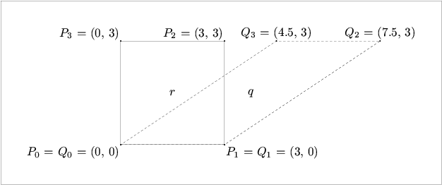
Fig. 1.
The function rotate() rotates a Point about one or more of
the main axes.
It takes three real arguments, specifying the
angles of rotation in degrees about the x, y, and z-axes respectively.
Only the first argument is required, the other two are 0 by default. If
rotation about the y-axis, or the y and z-axes only are required, then 0
must be used as a placeholder for the first and possibly the second
argument.
Point p(0, 1);
p.rotate(90);
p.show("p:");
-| p: (0, 0, -1)
p.rotate(0, 90);
p.show("p:");
-| p: (1, 0, 0)
p.rotate(0, 0, 90);
p.show("p:");
-| p: (0, 1, 0)
The rotations are performed successively about the
x, y, and z-axes. However, rotation is not a commutative
operation, so if rotation about the main axes in a different
order is required, then rotate() must be invoked more than once:
Point A(2, 3, 4);
Point B(A);
A.rotate(30, 60, 90);
A.show("A:");
-| A: (-4.59808, -0.700962, 2.7141)
B.rotate(0, 0, 90);
B.rotate(0, 60);
B.rotate(30);
B.show("B:");
-| B: (-4.9641, 1.43301, -1.51795)
Rotation need not be about the main axes; it can also be performed
about a line defined by two Points. The function rotate()
with two Point arguments and a real argument for the
angle of rotation (in degrees) about the axis. The real argument
is optional, with
180 degrees
as the default.
Point p0 (-1.06066, 0, 1.06066);
Point p1 (1.06066, 0, -1.06066);
p1 *= p0.rotate(0, 30, 30);
p0.show("p0:");
-| p0: (-1.25477, -0.724444, 0.388228)
p1.show("p1:");
-| p1: (1.25477, 0.724444, -0.388228)
p0.draw(p1);
Point p2(1.06066, 0, 1.06066);
p2.show("p2:");
-| p2: (1.06066, 0, 1.06066)
Point p3(p2);
p3.rotate(p1, p0, 45);
p3.show("p3:");
-| p3 (1.09721, 1.15036, 1.17879)
Point p4(p2);
p4.rotate(p1, p0, 90);
p4.show("p4:");
-| p4: (0.882625, 2.05122, 0.485242)
Point p5(p2);
p5.rotate(p1, p0, 135);
p5.show("p5:");
-| p5: (0.542606, 2.17488, -0.613716)
Point p6(p2);
p6.rotate(p1, p0);
p6.show("p6:");
-| p6: (0.276332, 1.44889, -1.47433)
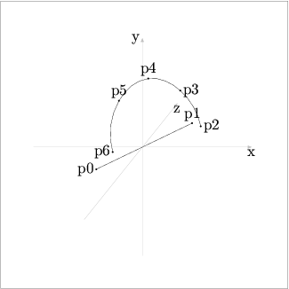
Fig. 2.
I have sometimes gotten erroneous results using rotate() for
rotation about two Points. It's usually worked to reverse the
order of the Point arguments, or to change sign of the angle
argument. I think I've fixed the problem, though.
When Points are transformed using shift(), shear(),
or one of the other transformation functions, the
world_coordinates are not modified directly. Instead,
another data member of class Point is used to store the
information about the transformation, namely transform of
type class Transform. A Transform object has a single
data element of type Matrix and a number of member functions. A
Matrix is
simply a
4 X 4
array11
of reals
defined using typedef real Matrix[4][4].
Such a matrix suffices for performing all
of the transformations (affine and perspective) possible in
three-dimensional space.12
Any combination of transformations can be represented by a single
transformation matrix. This means that consecutive transformations
of a Point can be “saved up” and applied to its coordinates
all at once when needed, rather than updating them for each
transformation.
Transforms work by performing matrix multiplication of
Matrix with the homogeneous world_coordinates of
Points.
If a set of homogeneous coordinates
\alpha = (x, y, z, w)
and
Matrix M =
a e i m
b f j n
c g k o
d h l p
then the set of homogeneous coordinates \beta resulting from multiplying \alpha and M is calculated as follows:
\beta = \alpha\times M = ((xa + yb + zc + wd), (xe + yf + zg + wh),
(xi + yj + zk + wl), (xm + yn + zo + wp))
Please note that each coordinate of \beta can be influenced by all of the coordinates of \alpha.
Operations on matrices are very important in computer graphics applications and are described in many books about computer graphics and geometry. For 3DLDF, I've mostly used Huw Jones' Computer Graphics through Key Mathematics and David Salomon's Computer Graphics and Geometric Modeling.
It is often useful to declare and use Transform objects in 3DLDF,
just as it is for transforms in Metafont. Transformations can be
stored in Transforms and then be used to transform Points
by means of Point::operator*=(const Transform&).
1. Transform t; 2. t.shift(0, 1); 3. Point p(1, 0, 0); 4. p *= t; 5. p.show("p:"); -| p: (1, 1, 0)
When a Transform is declared (line 1), it is
initialized to an identity matrix. All identity matrices are
square, all of the elements of the main diagonal (upper left to lower
right) are 1, and all of the other elements are 0.
So a
4 X 4
identity matrix, as used in 3DLDF, looks like this:
1 0 0 0
0 1 0 0
0 0 1 0
0 0 0 1
If a matrix A is multiplied with an identity matrix I, the result is identical to A, i.e., A * I = A. This is the salient property of an identity matrix.
The same affine transformations are applied in the same way to
Transforms as they are to Points, i.e., the functions
scale(), shift(),
shear(), and rotate()
correspond to the Point
versions of these functions, and they take the same arguments:
Point p;
Transform t;
p.shift(3, 4, 5);
t.shift(3, 4, 5);
⇒ p.transform == t
p.show_transform("p:");
-| p:
Transform:
0 0.707 0.707 0
-0.866 0.354 -0.354 0
-0.5 -0.612 0.612 0
0 0 0 1
t.show("t:");
-| t:
0 0.707 0.707 0
-0.866 0.354 -0.354 0
-0.5 -0.612 0.612 0
0 0 0 1
A Transform t is applied to a
Point P using the binary *= operation
(Point::operator*=(const Transform&))
which performs matrix multiplication of P.transform by t.
See Point Reference; Operators.
Point P(0, 1);
Transform t;
t.rotate(90);
t.show("t:");
-| t:
1 0 0 0
0 0 -1 0
0 1 0 0
0 0 0 1
P *= t;
P.show_transform("P:");
-| P:
Transform:
1 0 0 0
0 0 -1 0
0 1 0 0
0 0 0 1
P.show("P:");
-| P: (0, 0, -1)
In the example above, there is no real need to use a Transform,
since P.rotate(90) could have been called directly.
As constructions become more complex, the power of Transforms
becomes clear:
1. Point p0(0, 0, 0); 2. Point p1(10, 5, 10); 3. Point p2(16, 14, 32); 4. Point p3(25, 50, 99); 5. Point p4(12, 6, 88); 6. Transform a; 7. a.shift(2, 3, 4); 8. a.scale(1, 3, 1); 9. p2 *= p3 *= a; 10. a.rotate(p0, p1, 75); 11. p4 *= a; 12. p2.show("p2:"); -| p2: (18, 51, 36) 13. p3.show("p3:"); -| p3: (27, 159, 103) 14. p4.show("p4:"); -| p4: (24.4647, -46.2869, 81.5353)
In this example, a is shifted and scaled, and a is applied
to both in line 9. This works, because
the binary operation
operator*=(const Transform& t) returns t,
making it possible to chain invocations of *=.
Following this, a is rotated
75 degrees
about the line through p_0 and p_1. Finally, all three transformations, which are stored in a, are applied to p_4.
Inversion is another operation that can be performed on
Transforms. This makes it possible to reverse the effect of a
Transform, which may represent multiple transformations.
Point p;
Transform t;
t.shift(1, 2, 3);
t.scale(2, 3, 4);
t.rotate(45, 45, 30);
t.show("t:");
-| t:
1.22 0.707 1.41 0
0.238 2.59 -1.5 0
-3.15 1.45 2 0
-7.74 10.2 4.41 1
p *= t;
p.show("p:");
-| p: (-7.74, 10.2, 4.41)
Transform u;
u = t.inverse();
u.show("u:");
-| u:
0.306 0.0265 -0.197 2.85e-09
0.177 0.287 0.0906 -1.12e-09
0.354 -0.167 0.125 0
-1 -2 -3 1
p *= u;
p.show("p:");
-| p: (0, 0, 0)
u *= t;
u.show("u:");
-| u:
1 0 0 0
0 1 0 0
0 0 1 0
0 0 0 1
If inverse() is called with no argument, or with the argument
false, it returns a
Transform representing its inverse, and remains unchanged. If it
is called with the argument true, it is set to its inverse.
Complete reversal of the transformations applied to a Point, as
in the previous example, probably won't make much sense. However,
partial reversal is a valuable technique. For example, it is used in
rotate() for rotation about a line defined by two Points.
The following example merely demonstrates the basic principle; an
example that does something useful would be too complicated.
Transform t;
t.shift(3, 4, 5);
t.rotate(45);
t.scale(2, 2, 2);
Point p;
p *= t;
p.show("p:");
-| p: (6, 12.7279, 1.41421)
t.inverse(true);
p.rotate(90, 90);
p *= t;
p.show("p:");
-| p: (3.36396, -5.62132, -2.37868)
It's all very well to declare Points, place them at particular
locations, print their locations to standard output, and transform them,
but none of these operations produce any MetaPost output.
In order to do this, the first step is to use drawing and
filling commands. The drawing and filling commands in 3DLDF are
modelled on those in Metafont.
The following example demonstrates how to draw a dot specifying a
Color (see Color Reference) and a
pen13.
Point P(0, 1);
P.drawdot(Colors::black, "pencircle scaled 3mm");
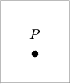
Fig. 3.
In drawdot(), a Color argument precedes the
string argument for the pen, so “Colors::black” must be
specified as a placeholder in the call to
drawdot().14
The following example “undraws” a dot at the same location using a
smaller pen. undraw() does not take a Color argument.
p.undrawdot("pencircle scaled 2mm");
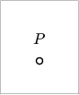
Fig. 4.
For complete descriptions of drawdot() and undrawdot(),
see Point Reference; Drawing.
Drawing and undrawing dots is not very exciting. In order to make a
proper drawing it is necessary to connect the Points. The most
basic way of doing this is to use the Point member function
draw() with a Point argument:
Point p0;
Point p1(2, 2);
p0.draw(p1);
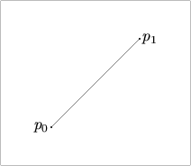
Fig. 5.
p0.draw(p1) is equivalent in its effect to
p1.draw(p0).
The function Point::draw() takes a required Point&
argument (a reference15
to a Point) an optional Color
argument, and optional string arguments for
the dash pattern and the
pen. The string arguments, if present, are passed unchanged to
the output file.
The empty string following the
argument p1 is a placeholder for the dash pattern argument, which
isn't used here.
p0.draw(p1, Colors::gray, "", "pensquare scaled .5cm rotated 45");
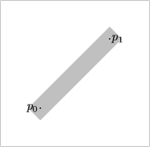
Fig. 6.
The function Point::undraw() takes a required Point&
argument and
optional string arguments for the dash pattern and the
pen. Unlike Point::draw(), a Color argument would have no
meaning for Point::undraw().
The string arguments are passed unchanged to the output file.
undraw() can be used to “hollow out” the region
drawn in [the previous figure]
. Since a dash pattern is used, portions
of the middle of the region are not undrawn.
p0.undraw(p1, "evenly scaled 6", "pencircle scaled .2cm");
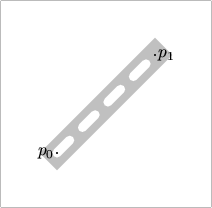
Fig. 7.
For complete descriptions of draw() and undraw(),
see Point Reference; Drawing.
The labels in the previous examples were made by using the functions
Point::label() and Point::dotlabel(), which make it
possible to include TeX text in a drawing.
label() and dotlabel() take string arguments for
the text of the label and the position of the label with respect to the
Point. The label text is formatted using TeX, so it can contain
math mode material between dollar signs. Please note that double backslashes
must be used, where a single backslash would suffice in a file of
MetaPost code, for example, for TeX control sequences.
Alternatively, a short argument can be used for the label.
The position argument is optional, with "top" as the default. If
the empty string "" is used, the label will centered about
the Point itself. This will usually only make sense for
label(), because it would otherwise interfere with the dot.
Valid arguments for the
position are the same as in MetaPost: "top", "bot"
(bottom), "lft" (left), "rt" (right),
"ulft" (upper left), "urt" (upper right),
"llft" (lower left), and "lrt" (lower right).
Point p0;
Point p1(1);
Point p2(2);
Point p3(p0);
Point p4(p1);
Point p5(p2);
p3 *= p4 *= p5.shift(0, 1);
p0.draw(p1);
p1.draw(p2);
p2.draw(p5);
p5.draw(p4);
p4.draw(p3);
p3.draw(p0);
p0.label($p_0$, "");
p1.dotlabel(1);
p2.dotlabel("p2", "bot");
p3.dotlabel("This is $p_3$", "lft");
p4.label(4);
p5.label("$\\leftarrow p_5$", "rt");
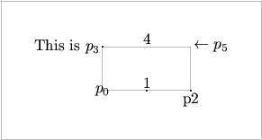
Fig. 8.
For complete descriptions of Point::label() and
Point::dotlabel(), see Points; Labelling.
Points alone are not enough for making useful drawings. The next
step is to combine them into Paths, which are similar to
Metafont's paths, except that they are three-dimensional.
A Path consists of a number of Points and strings
representing the connectors. The latter are not processed by
3DLDF, but are passed unchanged to the output file. They must be valid
connectors for MetaPost, e.g.:
..
...
--
---
&
curl{2}..
{dir 60}..
{z1 - z2}..
.. tension 1 and 1.5..
..controls z1 and z2..
Usually, it will only make sense to use .. or –, and not
..., —, tension, curl, controls, or any of the
other possibilities, in Paths, unless
you are sure that they will only be viewed with no foreshortening due to
the perspective
projection. This can be the case, when a Path lies in a plane
parallel to one of the major planes, and is projected using parallel
projection onto that plane. Otherwise,
the result of using these connectors is likely to be unsatisfactory, because
MetaPost performs its calculations based purely on the two-dimensional
values of the points in the perspective projection.
While the Points on the Path will be projected correctly,
the course of the Path between these Points is likely to
differ, depending on the values of the Focus
used (see Focuses), so that
different views of the same Path may well be mutually
inconsistent.
This problem doesn't arise with “–”, since the perspective
projection does not “unstraighten” straight lines,
but it does with “..”, even without tension, curl,
or controls.
The solution is to use enough Points, since a greater number of
Points on a Path tends to reduce the number
of possible courses through the Points.16
There are various ways of declaring and initializing Paths. The
simplest is to use the constructor taking two Point arguments:
Point A;
Point B(2, 2);
Path p(A, B);
p.draw();
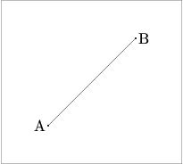
Fig. 9.
Paths created in this way are important, because they are
guaranteed to be linear, as long as no operations are performed on them
that cause them to become non-linear.
Linear Paths can be used to find intersections.
See Path Intersections.
Paths can be declared and initialized using a single connector
and an arbitrary number of Points. The first argument is a
string specifying the connector. It is followed by a
bool, indicating whether the
Path is cyclical or not. Then, an arbitrary number of
pointers to Point follow. The last argument must be 0.17
Point p[3];
p[0].shift(1);
p[1].set(1, 2, 2);
p[2].set(1, 0, 2);
Path pa("--", true, &p[0], &p[1], &p[2], 0);
pa.draw();
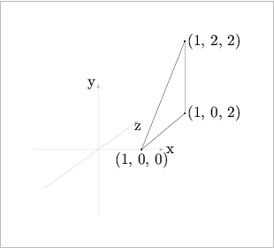
Fig. 10.
Another constructor must be used for Paths with
more than one connector and an arbitrary number of Points.
The argument list starts with a pointer to Point, followed by
string for the first connector. Then,
pointer to Point arguments alternate with string arguments
for the connectors.
Again, the list of arguments ends in 0. There is no
need for a bool to indicate whether the Path is cyclical
or not; if it is, the last non-zero argument will be a connector,
otherwise, it will be a pointer to Point.
Point p[8];
p[0].set(-2);
p[1].set(2);
p[2].set(0, 0, -2);
p[3].set(0, 0, 2);
p[4] = p[0].mediate(p[2]);
p[5] = p[2].mediate(p[1]);
p[6] = p[1].mediate(p[3]);
p[7] = p[3].mediate(p[0]);
p[4] *= p[5] *= p[6] *= p[7].shift(0, 1);
Path pa(&p[0], "..", &p[4], "...", &p[2],
"..", &p[5], "...", &p[1], "..", &p[6],
"...", &p[3], "..", &p[7], "...", 0);
pa.draw();
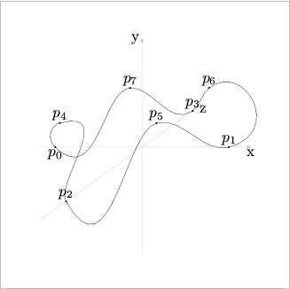
Fig. 11.
As mentioned above (see Accuracy), specifying connectors is
problematic for three-dimensional Paths,
because MetaPost ultimately calculates the “most pleasing curve”
based on the two-dimensional points in the MetaPost code written by
3DLDF.18
For this reason, it's advisable to avoid specifying ‘curl’,
‘dir’, ‘tension’ or control points in connectors.
The more Points a (3DLDF) Path or other object contains,
the less freedom MetaPost has to determine the (MetaPost) path
through them.
So a three-dimensional Path or
other object in 3DLDF should have enough Points to ensure
satisfactory results. The Path in [the previous figure]
does not
really have enough Points. It may require some trial and error
to determine
what a sufficient number of Points is in a given case.
Paths are very flexible, but not always convenient. 3DLDF
provides a number of classes representing common geometric
Shapes, which will be described in subsequent sections, and I
intend to add more in the course of time.
The easiest way to draw a Path is with no arguments.
Point pt[5];
pt[0].set(-1, -2);
pt[1].set(0, -3);
pt[2].set(1, 0);
pt[3].set(2, 1);
pt[4].set(-1, 2);
Path pa("..", true, &pt[0], &pt[1], &pt[2], &pt[3], &pt[4], 0);
pa.draw();
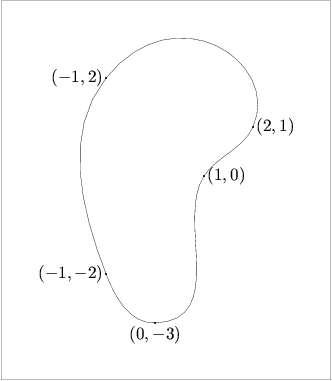
Fig. 12.
Since pa is closed, it can be filled as well as drawn. The
following example uses fill() with a Color argument, in
order to avoid having a large splotch of black on the page.
Common Colors are declared in the namespace Colors.
See Color Reference.
pa.fill(Colors::gray);
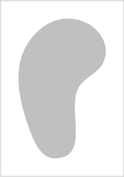
Fig. 13.
Closed Paths can be filled and drawn, using the function
filldraw(). This function draws the Path using the pen
specified, or MetaPost's currentpen by default. A Color
for drawing the Path can also be specified, otherwise, the
default color (currently Colors::black) is used.
In addition, the Path is filled using a second Color,
which can be specified, or the background_color
(Colors::background_color), by default.
Filling a Path using the background color causes it to hide
objects that lie behind it.
See Surface Hiding, for a description of the surface hiding
algorithm, and examples. Currently, this algorithm is quite primitive
and only works
for simple cases.
Point p0(-3, 0, 1);
Point p1(3, 1, 1);
p0.draw(p1);
pa.filldraw();
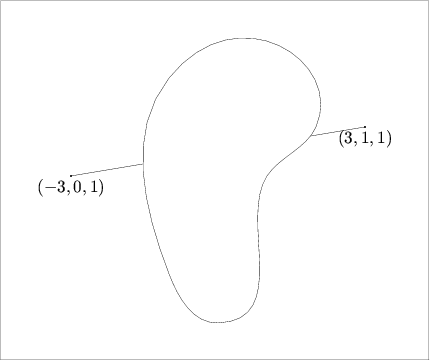
Fig. 14.
The following example uses arguments for the Colors used for
drawing and filling, and the pen. The empty string argument before the
pen argument is a placeholder for the dash pattern argument.
pa.filldraw(black, gray, "",
"pensquare xscaled 3mm yscaled 1mm rotated 60");
Fig. 15.
Paths can also be “undrawn”, “unfilled”, and “unfilldrawn”,
using the corresponding functions:
pa.fill(gray);
p0.undraw(p1, "", "pencircle scaled 3mm");
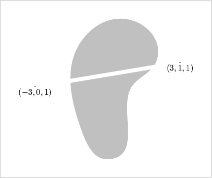
Fig. 16.
pa.fill(gray);
Path q;
q = pa;
q.scale(.5, .5);
q.unfill();
Fig. 17.
The function unfilldraw() takes a Color argument for
drawing the Path, which is *Colors::background_color by
default. This makes it possible to unfill the Path while drawing
the outline with a visible Color. On the other hand, it also
makes it necessary to specify *Colors::background_color or
Colors::white, if the user wants to use the dash pattern and/or
pen arguments, without drawing the Path.
pa.fill(gray);
q.unfilldraw(white, "", "pensquare xscaled 3mm yscaled 1mm");
Fig. 18.
The following example demonstrates the use of unfilldraw() with
black as its Color argument. Unfortunately, it also
demonstrates one of the limitations of the surface hiding algorith: The
line from p0 to p1 is hidden by the
filled Path pa. Since the portion of pa covered by
Path q has been unfilled,
the line from p_0 to p_1
should be visible as it passes through q. However, from the
point of view of 3DLDF, there is no relationship between pa and
q; nor does it “know” whether a Path has been filled or
unfilled. If it's on a Picture, it will hide objects lying
behind it, unless the surface hiding algorithm fails for another
reason. See Surface Hiding, for more information.
p0.draw(p1);
pa.fill(gray);
q.unfilldraw(black, "", "pensquare xscaled 3mm yscaled 1mm");
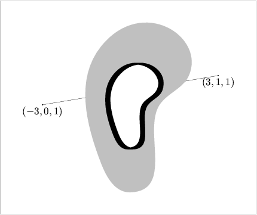
Fig. 19.
See Paths; Drawing and Filling, for more information, and complete descriptions of the functions.
3DLDF currently includes the following classes representing plane
geometric figures: Polygon, Reg_Cl_Plane_Curve
(“Regular Closed Plane Curve”), Reg_Polygon (“Regular
Polygon”), Rectangle, Ellipse and
Circle. Polygon and Reg_Cl_Plane_Curve are derived
from Path, Reg_Polygon and Rectangle are derived
from Polygon, and Ellipse and Circle are derived
from Reg_Cl_Plane_Curve. Polygon and
Reg_Cl_Plane_Curve are meant to be used as base classes only, so
objects of these types should normally never be declared.
Since Reg_Polygon, Rectangle, Ellipse, and
Circle all ultimately derive from Path, they are really
just special kinds of Path.
In particular, they inherit their drawing and filling functions from
Path, and their transformation functions take the same arguments
as the Path versions.
They also have constructors
and setting functions that work in a similar way, with a few minor
differences, to account for their different natures.
See Polygon Reference, Rectangle Reference,
Ellipse Reference, and Circle Reference, for complete
information on these classes.
The following example creates a pentagon in the x-z plane, centered about the origin, whose enclosing circle has a radius equal to 3cm.
default_focus.set(2, 3, -10, 2, 3, 10, 10);
Reg_Polygon p(origin, 5, 3);
p.draw();
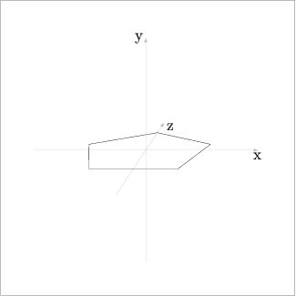
Fig. 20.
Three additional arguments cause the pentagon to be rotated about the x, y, and z axes by the amount indicated. In this example, it's rotated 90 degrees
about the x-axis, so that it comes to lie in the x-y plane:
Reg_Polygon p(origin, 5, 3, 90);
p.draw();
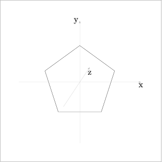
Fig. 21.
In this example, it's rotated 36 degrees
about the y-axis, so that it appears to point in the opposite direction from the first example:
Reg_Polygon p(origin, 5, 3, 0, 36);
p.draw();
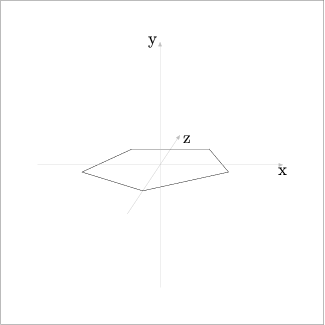
Fig. 22.
In this example, it's rotated 90 degrees
about the z-axis, so that it lies in the z-y plane:
Reg_Polygon p(origin, 5, 3, 0, 0, 90);
p.draw();
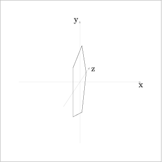
Fig. 23.
In this example, it's rotated 45 degrees
about the x, y, and z-axes in that order:
Reg_Polygon p(origin, 5, 3, 45, 45, 45);
p.draw();
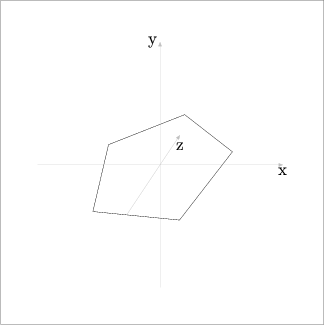
Fig. 24.
Reg_Polygons need not be centered about the origin. If
another Point pt is used as the first argument, the Reg_Polygon
is first created with its center at the origin, then the specified
rotations, if any, are performed. Finally, the Reg_Polygon is
shifted such that its center comes to lie on pt:
Point P(-2, 1, 1);
Reg_Polygon hex(P, 6, 4, 60, 30, 30);
hex.draw();
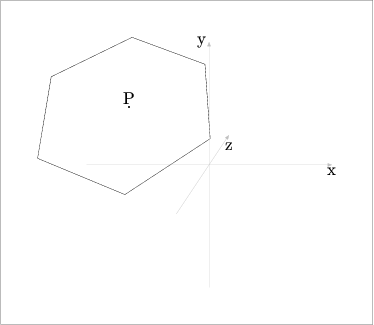
Fig. 25.
In the following example, the Reg_Polygon polygon is first
declared using the default constructor, which creates an empty
Reg_Polygon. Then, the polygon is repeatedly changed using
the setting function corresponding to the constructor used in the
previous examples. [next figure]
demonstrates that a given
Reg_Polygon need not always have the same number of sides.
Point p(0, -3);
Reg_Polygon polygon;
for (int i = 3; i < 9; ++i)
{
polygon.set(p, i, 3);
polygon.draw();
p.shift(0, 1);
}
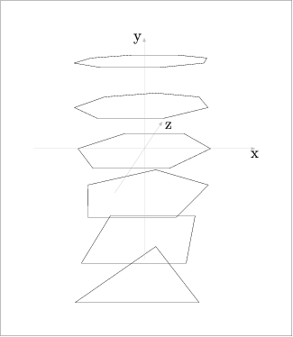
Fig. 26.
A Rectangle can be constructed in the x-z plane by specifying a
center Point, the width, and the height:
Rectangle r(origin, 2, 3);
r.draw();
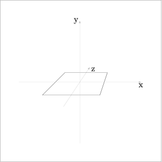
Fig. 27.
Three additional arguments can be used to specify rotation about the x, y, and z-axes respectively:
Rectangle r(origin, 2, 3, 30, 45, 15);
r.draw();
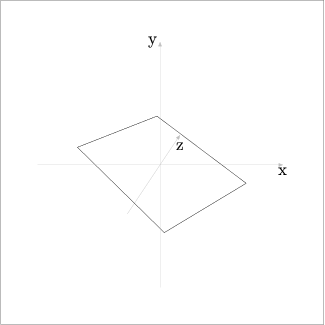
Fig. 28.
If a Point p other than the origin is specified as the center of
the Rectangle, the latter is first created in the x-z plane,
centered about the origin, as above. Then, any rotations specified are
performed. Finally, the Rectangle is shifted such that its center
comes to lie at p:
Point p0(.5, 1, 3);
Rectangle r(p0, 4, 2, 30, 30, 30);
r.draw();
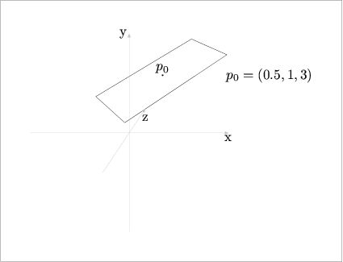
Fig. 29.
This constructor has a corresponding setting function:
Rectangle r;
for (int i = 0; i < 180; i += 30)
{
r.set(origin, 4, 2, i);
r.draw();
}
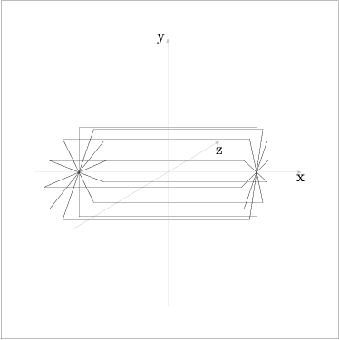
Fig. 30.
Rectangles can also be specified using four Points as
arguments, whereby they must be ordered so that they are contiguous in
the resulting Rectangle:
Point pt[4];
pt[0].shift(-1, -2);
pt[2] = pt[1] = pt[0];
pt[1].rotate(180);
pt[3] = pt[1];
pt[2] *= pt[3].rotate(0, 180);
Rectangle r(pt[0], pt[2], pt[3], pt[1]);
r.draw();
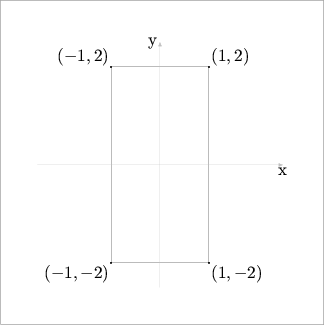
Fig. 31.
This constructor checks whether the Point arguments are coplanar,
however, it does not check whether they are really the corners of a
valid rectangle; the user, or the code that calls this function, must
ensure that they are. In the following
example, r, although not rectangular, is a Rectangle, as
far as 3DLDF is concerned:
pt[0].shift(0, -1);
pt[3].shift(0, 1);
Rectangle q(pt[0], pt[2], pt[3], pt[1]);
q.draw();
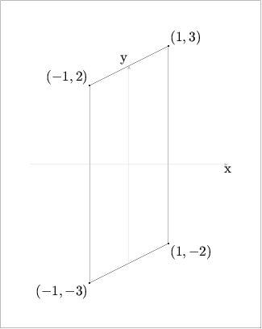
Fig. 32.
This constructor is not really intended to be used directly, but should
mostly be called from within other functions, that should ensure that
the arguments produce a rectangular Rectangle. There is also no
guarantee that transformations or other functions called on
Rectangle, Circle, or other classes representing
geometric figures won't cause them to become non-rectangular,
non-circular, or otherwise irregular. Sometimes, this might even be
desirable. I plan to add the function
Rectangle::is_rectangular() soon, so that users can test
Rectangles for rectangularity.
Ellipse has a constructor similar to those for
Reg_Polygon and Rectangle. The first argument is the
center of the Ellipse, and the following two specify the lengths
of the horizontal and vertical axes respectively. The Ellipse is
first created in the x-z plane, centered about the origin. The
horizontal axis lies along the x-axis and the vertical axis lies along
the z-axis. The three subsequent arguments specify the amounts of
rotation about the x, y, and z-axes respectively and default to 0.
Finally,
Ellipse is shifted such that its center comes to lie at the
Point specified in the first argument.
Point pt(-1, 1, 1);
Ellipse e(pt, 3, 6, 90);
e.draw();
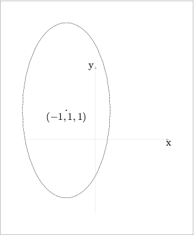
Fig. 33.
As you may expect, this constructor has a corresponding setting function:
Ellipse e;
real h_save = 1.5;
real v_save = 2;
real h = h_save;
real v = v_save;
Point p(-1);
for (int i = 0; i < 5; ++i)
{
e.set(p, h, v, 90);
e.draw();
h_save += .25;
v_save += .25;
h *= sqrt(h_save);
v *= sqrt(v_save);
p.shift(0, 0, 2);
}
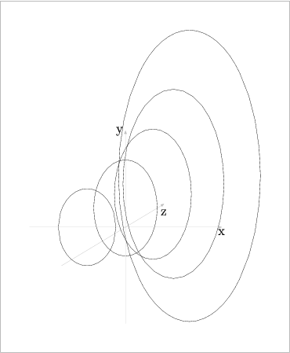
Fig. 34.
Circles are constructed just like Ellipses, except that
the vertical and horizontal axes are per definition the same, so
there's only one argument for the diameter, instead of two for the
horizontal and vertical axes:
Point P(0, 2, 1);
Circle c(P, 3.5, 90, 90);
c.draw();
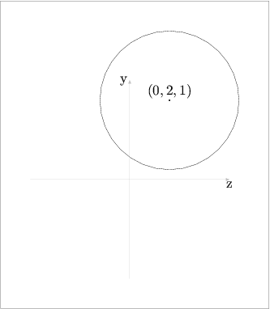
Fig. 35.
This constructor, too, has a corresponding setting function:
Circle c;
Point p(-1, 0, 5);
for (int i = 0; i < 16; ++i)
{
c.set(p, 5, i * 22.5, 0, 0, 64);
c.draw();
}
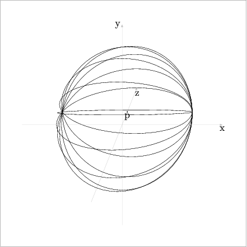
Fig. 36.
In the preceding example, the last argument to set(), namely “64”,
is for the number of Points used for constructing the perimeter
of the Circle. The default value is 16, however, if it is used,
foreshortening distorts the most nearly horizontal Circle.
Increasing the number of points used improves its appearance. However,
there may be a limit to how much improvement is possible.
See Accuracy.
A cuboid is a solid figure consisting of six rectangular faces
that meet at right angles. A cube is a special form of cuboid, whose
faces are all squares. The constructor for the class Cuboid
follows the pattern familiar from the constructors for the plane
figures: The first argument is the center of the Cuboid,
followed by three real arguments for the height, width, and
depth, and then three more real arguments for the angles of
rotation about the x, y, and z-axes. The Cuboid is first
constructed with its center at the origin. Its width, height, and depth
are measured along the x, y, and z-axes respectively. If rotations are
specified, it is rotated about the x, y, z-axes in that order. Finally,
it is shifted such that its center comes to lie on its Point
argument, if the latter is not the origin.
If the width, height, and depth arguments are equal, the Cuboid
is a cube:
Cuboid c0(origin, 3, 3, 3, 0, 30);
c0.draw();
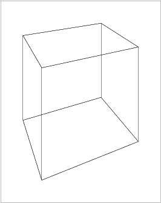
Fig. 37.
In the following example, the Cuboid is “filldrawn”, so that
the lines dilineating the hidden surfaces of the Cuboid are
covered.
Cuboid c1(origin, 3, 4, 5, 0, 30);
c1.filldraw();
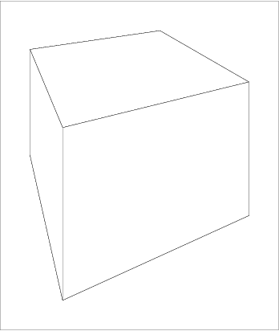
Fig. 38.
The class Polyhedron is meant for use only as a base class;
no objects of type Polyhedron should be declared. Instead, there
is a class for each of the different drawable polyhedra. Currently,
3DLDF defines only three: Tetrahedron, Dodecahedron, and
Icosahedron. There's no need for a Cube class, because
cubes can be drawn using Cuboid (see Cuboid Getstart).
Polyhedra have a high priority in my plans for 3DLDF.
I intend to add Octahedron soon, which will complete the set of regular
Platonic polyhedra. Then I will begin adding the semi-regular
Archimedean polyhedra, and their duals.
The constructors for the classes derived from Polyhedron follow
the pattern familiar from the classes already described. The constructors
for the classes described below have identical arguments: First, a
Point specifying the center, then a real for the
diameter of the surrounding circle (Umkreis, in German) of one of
its polygonal faces, followed by three
real arguments for the angles of rotation about the main axes.
The center of a tetrahedron is the intersection of the lines from a
vertex to the center of the opposite side. At least, in 3DLDF, this is
the center of a Tetrahedron. I'm not 100 degrees
certain
that this is mathematically correct.
Tetrahedron t(origin, 4);
t.draw();
t.get_center().dotlabel("$c$");
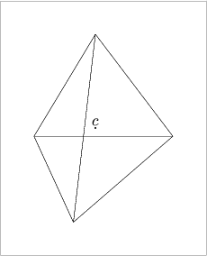
Fig. 39.
A dodecahedron has 12 similar regular pentagonal faces.
The following examples show the same Dodecahedron using different
projections:
default_focus.set(2, 5, -10, 2, 5, 10, 10);
Dodecahedron d(origin, 3);
d.draw();
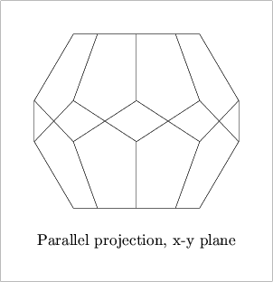
Fig. 40.
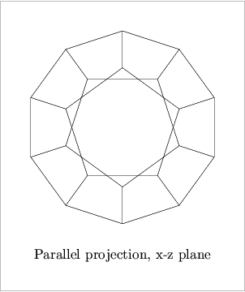
Fig. 41.
Please note that the Dodecahedron in [next figure]
is drawn, and not
filldrawn!
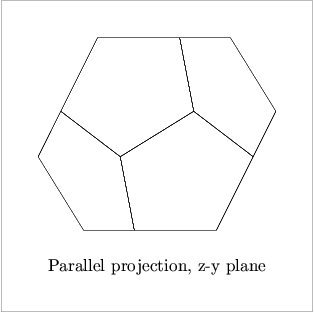
Fig. 42.
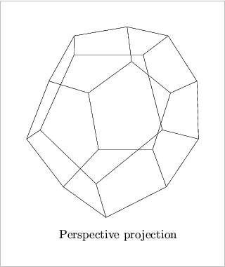
Fig. 43.
In [next figure]
, d is filldrawn. In this case,
the surface hiding algorithm has worked properly.
See Surface Hiding.
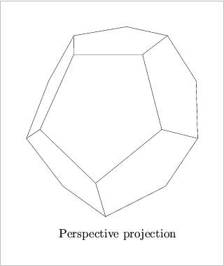
Fig. 44.
An icosahedron has 20 similar regular triangular faces.
The following examples show the same Icosahedron using different
projections:
default_focus.set(3, 0, -10, 2, 0, 10, 10);
Icosahedron i(origin, 3);
i.draw();
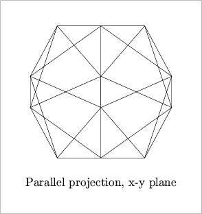
Fig. 45.
![[Figure 46. Not displayed.]](./graphics/png/3DLDF46.png)
Fig. 46.
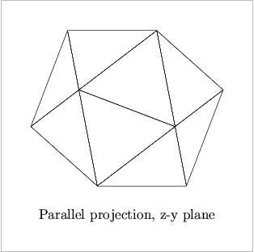
Fig. 47.
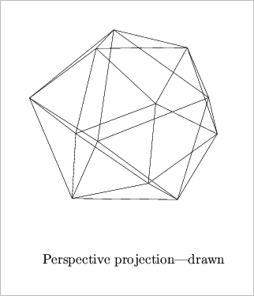
Fig. 48.
In [next figure]
, i is filldrawn. In this case,
the surface hiding algorithm has worked properly.
See Surface Hiding.
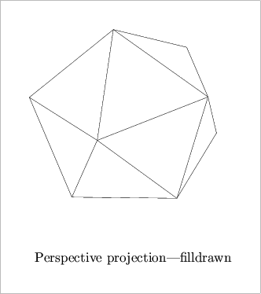
Fig. 49.
Applying drawing and filling operations to the drawable objects described
in the previous chapters isn't enough to produce output. These
operations merely modify the Picture object that was passed to
them as an argument (current_picture, by default).
Pictures in 3DLDF are quite different from pictures in
MetaPost.
When a drawing or filling operation is applied to an object O, a
copy of O, C, is allocated on the free store, a pointer to
Shape S is pointed at C, and S is pushed onto
the vector<Shape*> shapes on the Picture P, which
was passed as an argument to the drawing or filling command. The
arguments for the pen,
dash pattern, Color, and any others, are used to set the
corresponding data members of C (not O).
In order to actually
cause MetaPost code to be written to the output file, it is necessary
to invoke P.output(). Now, the appropriate version of
output() is applied to each of the objects pointed to
by a pointer on P.shapes. output() is a pure
virtual function in Shape, so all classes derived from
Shape must have an output() function. So, if
shapes[0] points to a Path,
Path::output() is called, if
shapes[1] points to a Point,
Point::output() is called, and if shapes[2] points to an
object of a type derived from Solid, Solid::output() is
called.
Point, Path, and Solid are namely the only classes
derived from Shape for which a version of output() is defined. All
other Shapes are derived from one of these classes.
These output()
functions then write the MetaPost code to the
output file through the output file stream out_stream.
beginfig(1);
default_focus.set(0, 0, -10, 0, 0, 10, 10);
Circle c(origin, 3, 90);
c.draw();
c.shift(1.5);
c.draw();
current_picture.output();
endfig(1);
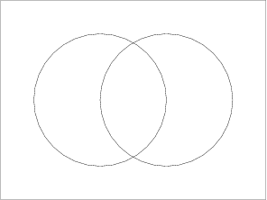
Fig. 50.
The C++
code for [the previous figure]
starts with the command
beginfig(1) and ends with the command
endfig(1).
They simply write “beginfig(<arg>
)” and
“endfig()” to
out_stream,
The optional
unsigned int argument to endfig() is not written to
out_stream, it's merely
“syntactic sugar” for the user.
In MetaPost, the endfig command causes output and then clears
currentpicture. This is not the case in 3DLDF, where
Picture::output() and Picture::clear() must
be invoked explicitly:
beginfig(1);
Point p0;
Point p1(1, 2, 3);
p0.draw(p1);
current_picture.output();
endfig(1);
beginfig(2);
current_picture.clear();
Circle C(origin, 3);
C.fill();
current_picture.output();
endfig(2);
In [next figure]
, two Pictures are used within a single figure.
beginfig(1);
Picture my_picture;
default_focus.set(0, 0, -10, 0, 0, 10, 10);
Circle c(origin, 3, 90);
c.draw(my_picture);
my_picture.output();
c.shift(1.5);
c.fill(light_gray);
current_picture.output();
endfig(1);
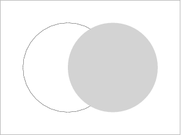
Fig. 51.
Multiple objects, or complex objects made up of sub-objects, can be
stored in a Picture, so that operations can be applied to them
as a group:
default_focus.set(7, 5, -10, 7, 5, 10, 10);
Cuboid c0(origin, 5, 5, 5);
c0.shift(0, 0, 3);
c0.draw();
Circle z0(c0.get_rectangle_center(0), 2.5, 90, 0, 0, 64);
z0.draw();
Circle z1(z0);
z1.shift(0, 0, -1);
z1.draw();
int i;
int j = z0.get_size();
for (i = 0; i < 8; ++i)
z0.get_point(i * j/8).draw(z1.get_point(i * j/8));
Cuboid c1(c0.get_rectangle_center(4), 5, 3, 3);
c1.shift(0, 2.5);
c1.draw();
Rectangle r0 = *c1.get_rectangle_ptr(3);
Point p[10];
for (i = 0; i < 4; ++i)
p[i] = r0.get_point(i);
p[4] = r0.get_mid_point(0);
p[5] = r0.get_mid_point(2);
p[6] = p[4].mediate(p[5], 2/3.0);
Circle z2(p[6], 2, 90, 90, 0, 16);
z2.draw();
Circle z3 = z2;
z3.shift(3);
z3.draw();
j = z2.get_size();
for (i = 0; i < 8; ++i)
z2.get_point(i * j/8).draw(z3.get_point(i * j/8));
p[7] = c0.get_rectangle_center(2);
p[7].shift(-4);
p[8] = c0.get_rectangle_center(3);
p[8].shift(4);
current_picture.output();
current_picture.rotate(45, 45);
current_picture.shift(10, 0, 3);
current_picture.output();
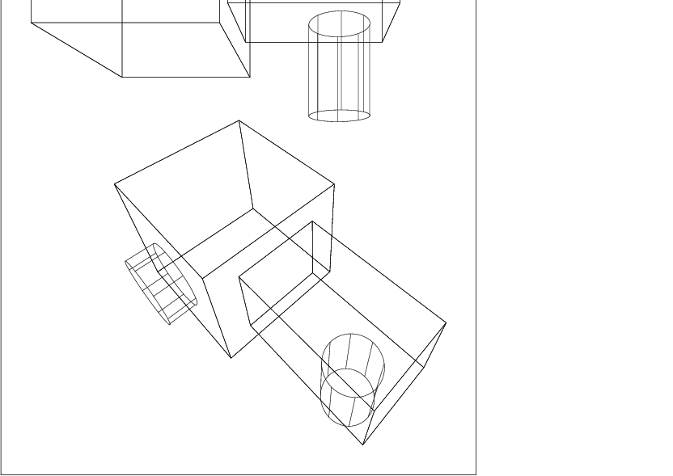
Fig. 52.
Let's say the complex object in [the previous figure]
represents a
furnace. From the point of view of 3DLDF, however, it's not an object
at all, and the drawing consists of a collection of unrelated
Cuboids, Circles, Rectangles, and Paths.
If we hadn't put it into a Picture, we could still have rotated
and shifted it, but only by applying the operations to each of the
sub-objects individually.
One consequence of the way Pictures are output in 3DLDF is, that
the following code will not work:
beginfig(1);
Point p(1, 2);
Point q(1, 3);
out_stream << "pickup pencircle scaled .5mm;" << endl;
origin.draw(p);
out_stream << "pickup pensquare xscaled .3mm rotated 30;" << endl;
origin.draw(q);
current_picture.output();
endfig();
This is the MetaPost code that results:
beginfig(1);
pickup pencircle scaled .5mm;
pickup pensquare xscaled .3mm rotated 30;
draw (0.000000cm, -3.000000cm) -- (1.000000cm, -1.000000cm);
draw (0.000000cm, -3.000000cm) -- (1.000000cm, 0.000000cm);
endfig;
It's perfectly legitimate to write
raw MetaPost code to out_stream, as in lines 4 and 6 of this
example. However, the draw() commands do not cause any output to
out_stream. The MetaPost drawing commands are written to
out_stream when current_picture.output() is called.
Therefore, the pickup commands are “bunched up” before the
drawing commands.
In this example,
setting currentpen to pencircle scaled .5mm has no effect,
because it is immediately reset to
pensquare xscaled .3mm rotated 30 in the MetaPost code, before
the draw commands.
It is not possible to change currentpen in this way within a
Picture.
Since the draw() commands in the 3DLDF
code didn't specify a pen argument,
currentpen with its final value is used for both of the MetaPost
draw commands. For any given invocation of
Picture::output(), there can only be one value of
currentpen. All other pens must be passed as arguments to the
drawing commands.
In order for a 3D graphic program to be useful, it must be able to make two-dimensional projections of its three-dimensional constructions so that they can be displayed on computer screens and printed out. These are some of the possible projections:
The function Picture::output() takes a const unsigned
short argument specifying the projection to be used. The user should
probably avoid using explicit unsigned shorts, but should use the
constants defined for this purpose in the
namespace Projections.19
The constants are PERSP, PARALLEL_X_Y,
PARALLEL_X_Z,
PARALLEL_Z_Y, AXON, and ISO. The latter two should
not be used, because the axonometric and isometric projections have not
yet been implemented.
When a Picture is projected onto the x-y plane, the
x and y-values from the world_coordinates of the Points
belonging to the objects on the
Picture are copied to
their projective_coordinates, which are
used in the MetaPost code written to out_stream.
If a Picture p contains an object in the x-y plane,
or in a plane parallel to the x-y plane, then
the result of p.output(Projections::PARALLEL_X_Y) is more-or-less
equivalent to just using MetaPost without 3DLDF.
Rectangle r(origin, 3, 3, 90);
Circle c(origin, 3, 90);
c *= r.shift(0, 0, 5);
r.draw();
c.draw();
current_picture.output(Projections::PARALLEL_X_Y);
![[Figure 53. Not displayed.]](./graphics/png/3DLDF53.png)
Fig. 53.
If the objects do not lie in the x-y plane, or a plane parallel to the x-y plane, then the projection will be distorted:
current_picture.output(Projections::PARALLEL_X_Y);
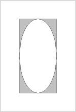
Fig. 54.
Picture::output() can be called with an additional real
argument factor for magnifying or shrinking the Picture.
Rectangle r(origin, 4, 4, 90, 60);
Circle c(origin, 4, 90, 60);
c *= r.shift(0, 0, 5);
r.filldraw(black, gray);
c.unfilldraw(black);
current_picture.output(Projections::PARALLEL_X_Y, .5);
current_picture.shift(2.5);
current_picture.output(Projections::PARALLEL_X_Y);
current_picture.shift(1);
current_picture.output(Projections::PARALLEL_X_Y, 2);
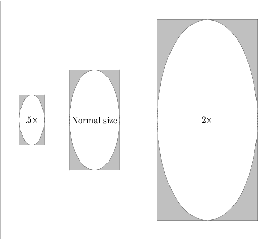
Fig. 55.
Parallel projection onto the x-z and z-y planes are completely analogous to parallel projection onto the x-y plane.
The perspective projection obeys the laws of linear perspective. In 3DLDF, it is performed by means of a transformation, whose effect is, to the best of my knowledge, exactly equivalent to the result of a perspective projection done by hand using vanishing points and rulers.
It is very helpful to the artist to understand the laws of linear perspective, and to know how to make a perspective drawing by hand.20 However, it is a very tedious and error-prone procedure (I know, I've done it). One of my main motivations for writing 3DLDF was so I wouldn't have to do it anymore.
[next figure] shows a perspective construction, the way it could be done by hand. The point of view, or focus is located 6cm from the picture plane, and 4cm above the ground (or x-z) plane at the point (0, 4, -6). The rectangle R lies in the ground plane, with the point r_0 at (2, 0, 1.5). The right side of R, with length = 2cm lies at an angle of 40 to the ground line, which corresponds to the intersection line of the ground plane with the picture plane, and the left side, with length = 5cm, at an angle of 90 degrees - 40 degrees = 50 degrees to the ground line.
Fig. 56.
While it's possible to use 3DLDF to make a perspective construction in the traditional way, as [the previous figure] shows, the code for [next figure]
achieves the same result more efficiently:
default_focus.set(0, 4, -6, 0, 4, 6, 6);
Rectangle r(origin, 2, 5, 0, 40);
Point p(2, 0, 1.5);
r.shift(p - r.get_point(0));
r.draw();
Fig. 57.
In [the second-to-last figure]
, it was
convenient to start with the corner point r_0;
if we needed the center of R, it would have to be found from the
corner points.
However, in 3DLDF, Rectangles are most often constructed about
the center. Therefore, in [next figure]
, R is first
constructed about the origin, with the
rotation about the y-axis passed as an argument to the constructor.
It is then shifted such that *(R.points[0]), the first
(or zeroth, if you will) Point on R comes to lie at
(2, 0, 1.5).
Unlike the other transformations currently used in 3DLDF, the perspective transformation is non-affine. Affine transformations maintain parallelity of lines, while the rules of perspective state that parallel lines, with one exception, appear to recede toward a vanishing point.21
In [the second-to-last figure] , the lines from r_0 to r_1 and from r_3 to r_2 appear to vanish toward the right-hand 40 degrees vanishing point, while the lines from r_0 to r_3 and from r_1 to r_2 appear to vanish toward the left-hand 50 degrees vanishing point. The lower the angle of a vanishing point, the further away it is from the center of vision, as [next figure] shows:
Fig. 58.
In [the previous figure] , the 0.5 degrees vanishing point is nearly 5 and 3/4 meters away from the CV, and a line receding to it will be very nearly horizontal. However, the distance from the focus to the CV is only 5cm. As this distance increases, the distance from the CV to a given vanishing point increases proportionately. If the distance is 30cm, a more reasonable value for a drawing, then the x-coordinate of VP 10 degrees is 170.138cm, that of VP 5 degrees is 342.902cm, and that of VP 0.5 degrees is 3437.66cm! This is the reason why perspective drawings done by hand rarely contain lines receding to the horizon at low angles.
This problem doesn't arise when the perspective transformation is used. In this case, any angle can be calculated as easily as any other:
default_focus.set(0, 4, -6, 0, 4, 6, 6);
Rectangle r;
Point center(0, 2);
r.set(center, 2, 5, 0, 0, 0.5);
r.draw();
r.set(center, 2, 5, 0, 0, 2.5);
r.draw();
r.set(center, 2, 5, 0, 0, 5);
r.draw();
current_picture.output();
Fig. 59.
The perspective transformation requires a focus; as a consequence,
outputting a Picture requires an object of class
Focus.
Picture::output() takes an optional pointer-to-Focus
argument, which is 0 by default. If the default is used, (or 0 is
passed explicitly), the global variable default_focus is used.
See Focus Reference; Global Variables.
A Focus can be thought of as the observer of a scene, or a
camera. It contains a Point position for its location with
respect to 3DLDF's coordinate system, and a Point direction,
specifying the direction where the observer is looking, or where the
camera is pointed. The Focus can be rotated freely about the
line
PD,
where P stands for position and
D
for direction,
so a Focus contains a third Point up, to indicate which
direction will be “up” on the projection, when a Picture is
projected.
The projection plane q will always be perpendicular to the line PD, or to put it another way, the line PD, is normal to q.
Unlike the traditional perspective construction, where the distance from
the focus to the center of vision fixes both the location of the focus
in space, and its distance to the
picture plane,22
these two parameters can be set independently when the perspective
transformation is used.
The distance from a Focus to the picture plane is stored in the
data member distance, of type real.
A Focus can be declared using two Point arguments for
position and direction, and a real argument for
distance, in that order.
Point pos(0, 5, -10);
Point dir(0, 5, 10);
Focus f(pos, dir, 10);
Point center(2, 0, 3);
Rectangle r(center, 3, 3);
r.draw();
current_picture.output(f);
Fig. 60.
The “up” direction is calculated by the Focus constructor
automatically. An optional argument can be used to specify the angle by
which to rotate the Focus about
the line PD.
Point pos(0, 5, -10);
Point dir(0, 5, 10);
Focus f(pos, dir, 10, 30);
Point center(2, 0, 3);
Rectangle r(center, 3, 3);
r.draw();
current_picture.output(f);
Fig. 61.
Alternatively, a Focus can be declared using three real
arguments each for the x, y, and z-coordinates of position and
direction, respectively, followed by the real arguments
for distance and the angle of rotation:
Focus f(3, 5, -5, 0, 3, 0, 10, 10);
Point center(2, 0, 3);
Rectangle r(center, 3, 3);
r.draw();
current_picture.output(f);
Fig. 62.
Focuses contain two Transforms, transform and persp.
A Focus can be located anywhere in 3DLDF's coordinate system.
However, performing the perspective projection is more convenient, if
position and direction both lie on one of the major axes,
and the plane of projection corresponds to one of the major planes.
transform is the transformation which would have this affect on
the Focus, and is calculated by the Focus constructor.
When a Picture is output using that Focus,
transform is applied to all of the Shapes on the
Picture, maintaining the relationship between the Focus
and the Shapes, while making it easier to calculate the
projection. The Focus need never be
transformed by transform.
The actual perspective transformation is stored
in persp.
Focuses can be moved by using one of the setting functions, which
take the same arguments as the constructors.
Currently, there are no affine transformation functions for moving
Focuses, but I plan to add them soon. If 3DLDF is used for
making
animation, resetting the Focus can be used to simulate camera
movements:
beginfig(1);
Point pos(2, 10, 3);
Point dir(2, -10, 3);
Focus f;
Point center(2, 0, 3);
for (int i = 0; i < 5; ++i)
{
f.set(pos, dir, 10, (15 * i));
Rectangle r(center, 3, 3);
r.draw();
current_picture.output(f);
current_picture.clear();
pos.shift(1, 1, 0);
dir.rotate(0, 0, 10);
}
endfig(1);
Fig. 63.
In [the previous figure]
, current_picture is output 5 times within a single
MetaPost figure. Since the file passed to MetaPost is called
persp.mp, the file of Encapsulated PostScript (EPS) code
containing [the previous figure]
is called persp.1.
To use this technique for making an animation, it's necessary to output
the Picture into multiple MetaPost figures.
Point pos(2, 10, 3);
Point dir(2, -10, 3);
Focus f;
Point center(2, 0, 3);
for (int i = 0; i < 5; ++i)
{
f.set(pos, dir, 10, (15 * i));
Rectangle r(center, 3, 3);
r.draw();
beginfig(i+1);
current_picture.output(f);
endfig();
current_picture.clear();
pos.shift(1, 1, 0);
dir.rotate(0, 0, 10);
}
Now, running MetaPost on persp.mp generates the EPS files persp.1, persp.2, persp.3, persp.4, and persp.5, containing the five separate drawings of r.
In [next figure]
, Circle c lies in front of Rectangle
r.
Since c is drawn and not filled, r is visible behind
c.
default_focus.set(1, 3, -5, 0, 3, 5, 10);
Point p(0, -2, 5);
Rectangle r(p, 3, 4, 90);
r.draw();
Point q(2, -2, 3);
Circle c(q, 3, 90);
c.draw();
current_picture.output();
Fig. 64.
If instead, c is filled or filldrawn, only the parts of r that are not covered by c should be visible:
r.draw();
c.filldraw();
Fig. 65.
What parts of r are covered depend on the point of view, i.e.,
the position and direction of the Focus used for outputting the
Picture:
default_focus.set(8, 0, -5, 5, 3, 5, 10);
Fig. 66.
Determining what objects cover other objects in a program for 3D graphics is called surface hiding, and is performed by a hidden surface algorithm. 3DLDF currently has a very primitive hidden surface algorithm that only works for the most simple cases.
The hidden surface algorithm used in 3DLDF is a
painter's algorithm, which means that the objects that are
furthest away from the Focus are drawn first, followed by the
objects that are closer, which may thereby cover them. In order to make
this possible, the Shapes on a Picture must be sorted
before they are output. They are sorted according to the z-values in
the projective_coordinates of the Points belonging to the
Shape. This may seem strange, since the
projection is two-dimensional and only the x and y-values from
projective_coordinates are written to out_stream.
However, the perspective transformation also produces a z-coordinate,
which indicates the distance of the Points from the Focus
in the z-dimension.
The problem is, that all Shapes, except Points themselves,
consist of multiple Points, that may have different
z-coordinates. 3DLDF currently does not yet have a satisfactory way of
dealing with this situtation. In order to try to cope with it, the user
can specify four different ways of sorting the Shapes: They
can be sorted according to the maximum z-coordinate, the
minimum z-coordinate, the mean of the maximum and minimum z-coordinate
(max + min) / 2,
and not sorted.
In the last case, the Shapes are output in the order of the
drawing and filling commands in the user code.
The z-coordinates referred to are those in
projective_coordinates, and will have been calculated for a
particular Focus.
The function Picture::output() takes a
const unsigned short sort_value argument that specifies
which style of sorting
should be used. The namespace Sorting contains the following
constants which should be used for sort_value: MAX_Z,
MIN_Z, MEAN_Z, and NO_SORT. The default is
MAX_Z.
3DLDF's primitive hidden surface algorithm cannot work for objects that intersect. The following examples demonstrate why not:
using namespace Sorting;
using namespace Colors;
using namespace Projections;
default_focus.set(5, 3, -10, 3, 1, 1, 10, 180);
Rectangle r0(origin, 3, 4, 45);
Rectangle r1(origin, 2, 6, -45);
r0.draw();
r1.draw();
current_picture.output(default_focus, PERSP, 1, MAX_Z);
r0.show("r0:");
-| r0:
fill_draw_value == 0
(-1.5, -1.41421, -1.41421) -- (1.5, -1.41421, -1.41421) --
(1.5, 1.41421, 1.41421) -- (-1.5, 1.41421, 1.41421)
-- cycle;
r0.show("r0:", 'p');
-| r0:
fill_draw_value == 0
Perspective coordinates.
(-5.05646, -4.59333, -0.040577) -- (-2.10249, -4.86501, -0.102123) --
(-1.18226, -1.33752, 0.156559) -- (-3.51276, -1.2796, 0.193084)
-- cycle;
r1.show("r1:");
-| r1:
fill_draw_value == 0
(-1, 2.12132, -2.12132) -- (1, 2.12132, -2.12132) --
(1, -2.12132, 2.12132) -- (-1, -2.12132, 2.12132)
-- cycle;
r1.show("r1:", 'p');
-| r1:
fill_draw_value == 0
Perspective coordinates.
(-5.09222, -0.995681, -0.133156) -- (-2.98342, -1.03775, -0.181037) --
(-1.39791, -4.05125, 0.208945) -- (-2.87319, -3.93975, 0.230717)
-- cycle;
Fig. 67.
In [the previous figure]
, the Rectangles r_0 and r_1 intersect along the
x-axis. The z-values of the world_coordinates of r_0 are
-1.41421 and 1.41421 (two Points each), while those of r_1
are 2.12132 and -2.12132. So r_1 has two Points with
z-coordinates greater than the z-coordinate of any Point
on r_0, and two Points with z-coordinates less than the
z-coordinate of any Point on r_0. The
Points on r_0 and r_1 all have different z-values in
their projective_coordinates, but r_1 still has a Point
with a z-coordinate greater than that of any of the Points on
r_0, and one with a z-coordinate less than that of any of the
Points on r_0.
In [next figure]
, the Shapes on current_picture are sorted
according to the maximum z-values of the projective_coordinates
of the Points belonging to the Shapes. r_1 is
filled and drawn first,
because it has the Point with the positive z-coordinate of
greatest magnitude.
When subsequently r_0 is drawn, it covers part of the top of
r_1, which lies in front of r_0, and should be visible:
current_picture.output(default_focus, PERSP, 1, MAX_Z);
Fig. 68.
In [next figure]
, the Shapes on current_picture are sorted
according to the minimum z-values of the projective_coordinates
of the Points belonging to the Shapes. r1 is drawn
and filled last, because
it has the Point with the negative z-coordinate of greatest
magnitude.
It thereby covers the bottom part of
r0, which lies in front of r1, and should be visible.
current_picture.output(default_focus, PERSP, 1, MIN_Z);
Fig. 69.
Neither sorting by the mean z-value in the
projective_coordinates, nor suppressing sorting does any good.
In each case, one Rectangle is always drawn and filled last,
covering parts of the other that lie in front of the first.
3DLDF's hidden surface algorithm will fail wherever objects intersect, not just where one extends past the other in both the positive and negative z-directions.
Rectangle r(origin, 3, 4, 45);
Circle c(origin, 2, -45);
r.filldraw();
c.filldraw(black, gray);
current_picture.output(default_focus, PERSP, 1, NO_SORT);
Fig. 70.
Even where objects don't intersect, their projections may. In order to
handle these cases properly, it is necessary to break up the
Shapes on a Picture into smaller Shapes, until
there are none that intersect or whose projections intersect. Then, any
of the three methods of sorting described above can be used to sort the
Shapes, and they can be output.
Before this can be done, 3DLDF must be able to find the intersections of
all of the different kinds of Shapes. If 3DLDF converted solids
to polyhedra and curves to sequences of line segments, this would reduce
to the problem of finding the intersections of lines and planes, however
it does not yet do this.
Even if it did, a fully functional hidden surface algorithm must compare
each Shape on a Picture with every other Shape.
Therefore, for n Shapes, there will be
n! / ((n - r)! r!)
(possibly time-consuming) comparisons.
Fig. 71.
Clearly, such a hidden surface algorithm would considerably increase run-time.
Currently, all of the Shapes on a Picture are output, as
long as they lie completely within the boundaries passed as arguments to
Picture::output().
See Pictures; Outputting. It
would be more efficient to suppress output for them, if they are
completely covered by other objects. This also requires comparisions,
and could be implemented together with a fully-functional hidden surface
algorithm.
Shadows, reflections, highlights and shading are all effects requiring
comparing each Shape with every other Shape, and could
greatly increase run-time.
There are no functions for finding the intersection points of two (or
more) arbitrary Paths. This is impossible, so long as 3DLDF
outputs MetaPost code.
3DLDF only “knows” about the Points on a
Path; it doesn't actually generate the curve or other figure
that passes through the Points, and consequently doesn't “know”
how it does this.
In addition, an arbitrary Path can contain connectors.
In 3DLDF, the connectors are
merely strings and are written verbatim to the output file,
however, in MetaPost they influence the form of a Path.
3DLDF can, however, find the intersection points of some
non-arbitrary Paths. So far, it can find the intersection
point of the following combinations of Paths:
Paths, i.e., Paths
for which Path::is_linear() returns true
(see Path Reference; Querying).
In addition, the static Point member function
Point::intersection_points() can be called with four Point
arguments. The first and second arguments are treated as the end points
of one line, and the third and fourth arguments as the end points of the
other.
Polygon. Currently, Reg_Polygon and
Rectangle are the only classes derived from Polygon.
Polygons.
Reg_Cl_Plane_Curve,
see Regular Closed Plane Curve Reference; Intersections). Currently,
Ellipse and Circle are the only classes derived from
Reg_Cl_Plane_Curve.
Ellipses. Since a Circle is also an Ellipse,
one or both of the Ellipses may be a Circle.
See Ellipse Reference; Intersections.
Adding more functions for finding the intersections of various geometric figures is one of my main priorities with respect to extending 3DLDF.
There are currently no special
functions for finding the intersection points
of a line and a Circle or two Circles. Since the
class Circle is derived from class Ellipse,
Circle::intersection_points() resolves to
Ellipse::intersection_points(), which, in turn, calls
Reg_Cl_Plane_Curve::intersection_points().
This does the trick, but it's much easier to find the intersections for
Circles that it is for Ellipses. In particular, the
intersections of two coplanar Circles can be found
algebraically, whereas I've had to implement a numerical solution for
the case of two coplanar Ellipses with different centers and/or
axis orientation. It may also be worthwhile to write
a specialization for
finding the intersection points of a Circle and an
Ellipse.
The theory of intersections is a fascinating and non-trivial branch of
mathematics.23
As I learn more about it, I plan to define more
classes to represent various curves (two-dimensional ones to
start with) and functions for finding their intersection points.
3DLDF is available for downloading from http://ftp.gnu.org/gnu/3dldf. The official 3DLDF website is http://www.gnu.org/software/3dldf. The “tarball”, i.e., the compressed archive file 3DLDF-1.1.5.1.tar.gz unpacks into a directory called /3DLDF-1.1.5.1/.
On a typical Unix-like system, entering the following commands at the command line in a shell will unpack the 3DLDF distribution. Please note that the form of the commands may differ on your system.
gunzip 3DLDF-1.1.5.1.tar.gz
tar xpvf 3DLDF-1.1.5.1.tar
The ‘p’ option to tar ensures that the files will have the same permissions as when they were packed.
The directory 3DLDF-1.1.5.1/ contains a configure script, which should be called from the command line in the shell, using the absolute path of 3DLDF-1.1.5.1/ as the prefix argument. For example, if the path is /usr/local/mydir/3DLDF-1.1.5.1/, configure should be invoked as follows:
cd 3DLDF-1.1.5.1
configure --prefix=/usr/local/mydir/3DLDF-1.1.5.1/
configure generates a Makefile from the Makefile.in in 3DLDF-1.1.5.1/, and in each of the subdirectories 3DLDF-1.1.5.1/CWEB, 3DLDF-1.1.5.1/DOC, and 3DLDF-1.1.5.1/DOC/TEXINFO. Now, make install causes the 3DLDF to be built. The executable is called 3dldf.
See the files README and INSTALL in the 3DLDF distribution for more information.
3DLDF 1.1.5 is the first release that contains template functions,
namely
template <class C> C* create_new(), which is defined in
creatnew.web, and
template <class Real> Real get_second_largest(), which is defined
in gsltmplt.web.
See Dynamic Allocation of Shapes, and
Get Second Largest Real.
In order for template functions to be instantiated correctly, their
definitions must be available in each compilation unit where
specializations are declared or used. For non-template functions, it
suffices for their declarations to be available, and their
definitions are found at link-time. For this reason, the
definitions of create_new() and get_second_largest() are
in their own CWEB files, and are written to their own header files. The
latter are included in the other CWEB files that need them.
In addition, ‘AM_CXXFLAGS = -frepo’ has been added to the file Makefile.am in 3DLDF-1.1.5/CWEB/, so that the C++
compiler is called using the ‘-frepo’ option. The manual Using and Porting the GNU Compiler Collection explains this as follows:
“Compile your template-using code with ‘-frepo’. The compiler will generate files with the extension .rpo listing all of the template instantiations used in the corresponding object files which could be instantiated there; the link wrapper, ‘collect2’, will then update the .rpo files to tell the compiler where to place those instantiations and rebuild any affected object files. The link-time overhead is negligible after the first pass, as the compiler will continue to place the instantiations in the same files.”24
The first time the executable 3dldf is built, the files that use the template functions are recompiled one or more times, and the linker is also called several times. This doesn't happen anymore, once the .rpo files exist.
Template instantiation differs from compiler to compiler, so using template functions will tend to make 3DLDF less portable. I am no longer able to compile it on the DECalpha Personal Workstation I had been using with the DEC C++ compiler. See Ports, for more information.
To use 3DLDF, call make run from the command line in the shell. The working directory should be 3DLDF-1.1.5.1/ or 3DLDF-1.1.5.1/CWEB. Either will work, but the latter may be more convenient, because this is the location of the CWEB, TeX and MetaPost files that you'll be editing. Alternatively, call ldfr, which is merely a shell script that calls make run. This takes care of running 3dldf, MetaPost, TeX, and dvips, producing a PostScript file containing your drawings. You can display the latter on your terminal using Ghostview or some other PostScript viewer, print it out, and whatever else you like to do with PostScript files.
However, you can also perform the actions performed by make run by hand, by writing your own shell scripts, by defining Emacs-Lisp commands, or in other ways. Even if you choose to use make run, it's important to understand what it does. The following explains how to do this by hand.
The CWEB source files for 3DLDF are in the subdirectory 3DLDF-1.1.5.1/CWEB/. They must be ctangled, and the resulting C++ files must be compiled and linked, in order to create the executable file 3dldf. The C++ files and header files generated by ctangle, the object files generated by the compiler, and the executable 3dldf all reside in 3DLDF-1.1.5.1/CWEB/. Therefore, the latter must be your working directory.
Since 3DLDF has no input routine as yet,
as explained in No Input Routine,
it is necessary to add C++
code to the function main() in
main.web, and/or in a separate function in another file. In the
latter case, the function containing the user code must be invoked in
main(). Look for the line “Your code here!” in
main.web.
This is an example of what you could write in main().
Feel free to make it more complicated, if you wish.
beginfig(1);
default_focus.set(2, 3, -10, 2, 3, 10, 20);
Rectangle R(origin, 5, 3);
Circle C(origin, 3, 90);
C.half(180).filldraw(black, light_gray);
R.filldraw();
C.half().filldraw(black, light_gray);
Point p = C.get_point(4);
p.shift(0, -.5 * p.get_y());
p.label("$C$", "");
Point q = R.get_mid_point(0);
q.shift(0, 0, -.5 * q.get_z());
q.label("$R$", "");
current_picture.output(default_focus, PERSP, 1, NO_SORT);
endfig(1);
Fig. 72.
If you've made any errors in typing your code, the compiler should have issued error messages, so go back into the appropriate CWEB file and correct your errors. Then call make 3dldf again.
mpost 3DLDFput
The result is an Encapsulated PostScript file 3DLDFput.<integer> for each figure in your drawing.
\vbox to \vsize{\vskip 2cm
\line{\hskip 2cm Figure 1.\hss}%
\vfil
\line{\hskip 2cm\epsffile{3DLDFmp.1}\hss}%
\vss}
tex 3DLDFtex
dvips -o 3DLDFtex.ps 3DLDFtex
ps2pdf, or to some other format using the appropriate program.
I sincerely hope that it worked. If it didn't, ask your local computer wizard for help.
On the computer I'm using, I found that special arguments for
setting landscape and papersize in TeX files for
DIN A3 landscape didn't work. Ghostview cut off the right sides of the
drawings. Nor did it work to call
dvips -t landscape -t a3.
This caused an error message which said that
landscape would be ignored. When I called dvips
with the -t landscape option alone, it worked, and
Ghostview showed the entire drawing.
Another problem was Adobe Acrobat. It would display the entire DIN A3 page, but not always in landscape format. I was unable to find a way of rotating the pages in Acrobat. I finally found out, that if I included even a single letter of text in a label, Acrobat would display the document correctly.
ImageMagick is a “collection of tools and libraries” for image manipulation. It provides a `convert' utility which can convert images from one format to another. It can convert structured PostScript (PS) to to Portable Network Graphics (PNG), but not EPS (Encapsulated PostScript) to PNG. Nor can it convert EPS to structured PostScript.
It is possible to have MetaPost generate structured PostScript directly by including the command ‘prologues:=1;’ at the beginning of the MetaPost input. However, this “generally doesn't work when you use TeX fonts.”25 This is a significant problem if your labels contain math mode material, and you haven't already taken steps to ensure that appropriate fonts will be used in the PS output.
In the following, I describe the only way I've found to convert an EPS image to PNG format while still using TeX fonts. There may be other and better ways of doing this, but I haven't found them.
\advance\voffset by -1in
\advance\hoffset by -1in
\nopagenumbers
\input epsf
\epsfverbosetrue
\def\epsfsize#1#2{#1}
\setbox0=\vbox{\epsffile{3DLDFmp.1}}
\vsize=\ht0
\hsize=\wd0
\special{papersize=\the\wd0,\the\ht0}
\box0
\bye
Do not name this file 3DLDFmp.1.tex! While this worked fine for me on a DECalpha Personal Workstation running under Tru64 Unix 5.1, with TeX, Version 3.1415 (C version 6.1), and dvipsk 5.58f, it failed on a PC Pentium II XEON under Linux 2.4, with TeX, Version 3.14159 (Web2C 7.4.5), and dvips(k) 5.92b, kpathsea version 3.4.5, with the following error message:
“No BoundingBox comment found in file examples.1; using defaults”
The resulting PS image had the wrong size and the the graphic was positioned improperly.
Apparently, it confuses the EPSF macros when the name of an included image is the same as ‘\jobname’. So, for this example, let's call it 3DLDFmp.1_.tex.
You don't really need to call the macro ‘\epsfverbosetrue’. If you do, it will print the measurements of the bounding box and other information to standard output.26
ImageMagick supplies a `display' utility, which can be used to display the PNG image:
display 3DLDFmp.1.png
It can be included in an HTML document as follows:
<img src="3DLDFmp.1.png"
alt="[Fig. 1]."
Please note! The PNG files for this manual are now called filename 3DLDF1.png, 3DLDF2.png, ..., 3DLDF199.png, because I wasn't able to write files with names like 3DLDFmp.<number>.png to a CD-R (Compact Disk, Recordable), when `number' had more than one digit.
The file 3DLDF-1.1.5.1/CWEB/cnepspng.el contains definitions of two Emacs-Lisp functions that can be used to convert Encapsulated PostScript (EPS) files to structured PostScript (PS) and Portable Network Graphics (PNG) files.
Converts an EPS image file to the PS and PNG formats.
If called interactively, convert-eps prompts for the filename, including the extension, of an EPS image file. It follows the procedure described above in Converting EPS Files, to create filename.ps and filename.png.
If do-not-delete-files is
nil, the .tex, .dvi, and .log files will be deleted. This is the case when convert-eps is called interactively with no prefix argument. If convert-eps is called interactively with a prefix argument, or non-interactively with a non-nildo-not-delete-files argument, these files will not be deleted.
Converts a set of EPS image files to the PS and PNG formats. The files must all have the same filename, and the extensions must form a range of positive integers. For example, convert-eps-loop can be used to convert the files 3DLDFmp.1, 3DLDFmp.2, and 3DLDFmp.3 to 3DLDFmp.1.ps, 3DLDFmp.2.ps, and 3DLDFmp.3.ps on the one hand, and 3DLDFmp.1.png, 3DLDFmp.2.png, 3DLDFmp.3.png on the other.
If convert-eps-loop is called interactively, it prompts for filename with no extension and the starting and ending numbers of the range.
For all i \in \INT and start \le i \le end, convert-eps-loop checks whether a file named filename.i exists. If it does, it calls convert-eps, passing filename.i as the latter's filename argument.
do-not-delete-files is also passed to convert-eps. If it's
nil, the .tex, .dvi, and .log files will be deleted. This is the case when convert-eps-loop is called interactively with no prefix argument. If convert-eps-loop is called interactively with a prefix argument, or non-interactively with a non-nildo-not-delete-files argument, these files will not be deleted.
3dldf can be called with the following command line arguments.
--help--silent--verbose--versionCurrently, 3dldf can only handle long options. ‘-’ cannot be substituted for ‘--’. However, the names of the options themselves can be abbreviated, as long as the abbreviation is unambigous. For example, ‘3dldf --h’ and ‘3dldf --verb’ are valid, but ‘3dldf --ver’ is not.
3DLDF defines a number of data types for various reasons, e.g., for the
sake of convenience, for use in conditional compilation, or as return
values of functions. Some of these data types can be defined using
typedef, while others are defined as structs.
The typedefs and utility structures described in this chapter are found in pspglb.web. Others, that contain objects of types defined in 3DLDF, are described in subsequent chapters.
Synonymous either with
floatordouble, depending on the values of the preprocessor variablesLDF_REAL_FLOATandLDF_REAL_DOUBLE. The meaning ofrealis determined by means of conditional compilation. Ifrealisfloat, 3DLDF will require less memory than ifrealisdouble, but its calculations will be less precise.realis “typedeffed” tofloatby default.
All three data elements of
real_triplearereals. It also has two constructors, described below. There are no other member functions.
The constructor taking no arguments sets
first,second, andthirdto 0. The constructor taking threerealarguments setsfirstto a,secondto b, andthirdto c.
A
Matrixis a 4 X 4 array ofreal, e.g.,Matrix M;==real M[4][4]. It is used inclass Transformfor storing transformation matrices. See Transforms, and See Transform Reference, for more information.
Synonymous with
pair<real, signed short>. It is the return type ofPlane::get_distance().
The global constants and variables described in this chapter are found in pspglb.web. Others, of types defined in 3DLDF, are described in subsequent chapters.
Set to 0 or 1 to match the values of the preprocessor macros
LDF_REAL_FLOATandLDF_REAL_DOUBLE. The latter are used for conditional compilation and determine whetherrealis “typedeffed” tofloatordouble, i.e., whetherrealis made to be a synonym offloatordoubleusingtypedef.
ldf_real_floatandldf_real_doublecan be used to control conditional expressions in non-conditionally compiled code.
The value of
PIis calculated as 4.0 * arctan(1.0). I believe that a preprocessor macro “PI” was available when I compiled 3DLDF using the DEC C++ compiler, and that it wasn't, when I used GNU CC under Linux, but I'm no longer sure.
Contains four elements, all 0. Used for resetting the sets of coordinates belonging to
Points, but only when the DEC C++compiler is used. This doesn't work when GCC is used.
Actually,
INVALID_REALis the largest possiblerealvalue (i.e.,floatordouble) on a given machine. So, from the point of view of the compiler, it's not invalid at all. However, 3DLDF uses it to indicate failure of some kind. For example, the return value of a function returningrealcan be compared withINVALID_REALto check whether the function succeeded or failed.An alternative approach would be to use the exception handling facilities of C++ . I do use these, but only in a couple of places, so far.
The largest
realvalue permitted in the the elements ofTransformsand the coordinates ofPoints. It is the second largestrealvalue (i.e.,floatordouble) on a given machine (INVALID_REALis the largest).
MAX_REALis a variable, but it should be used like a constant. In other words, users should never reset its value. It can't be declaredconstbecause its value must be calculated using function calls, which can't be done before the entry point of the program, i.e.,main(). Therefore, the value ofMAX_REALis calculated at the beginning ofmain().
The square root of
MAX_REAL.
MAX_REAL_SQRTis a variable, but it should be used like a constant. In other words, users should never reset its value. It can't be declaredconstbecause its value is calculated using thesqrt()function, which can't be done before the entry point of the program, i.e.,main(). Therefore, the value ofMAX_REAL_SQRTis set afterMAX_REALis calculated, at the beginning ofmain().
MAX_REAL_SQRTis used inPoint::magnitude()(see Vector Operations). The magnitude of aPointis found by using the formula \sqrtx^2 + y^2 + z^2. x, y, and z are all tested againstMAX_REAL_SQRTto ensure that x^2, y^2, and z^2 will all be less than or equal toMAX_REALbefore trying to calculate them.Metafont implements an operation called Pythagorean addition, notated as “
++”which can be used to calculate distances without first squaring and then taking square roots: 27 a++b == \sqrt(a^2 + b^2) and a++b++c == \sqrt(a^2 + b^2 + c^2). This makes it possible to calculate distances for greater values of a, b, and c, that would otherwise cause floating point errors. Metafont also implements the inverse operation Pythagorean subtraction, notated as “+-+”: a+-+b == \sqrt(a^2 - b^2). Unfortunately, 3DLDF implements neither Pythagorean addition nor subtraction as yet, but it's on my list of “things to do”.
template <class C> C* create_new (const C* arg)template <class C> C* create_new (const C& arg)These functions dynamically allocate an object derived from
Shapeon the free store, returning a pointer to the type of theShapeand settingon_free_storetotrue.If a non-zero pointer or a reference is passed to
create_new(), the new object will be a copy of arg.It is not possible to instantiate more than one specialization of
create_new()that takes no argument, because calls to these functions would be ambiguous. If the new object is not meant to be a copy of an existing one, ‘0’ must be passed tocreate_new()as its argument.
create_newis called like this:Point* p = create_new<Point>(0); p->show("*p:"); -| *p: (0, 0, 0) Color c(.3, .5, .25); Color* d = create_new<Color>(c); d->show("*d:"); -| *d: name == use_name == 0 red_part == 0.3 green_part == 0.5 blue_part == 0.25 Point a0(3, 2.5, 6); Point a1(10, 11, 14); Path q(a0, a1); Path* r = create_new<Path>(&q); r->show("*r:"); -| *r: points.size() == 2 connectors.size() == 1 (3, 2.5, 6) -- (10, 11, 14);Specializations of this template function are currently declared for
Color,Point,Path,Reg_Polygon,Rectangle,Ellipse,Circle,Solid, andCuboid.
The functions described in this chapter are all declared in the
namespace System. They are for finding out information
about the system on which 3DLDF is being run. They are declared and
defined in pspglb.web, except for the template function
get_second_largest(), which is declared and defined in
gsltmplt.web.
There are two reasons for this. The first is that template definitions
must be available
in the compilation units where specializations are instantiated.
I therefore write the template definition of get_second_largest()
to gsltmplt.h, so it can be included by the CWEB files that need
it, currently main.web only. If I
wrote it to pspglb.h, it would be included by all of the CWEB
files except for loader.web, causing unnecessarily bloated object
code.
The other reason is because of the way way 3DLDF is built using Automake
and make. I originally tried to define get_second_largest()
in pspglb.web and wrote the definition to gsltmplt.cc,
which is no problem with CWEB. However, I was unable to express the
dependencies among the CWEB, C++
, and object files in such a way that
3DLDF was built properly.
Therefore all template functions will be put into files either by themselves, or in small groups.
false])Returns the following values:
- 0
- if the processor is little-endian.
- 1
- if the processor is big-endian.
- -1
- if the endianness cannot be determined.
It is called by
is_little_endian()andis_big_endian().If verbose is
true, messages are printed to standard output.This function has been adapted from Harbison, Samuel P., and Guy L. Steele Jr. C, A Reference Manual, pp. 163–164. This book has the clearest explanation of endianness that I've found so far.
This is the C++ code:
signed short System::get_endianness(const bool verbose) { union { long Long; char Char[sizeof(long)]; } u; u.Long = 1; if (u.Char[0] == 1) { if (verbose) cout << "Processor is little-endian." << endl << endl << flush; return 0; } else if (u.Char[sizeof(long) - 1] == 1) { if (verbose) cout << "Processor is big-endian." << endl << endl << flush; return 1; } else { cerr << "ERROR! In System::get_endianness():\n" << "Can't determine endianness. Returning -1" << endl << endl << flush; return -1; } }
false])Returns
trueif the processor is big-endian, otherwisefalse. If verbose istrue, messages are printed to standard output.
false])Returns
trueif the processor is little-endian, otherwisefalse. If verbose istrue, messages are printed to standard output.
Returns the register width of the CPU of the system on which 3DLDF is being run. This will normally be either 32 or 64 bits.
This is the C++ code:
return (sizeof(void*) * CHAR_BIT);This assumes that an address will be the same size as the processor's registers, and that
CHAR_BITwill be the number of bits in a byte. These are reasonable assumptions that apply to all architectures I know about.This function is called by
is_32_bit()andis_64_bit().
Returns
trueif the CPU of the system on which 3DLDF is being run has a register width of 32 bits, otherwisefalse.
Returns
trueif the CPU of the system on which 3DLDF is being run has a register width of 64 bits, otherwisefalse.
false])
get_second_largestreturns the second largest floating point number of the type specified the template paramater Real. If verbose istrue, messages are printed to standard output.This function is used for setting the value of
MAX_REAL. See Global Constants and Variables.
get_second_largestdepends on there being an unsigned integer type with the same length as Real. This should always be the case forfloatanddouble, but may not belong double.MAX_VAL should be the largest number of type Real on a given architecture. The GNU C++ compiler GCC 3.3 does not currently supply the
numeric_limitstemplate, so it is necessary to pass one of the macrosFLT_MAXorDBL_MAXexplicitly, depending on which specialization you use28. When and if GCC supplies thenumeric_limitstemplate, I will eliminate the MAX_REAL argument.
Class Color is defined in colors.web.
If
true,nameis written toout_streamwhen theColoris used for drawing or filling. Otherwise, the RGB (red-green-blue) values are written toout_stream.
true, if theColorhas been created bycreate_new<Color>(), which allocates memory for theColoron the free store. Otherwisefalse.Colorsshould only ever be dynamically allocated by usingcreate_new<Color>(). See Color Reference;;Constructors and Setting Functions.
The RGB (red-green-blue) values of the
Color. Arealvalue r is valid for these variables if and only if 0 <= r <= 1.
Creates a
Colorand initializes itsred_part,green_part, andblue_partto 0.use_nameandon_free_storeare set tofalse.
true]])Creates a
Colorand makes it a copy of c. If n is not the empty string and u istrue,use_nameis set totrue. Otherwise, its set tofalse.
true])Creates a
Colorwith name n. Itsred_part,green_part, andblue_partare set to r/255.0, g/255.0, and b/255.0, respectively.use_nameis set to u.
false])Corresponds to the constructor above, except that u is
falseby default.
Creates an unnamed
Colorusing therealvalues r, g, and b for itsred_part,green_part, andblue_part, respectively.
Corresponds to the constructor above.
Pseudo-constructors for dynamic allocation of
Colors. They create aColoron the free store and allocate memory for it usingnew(Color). They return a pointer to the newColor.If c is a non-zero pointer or a reference, the new
Colorwill be a copy of c. If the new object is not meant to be a copy of an existing one, ‘0’ must be passed tocreate_new<Color>()as its argument. See Dynamic Allocation of Shapes, for more information.This function is used in the drawing and filling functions for
PathandSolid.Point::drawdot()should be changed to use it too, but I haven't gotten around to doing this yet.
Sets
nameto the emptystring,use_nametofalse, andred_part,green_part, andblue_partto c.red_part, c.green_part, and c.blue_part, respectively.
const operator: bool operator== (const Color& c)Equality operator. Returns
true, if thered_parts,green_parts, andblue_partsof*thisand c are equal, otherwisefalse. Thenamesanduse_namesare not compared.
const operator: bool operator!= (const Color& c)Inequality operator. Returns
false, if thered_parts,green_parts, andblue_partsof*thisand c are equal, otherwisetrue. Thenamesanduse_namesare not compared.
Output operator. Writes the MetaPost code for the
Colortoout_streamwhen aPictureis output. This occurs when theColorhas been used as an argument to drawing or filling functions.If
use_nameistrue,nameis written toout_stream. Otherwise, “(red_part,green_part,blue_part)” is written toout_stream.
Adds r, g, and b to
red_part,green_part, andblue_part, respectively. Following the addition, ifred_part,green_part, and/orblue_partis greater than 1, it is reduced to 1. If it is less than 0, it is increased to 0.
Let p stand for
red_part,green_part, orblue_part, depending upon which function is used. If 0 <= q <= 1, p is set to q. If q < 0, p is set to 0. If q > 1, p is set to 1.
const function: void show ([string text = ""])Prints information about the
Colorto standard output. If text is not the emptystring, prints text on a line of its own. Otherwise, it prints “Color:”. Then it printsname,use_name,red_part,green_part, andblue_part.
const function: bool is_on_free_store (void)Returns
on_free_store. This will only be true, if theColorwas created bycreate_new<Color>(). See Color Reference; Constructors and Setting Functions.
const function: real get_red_part ([bool decimal = false])const function: real get_green_part ([bool decimal = false])const function: real get_blue_part ([bool decimal = false])These functions return the
red_part,green_part, orblue_partof theColor, respectively. If decimal isfalse(the default), the actualrealvalue of the “part” is returned. Otherwise, the corresponding whole number n such that 0 <= n <= 255 is returned.
const function: void define_color_mp ()Writes MetaPost code to
out_stream, in order to define objects of typecolorwithin MetaPost, and set theirredparts,greenparts, andblueparts.
Calls
define_color_mp()(described above) for theColorsthat are defined innamespace Colors(see Namespace Colors).
These constant
Colorscan be used in drawing and filling commands.
The default background color. Equal to
whiteper default.
The following vectors of pointers to Color can be used in the
drawing and filling functions for Solid
(see Solid Reference; Drawing and Filling).
Contains one pointer, namely
default_color.
Contains one pointer, namely
background_color.
Intended for inputting files of input code. However, 3DLDF does not currently have a routine for reading input code.
in_streamis currently attached to the file ldfinput.ldf byinitialize_io()(see I/O Functions).in_streamis read in character-by-character inmain(), however this serves no useful purpose as yet.
Used for writing the file of MetaPost code, which is 3DLDF's output. Currently attached to the file subpersp.mp by
initialize_io()(see I/O Functions).
TeX code can be written to a file through
tex_stream, if desired. 3DLDF makes no use of it itself. Currently attached to subpersp.tex byinitialize_io()(see I/O Functions).
Opens files with names specified by the first three arguments, and attaches them to the file streams
in_stream,out_stream, andtex_stream, respectively. Comments are written at the beginning of the files, containing their names, a datestamp, and the name of the program used to generate them.
Writes code at the end of the files attached to
in_stream,out_stream, andtex_stream, before the streams are closed. Currently, they write comments containing local variable lists for use in Emacs.
Writes “
endfig()” toout_stream. The argument i is “syntactic sugar”; it's ignored byendfig(), but may help the user keep track of what figure is being ended.
Class Shape is defined in shapes.web.
Shape is an abstract class, which means that
all of its member functions are pure virtual functions, and
that it's only used as a base class, i.e., no objects of type
Shape may be declared.
All of the “drawable” types in 3DLDF, Point,
Path, Ellipse, etc., are derived from Shape.
Deriving all of the drawable types from Shape makes it possible
to handle objects of different types in the same way. This is
especially important in the Picture functions, where objects of
various types (but all derived from Shape) are accessed through
pointers to Shape. See Picture Reference.
Values used in the
output()functions of the classes derived fromShape. For example, inPath, if the data memberfill_draw_value=DRAW, then the MetaPost commanddrawis written toout_streamwhen thatPathis output.
const pure virtual function: Shape* get_copy (void)Copies an object, allocating memory on the free store for the copy, and returns a pointer to
Shapefor accessing the copy.Used in the drawing and filling functions for copying the
Shape, and putting a pointer to the copy onto thevector<Shape*> shapesof thePicture.
true)Sets the data member
on_free_storeto b. All classes derived fromShapemust therefore also have a data memberon_free_store.This function is used in the template function
create_new<type>. See Dynamic Allocation of Shapes, for more information.
Applies the
Transformstored in thetransformdata member of thePointsbelonging to theShapeto theirworld_coordinates. Thetransformsare subsequently reset to the identityTransform.
The precise definition of this function will depend on the nature of the derived class. In general, it will call the destructor on dynamically allocated objects belonging to the
Shape, and deallocate the memory they occupied.
const pure virtual function: bool is_on_free_store (void)Returns
trueif the object was allocated on the free store, otherwisefalse.
const pure virtual function: void show ([string text = "", [char coords = 'w', [const bool do_persp = true, [const bool do_apply = true, [Focus* f = 0, [const unsigned short proj = 0, [const real factor = 1]]]]]]])Prints information about an object to standard output. See the descriptions of
show()for the classes derived fromShapefor more information.
Called by
Picture::output()for writing MetaPost code toout_streamfor aShapepointed to by a pointer on thevector<Shape*> shapesbelonging to thePicture. Such aShapewill have been created by a drawing or filling function.
Called in
Picture::output(). It determines whether aShapecan be output. If it can, and anoutput()function for the type of theShapeexists, avector<Shape*>containing a pointer to theShapeis returned.On the other hand, it is possible to define a type derived from
Shape, without anoutput()function of its own, and not derived from a type that has one. It may then consist of one or more objects of types that do haveoutput()functions. In this case, thevector<Shape*>returned byextract()will contain pointers to all of these subsidiaryShapes, andPicture::output()will treat them as independent objects. In particular, if any one of them cannot be projected using the arguments passed toPicture::output(), this will have no effect on whether the others are outputted or not.Currently, there are no
Shapeswithout anoutput()function, either belonging to the class, or inherited. However, it's useful to be able to defineShapesin this way, so that they can be tested without having to define anoutput()function first.
Sets the values of
projective_extremesfor theShape. This is needed inPicture::output()for determining the order in which objects are output.
const pure virtual functions: real get_minimum_z (void)These functions return the minimum, maximum, and mean z-value respectively of the projected
Pointsbelonging to theShape, i.e., fromprojective_extremes. The values for theShapeson thePictureare used for determining the order in which they are output
const pure virtual function: const valarray<real> get_extremes (void)Returns
projective_extremes.
Sets
do_outputtofalse. This function is called inPicture::output(), if aShapeon aPicturecannot be output using the arguments passed toPicture::output().
Sets
do_outputtotrue. Called inPicture::output()afteroutput()is called on theShapes. This way, output ofShapesthat couldn't be output whenPicture::output()was called with a particular set of arguments won't necessarily be suppressed whenPicture::output()is called again with different arguments.
f
Class Transform is defined in transfor.web.
Point is a friend of Transform.
A 4 X 4
matrix of
realrepresenting the actual transformation matrix.
Currently has no function. It is intended to be used for transforming the coordinates of
Pointsbetween the world coordinate system (WCS) and a user coordinate system (UCS), when routines for managing user coordinate systems are implemented.
const Transform INVALID_TRANSFORMEvery member of
matrixinINVALID_TRANSFORMis equal toINVALID_REAL.
const Transform IDENTITY_TRANSFORMHomogeneous coordinates and
Transformsare unchanged by multiplication withIDENTITY_TRANSFORM.matrixis an identity matrix:1 0 0 0 0 1 0 0 0 0 1 0 0 0 0 1See Transforms.
Creates a
Transformand sets all of the elements of matrix to r. Currently, this constructor is never used, but who knows? Maybe someday it will be useful for something.
Each of the sixteen
realarguments is assigned to the corresponding element of matrix:matrix[0][0] = r0_0,matrix[0][1] = r0_1, etc. Useful for specifying a transformation matrix completely.
Sets *this to t and returns t. Returning *this would, of course, have exactly the same effect.
Multiplication with assignment by a scalar. This operator multiplies each element E of
matrixby the scalar r. The return value isr. This makes it possible to chain invocations of this function: For a_x, b_x, c_x, ..., p_x in R , x in NTransform T0(a_0, b_0, c_0, d_0, e_0, f_0, g_0, h_0, i_0, j_0, k_0 l_0, m_0, n_0, o_0, p_0); Transform T1(a_1, b_1, c_1, d_1, e_1, f_1, g_1, h_1, i_1, j_1, k_1 l_1, m_1, n_1, o_1, p_1); Transform T2(a_2, b_2, c_2, d_2, e_2, f_2, g_2, h_2, i_2, j_2, k_2 l_2, m_2, n_2, o_2, p_2); real r = 5;Let M_0, M_1, and M_2 stand for
T0.matrix,T1.matrix, andT2.matrixrespectively:M_0 = a_0 b_0 c_0 d_0 e_0 f_0 g_0 h_0 i_0 j_0 k_0 l_0 m_0 m_0 o_0 p_0 M_1 = a_1 b_1 c_1 d_1 e_1 f_1 g_1 h_1 i_1 j_1 k_1 l_1 m_1 m_1 o_1 p_1 M_2 = a_2 b_2 c_2 d_2 e_2 f_2 g_2 h_2 i_2 j_2 k_2 l_2 m_2 m_2 o_2 p_2T0 *= T1 *= T2 *= r;Now,
M_0 = 5a_0 5b_0 5c_0 5d_0 5e_0 5f_0 5g_0 5h_0 5i_0 5j_0 5k_0 5l_0 5m_0 5m_0 5o_0 5p_0 M_1 = 5a_1 5b_1 5c_1 5d_1 5e_1 5f_1 5g_1 5h_1 5i_1 5j_1 5k_1 5l_1 5m_1 5m_1 5o_1 5p_1 M_2 = 5a_2 5b_2 5c_2 5d_2 5e_2 5f_2 5g_2 5h_2 5i_2 5j_2 5k_2 5l_2 5m_2 5m_2 5o_2 5p_2This function is not currently used anywhere, but it may turn out to be useful for something.
const operator: Transform operator* (const real r)Multiplication of a
Transformby a scalar without assignment. The return value is aTransformA. Ifthis.matrixhas elements E_T, thenA.matrixhas elements E_A such that E_A = r * E_Tfor all E.
Performs matrix multiplication on
matrixandt.matrix. The result is assigned tomatrix. t is returned, not*this! This makes it possible to chain invocations of this function:Transform a; a.shift(1, 1, 1); Transform b; b.rotate(0, 90); Transform c; c.shear(5, 4); Transform d; d.scale(3, 4, 5);Let a_m, b_m, and c_m stand for
a.matrix,b.matrix,c.matrix, andd.matrixrespectively:a_m = 1 0 0 0 0 1 0 0 0 0 1 0 1 1 1 1 b_m = 0.5 0.5 0.707 0 0.146 0.854 -0.5 0 -0.854 0.146 0.5 0 0 0 0 1 c_m = 1 12 14 0 10 1 15 0 11 13 1 0 0 0 0 1 d_m = 3 0 0 0 0 4 0 0 0 0 5 0 0 0 0 1
a *= b *= c *= d;
a,b, andcare transformed byd, which remains unchanged.Now,
a_m = 3 0 0 0 0 4 0 0 0 0 5 0 3 4 5 1 b_m = 1.5 2 3.54 0 -0.439 3.41 -2.5 0 -2.56 0.586 2.5 0 0 0 0 1 c_m = 3 48 70 0 30 4 75 0 33 52 5 0 0 0 0 1d_m is unchanged.
const operator: Transform operator* (const Transform t)Multiplication of a
Transformby anotherTransformwithout assignment. The return value is aTransformwhosematrixcontains values that are the result of the matrix multiplication ofmatrixandt.matrix.
const function: Transform inverse (void)false])Returns a
TransformTwith aT.matrixthat is the inverse ofmatrix. If assign==true, thenmatrixis set to its inverse.In the
constversion,matrixremains unchanged. The second should only ever be called withtrueas its assign argument. If you're tempted callinverse(false), you might as well just leave out the argument, which issues a warning message, and calls theconstversion.
Sets the element of
matrixindicated by the arguments to r.Transform t; t.set_element(0, 2, -3.45569); t.show("t:"); -| t: 1 0 -3.46 0 0 1 0 0 0 0 1 0 0 0 0 1
Returns
trueif*thisis the identityTransform, otherwisefalse. This function has both aconstand a non-constversion. In the non-constversion,clean()is called on*thisbefore comparing the elements ofmatrixwith 1 (for the main diagonal) and 0 (for the other elements). In theconstversion,*thisis copied,clean()is called on the copy, and the elements of the copy'smatrixare compared with 0 and 1.
const function: real get_element (const unsigned short row, const unsigned short col)Returns the value stored in the element of
matrixindicated by the arguments.Transform t; t.shift(1, 2, 3); t.scale(2.5, -1.2, 4); t.rotate(30, 15, 60); t.show("t:"); -| t: 1.21 2.09 0.647 0 0.822 -0.654 0.58 0 -2.18 0.224 3.35 0 -3.69 1.45 11.8 1 cout << t.get_element(2, 1); -| 0.224
Returns the positive
realvalue of smallest magnitude \epsilon which an element of aTransformshould contain. An element of aTransformmay also contain -\epsilon.The value \epsilon is used for in the function
clean()(see Transform Reference; Cleaning). It will also be used for comparingTransforms, when I've added the equality operatorTransform::operator==().
epsilon()returns different values, depending on whetherrealisfloatordouble: Ifrealisfloat(the default),epsilon()returns 0.00001. Ifrealisdouble, it returns 0.000000001.Please note: I haven't tested whether 0.000000001 is a good value yet, so users should be aware of this if they set
realtodouble!29 The way to test this is to transform two differentTransformst_1 and t_2 using different rotations in such a way that the end result should be the same for bothTransforms. Let \epsilon stand for the value returned byepsilon(). If for all sets of corresponding elements E_1 and E_2 of t_1 and t_2, ||E_1| - |E_2|| \le \epsilon, then \epsilon is a good value. It will be easier to test this when I've addedTransform::operator==().Rotation causes a significant loss of precision to due to the use of the
sin()andcos()functions. Therefore, neitherTransform::epsilon()norPoint::epsilon()(see Point Reference; Returning Information) can be as small as I'd like them to be. If they are two small, operations that test for equality ofTransformsandPointswill returnfalsefor objects that should be equal.
const function: void show ([string text = ""])If the optional argument text is used, and is not the empty
string(""), text is printed on a line of its own to the standard output first. Otherwise,"Transform:"is printed on a line of its own to the standard output. Then, the elements ofmatrixare printed to standard output.Transform t; t.show("t:"); -| t: 1 0 0 0 0 1 0 0 0 0 1 0 0 0 0 1 t.scale(1, 2, 3); t.shift(1, 1, 1); t.rotate(90, 90, 90); t.show("t:"); -| t: 0 0 1 0 0 2 0 0 -3 0 0 0 -1 1 1 1
The affine transformation functions use their arguments to create a new
Transform t (local to the function) representing the
appropriate transformation. Then, *this is multiplied by t
and t is returned.
Returning t instead of *this makes it possible to put the
affine transformation function at the end of a chain of invocations of
Transform::operator*=():
Transform t0, t1, t2, t3;
...
t0 *= t1 *= t2 *= t3.scale(2, 3.5, 9);
t0, t1, and t2 are all multiplied by the
Transform with
matrix =
2 0 0 0
0 3.5 0 0
0 0 9 0
0 0 0 1
representing the scaling operation, not t3, which may
represent a combination of transformations.
Creates a
Transform trepresenting the scaling operation locally, multiplies*thisbyt, and returnst. ATransformrepresenting scaling only, when applied to aPoint p, will cause its x-coordinate to be multiplied by x, its y-coordinate to be multiplied by y, and its z-coordinate to be multiplied by z.Transform t;t.scale(x,y,z);⇒t.matrix= x 0 0 0 0 y 0 0 0 0 z 0 0 0 0 1Transform t; t.scale(12.5, 20, 1.3); t.show("t:"); -| t: 12.5 0 0 0 0 20 0 0 0 0 1.3 0 0 0 0 1
Creates a
Transform trepresenting the shearing operation locally, multiplies*thisbyt, and returnst.When applied to a
Point, shearing causes each coordinate to be modified according to the values of the other coordinates and the arguments toshear:Point p(x,y,z); Transform t; t.shear(a, b, c, d, e, f); p *= t;⇒ p = ((x + ay + bz), (y + cx + dz), (z + ex + fy))Transform t; t.shear(2, 3, 4, 5, 6, 7); t.show("t:"); -| t: 1 4 6 0 2 1 7 0 3 5 1 0 0 0 0 1
These functions create a
Transform trepresenting the shifting operation locally, multiplies*thisbyt, and returnst.The version with the argument
const Point&p passes the updated x, y, and z-coordinates of p (fromworld_coordinates) to the version with threerealarguments.When a
Transformrepresenting a single shifting operation only is applied to aPoint, the x, y, and z arguments are added to the corresponding coordinates of thePoint:Point p(x,y,z); Transform t; t.shift(a, b, c); p *= t;⇒ p = (x + a, y + b, z + c)
Multiplies the corresponding elements of
matrixby therealarguments, i.e.,matrix[3][0]is multiplied by x,matrix[3][1]is multiplied by y, andmatrix[3][2]is multiplied by z. Returns*this.Ordinary shifting is additive, so a special function is needed to multiply the elements of
matrixresponsible for shifting. The effect ofshift_times()is to modify aTransformrepresenting a shifting operation such that the direction of the shift is maintained, while changing the distance.If the
Transformrepresents other operations in addition to shifting, e.g., scaling and/or shearing, the effect ofshift_times()may be unpredictable.30Transform t; t.shift(1, 2, 3);⇒t.matrix= 1 0 0 0 0 1 0 0 0 0 1 0 1 2 3 1t.shift_times(2, 2, 2);⇒t.matrix= 1 0 0 0 0 1 0 0 0 0 1 0 2 4 6 1Rectangle r[4]; r[0].set(origin, 1, 1, 90); r[3] = r[2] = r[1] = r[0]; Transform t; t.shift(1.5, 1.5); r[0] *= t; r[0].draw(); t.shift_times(1.5, 1.5); r[1] *= t; r[1].draw(); t.shift_times(1.5, 1.5); r[2] *= t; r[2].draw(); t.shift_times(1.5, 1.5); r[3] *= t; r[3].draw();
Fig. 73.
Cuboid c(origin, 1, 1, 1); c.draw(); Transform t; t.rotate(30, 30, 30); t.shift(1, 0, 1); c *= t; c.draw(); t.shift_times(1.5, 0, 1.5); c *= t; c.draw(); t.shift_times(1.5, 0, 1.5); c *= t; c.draw(); t.shift_times(1.5, 0, 1.5); c *= t; c.draw(); t.shift_times(1.5, 0, 1.5); c *= t; c.draw();
Fig. 74.
Rotation around the main axes. Creates a
Transform trepresenting the rotation, multiplies*thisbyt, and returnst.
Rotation around an arbitrary axis. The
Pointarguments represent the end points of the axis, and angle is the angle of rotation. Since 180 degrees rotation is needed so often, 180 is the default for angle.
Rotation around an arbitrary axis.
Pathargument. ThePathp must be linear, i.e.,p.is_linear()must returntrue. See Path Reference; Querying.
Returns the
Transformthat would align the line through p0 and p1 with the major axis denoted by the axis argument. The default is the z-axis. This function is used in the functions that find intersections.Point P0(1, 1, 1); Point P1(2, 3, 4); P0.draw(P1); P0.dotlabel("$P_0$"); P1.dotlabel("$P_1$"); Transform t; t.align_with_axis(P0, P1, 'z'); P0 *= P1 *= t; t.show("t:"); -| t: 0.949 -0.169 0.267 0 0 0.845 0.535 0 -0.316 -0.507 0.802 0 -0.632 -0.169 -1.6 1 P0.show("P0:"); -| P0: (0, 0, 0) P1.show("P1:"); -| P1: (0, 0, 3.74)The following example shows how
align_with_axis()can be used for putting plane figures into a major plane.default_focus.set(2, 3, -10, 2, 3, 10, 10); Circle c(origin, 3, 75, 25, 6); c.shift(2, 3); c.draw(); Point n = c.get_normal(); n.shift(c.get_center()); Transform t; t.align_with_axis(c.get_center(), n, 'y'); t.show("t:"); -| t: 0.686 0.379 -0.621 0 0.543 0.3 0.784 0 0.483 -0.875 0 0 -3 -1.66 -1.11 1 n *= c *= t; c.draw(); c.show("c:"); -| c: fill_draw_value == 0 (1.31, 0, -0.728) .. (1.49, 0, -0.171) .. (1.44, 0, 0.413) .. (1.17, 0, 0.933) .. (0.728, 0, 1.31) .. (0.171, 0, 1.49) .. (-0.413, 0, 1.44) .. (-0.933, 0, 1.17) .. (-1.31, 0, 0.728) .. (-1.49, 0, 0.171) .. (-1.44, 0, -0.413) .. (-1.17, 0, -0.933) .. (-0.728, 0, -1.31) .. (-0.171, 0, -1.49) .. (0.413, 0, -1.44) .. (0.933, 0, -1.17) .. cycle; n.show("n:"); -| n: (0, 1, 0)
Fig. 75.
Class Label is defined in pictures.web.
Point and Picture are friends of Label.
Labels can be included in drawings by using the label() and
dotlabel() functions, which are currently defined for the classes
Point and Path, and the classes derived from them.
See Point Reference; Labelling, and
See Path Reference; Labelling.
They are currently not defined for Solid, and its derived classes.
I plan to add them for Solid soon.
Users will normally
never need to declare objects of type Label, access its data
members or call its member functions directly.
When label() or dotlabel() is invoked, one or more Labels is
allocated dynamically and pointers to the new Labels are placed
onto the vector<Label*> labels of a Picture:
current_picture, by default. There are no explicitly defined
constructors for Label, nor is it intended that Labels
ever be created in any way other than through label() or
dotlabel(). When a Picture is copied, the Labels are
copied, too, and when a Picture is cleared (using
Picture::clear()) or destroyed, the Labels are deallocated
and destroyed.
trueif the label should be dotted, otherwisefalse.
dotwill befalse, if the label was generated by a call tolabel()with the “dot” argumentfalse(the default),true, if the label was generated by a call todotlabel(), or tolabel()with the “dot” argumenttrue.
The text of the label. text is always put between “
btex” and “etex” in the MetaPost code, so that TeX will be used to format the labels. In particular, this means that TeX's math mode can be used. However, double backslashes must be used instead of single backslashes, in order that single backslashes be written toout_stream.Point P(1, 1, 2); origin.drawarrow(P); P.label("$\\vec{P}$");
Fig. 76.
The position of the text with respect to
*pt. Valid values are as in MetaPost: “top”, “bot” (bottom), “lft” (left), “rt” (right), “ulft” (upper left), “llft” (lower left), “urt” (upper right), “lrt” (lower right).
Enables or disables creation of
Labels. Iftrue,labelanddotlabel()causeLabelsto be created and put onto aPicture. Iffalse, they are not. Note that it is also possible to suppress output of existingLabelswhen outputting aPicture.
const Function: Label* get_copy (void)Creates a copy of the
Labeland returns a pointer to the copy. Called inPicture::operator=()andPicture::operator+=()wherePicturesare copied. Users should never need to call this function directly. See Picture Reference; Operators.This function dynamically allocates a new
Labeland a newPointwithin theLabel, and copies thestringsfrom*thisto the newLabel. The standard library functions forstringstake care of the allocation for thestringmembers ofLabel.
Writes MetaPost code for the labels to
out_stream. It is called inPicture::output()(see Picture Reference; Outputting). Users should never need to call this function directly.When
Picture::output()is invoked, the MetaPost code forLabelsis written toout_streamafter the code for the drawing and filling commands. This prevents theLabelsfrom being covered up. However, they can still be covered by otherLabels, or byShapesorLabelsfrom subsequent invocations ofPicture::output()within the same figure (see I/O Functions, for descriptions ofbeginfig() and endfig()).
Class Picture is defined in pictures.web.
Applied to the
Shapeson thePicturewhen the latter is output. It is initialized as the identityTransform, and can be modified by the transformation functions, byPicture::operator*=(const Transform&)(see Picture Reference; Operators), and byPicture::set_transform()(see Picture Reference; Modifying).
Contains pointers to the
Shapeson thePicture. When a drawing or filling function is invoked for aShape, a copy is dynamically allocated and a pointer to the copy is placed ontoshapes.
Contains pointers to the
Labelson thePicture. When aPointis labelled, either directly or through a call tolabel()ordotlabel()for another type ofShape31, aLabelis dynamically allocated, thePointis copied to*Label::pt, and a pointer to theLabelis placed ontolabels.
Used for enabling or disabling output of
Labelswhen outputting aPicture. The default value istrue. It is set tofalseby usingsuppress_labels()and can be reset totrueby usingunsuppress_labels(). See Picture Reference; Output Functions.Often, when a
Pictureis copied, transformed, and output again in a single figure, it's undesirable to have theLabelsoutput again in their new positions. To avoid this, usesuppress_labels()after outputting thePicturethe first time.
The
Pictureused as the default by the drawing and filling functions.
Creates a copy of
Picturep.Circle c(origin, 3); c.draw(); current_picture.output(Projections::PARALLEL_X_Z); Picture new_picture(current_picture); new_picture.shift(2); new_picture.output(Projections::PARALLEL_X_Z);
Fig. 77.
Makes
*thisa copy of p, destroying the old contents of*this.
Adds the contents of p to
*this. p remains unchanged.
Puts s onto
shapes. Note that the pointer s itself is put ontoshapes, so any allocation and copying must be performed first. This is a low-level function that users normally won't need to use directly.
Puts label onto
labels. Note that the pointer label itself is put ontolabels, so any allocation and copying must be performed first. This is a low-level function that users normally won't need to invoke directly.
Multiplies
transformby t. This has the effect of transforming all of theShapesonshapesand all of thePointsof theLabelsonlabelsby t upon output.Transform t; t.rotate(0, 0, 180); t.shift(3); Reg_Polygon pl(origin, 5, 3, 90); pl.draw(); pl.label(); current_picture.output(Projections::PARALLEL_X_Y); current_picture *= t; current_picture.output(Projections::PARALLEL_X_Y);
Fig. 78.
The functions in this section all operate on the transform data
member of the Picture and return a Transform representing the
transformation—not transform.
Performs
transform.scale(x,y,z)and returns the result. This has the effect of scaling all of the elements ofshapesandlabels.
Performs
transform.shift(x,y,z)and returns the result. This has the effect of shifting all of theShapesandLabelson thePicture.
Performs
transform.shift(p)and returns the result. This has the effect of shifting all of theShapesandLabelson thePictureby the x, y, and z-coordinates of p.
Performs
transform.rotate(x,y,z)and returns the result. This has the effect of rotating all of the elements ofshapesandlabels.
Performs
transform.rotate(p0,p1,angle)and returns the result. This has the effect of rotating all of the elements ofshapesandlabelsabout the line from p_0 to p_1.
Destroys the
ShapesandLabelson thePictureand removes all theShapepointers fromshapesand theLabelpointers fromlabels. All dynamically allocated objects are deallocated, namely theShapes, theLabels, and thePointsbelonging to theLabels.transformis reset to the identityTransform.
false]])Prints information about the
Pictureto standard output.
show()first prints the string"Showing Picture:"to standard output, followed by text, if the latter is not the empty string ("")32. Then it callstransform.show(), prints the size ofshapesandlabels, and the value ofdo_labels. Then it callsshow()on each of theShapesonshapes. Sinceshow()is avirtualfunction inclass Shape, the appropriateshow()is called for eachShape, i.e.,Point::show()for aPoint,Path::show()for aPath, etc. If stop istrue, execution stops and the user is requested to type <RETURN> to continue. Finally, the string"Done showing picture."is printed to standard output.
Calls
transform.show(), passing text as the argument to the latter function.
The namespace Projections is defined in pictures.web.
These constants can be used for the projection argument in
Picture::output(), described in Picture Reference; Outputting; Functions, below.
The namespace Sorting is defined in pictures.web.
These constants can be used for the sort_value argument in
Picture::output(), described in Picture Reference; Outputting; Functions, below.
Projections::PERSP, [real factor = 1, [const unsigned short sort_value = Sorting::MAX_Z, [const bool do_warnings = true, [const real min_x_proj = -40, [const real max_x_proj = 40, [const real min_y_proj = -40, [const real max_y_proj = 40, [const real min_z_proj = -40, [const real max_z_proj = 40]]]]]]]]]])Projections::PERSP, [real factor = 1, [const unsigned short sort_value = Sorting::MAX_Z, [const bool do_warnings = true, [const real min_x_proj = -40, [const real max_x_proj = 40, [const real min_y_proj = -40, [const real max_y_proj = 40, [const real min_z_proj = -40, [const real max_z_proj = 40]]]]]]]]]])These functions create a two-dimensional projection of the objects on the
Pictureand write MetaPost code toout_streamfor drawing it.The arguments:
const Focus&f- The
Focusused for projection, also known as the center of projection, or the camera. This argument is used in the first version only. The second version, without aconst Focus&f argument, merely calls the first version and passes it the global variabledefault_focusas its first argument, sodefault_focusis effectively the default for f. Defining two versions in this way makes it possible to calloutput()withprojectionas its first (and possibly only) argument. If instead, f were an optional argument withdefault_focusas its default, this wouldn't have been possible. It also wouldn't be possible to have f have a default in the first version, and to retain the second version, because the compiler wouldn't be able to resolve a call tooutput()with no arguments.const unsigned shortprojection- Default:
Projections::PERSP. The type of projection. Valid values areconst unsigned shortsdefined innamespace Projections(see Namespace Projections):
PERSPfor the perspective projection,
PARALLEL_X_Yfor parallel projection onto the x-y plane,
PARALLEL_X_Zfor parallel projection onto the x-z plane, and
PARALLEL_Z_Yfor parallel projection onto the z-y plane. %% !! TO DO: I plan to add isometric and axionometric projections soon.realfactor- Default: 1. Passed from
output()toextract()and from there toproject(). Theworld_coordinatesof thePointsthat are projected are multiplied by factor, which enlarges or shrinks the projected image without altering thePictureitself. factor is probably most useful for parallel projections, where theFocusf isn't used; with a perspective projection, the parameters of theFocuscan be used to influence the size of the projected image.const unsigned shortsort_value- Default:
Sorting::MAX_Z. The value used should be one of the constants defined innamespace Sorting, See Namespace Sorting, above. IfMAX_Z(the default) is used, theShapeson thePictureare sorted according to the maximum z-value of theprojective_extremesof thePointsbelonging to theShape. IfMIN_Zis used, they are sorted according to the minimum z-value, and ifMEAN_Zis used, they are sorted according to the mean of the maximum and minimum z-values. IfNO_SORTis used, theShapesare output in the order in which they were put onto thePicture.The surface hiding algorithm implemented in 3DLDF is quite primitive, and doesn't always work right. For
Shapesthat intersect, it can't work right. I plan to work on improving the surface hiding algorithm soon. This is not a trivial problem. To solve it properly, eachShapeon aPicturemust be tested for intersection with every otherShapeon thePicture. If two or moreShapesintersect, they must be broken up into smaller objects until there are no more intersections. I don't expect to have a proper solution soon, but I expect that I will be able to make some improvements. See Surface Hiding.const booldo_warnings- Default:
true. Iftrue,output()issues warnings tostderr(standard error output) if aShapecannot be output because it lies outside the limits set by the following arguments. Sometimes, a user may only want to project a portion of aPicture, in which case such warnings would not be helpful. In this case, do_warnings should befalse.const realmin_x_proj- Default: -40. The minimum x-coordinate of the projection of a
Shapesuch that theShapecan be output. Ifprojective_coordinates[0]of anyPointon aShapeis less than min_x_proj, theShapewill not be projected at all.const realmax_x_proj- Default: 40. The maximum x-coordinate of the projection of a
Shapesuch that theShapecan be output. Ifprojective_coordinates[0]of anyPointon aShapeis greater than max_x_proj, theShapewill not be projected at all.const realmin_y_proj- Default: -40. The minimum y-coordinate of the projection of a
Shapesuch that theShapecan be output. Ifprojective_coordinates[1]of anyPointon aShapeis less than min_y_proj, theShapewill not be projected at all.const realmax_y_proj- Default: 40. The maximum y-coordinate of the projection of a
Shapesuch that theShapecan be output. Ifprojective_coordinates[1]of anyPointon aShapeis greater than max_y_proj, theShapewill not be projected at all.const realmin_z_proj- Default: -40. The minimum z-coordinate of the projection of a
Shapesuch that theShapecan be output. Ifprojective_coordinates[2]of anyPointon aShapeis less than min_z_proj, theShapewill not be projected at all.const realmax_z_proj- Default: 40. The maximum z-coordinate of the projection of a
Shapesuch that theShapecan be output. Ifprojective_coordinates[2]of anyPointon aShapeis greater than max_z_proj, theShapewill not be projected at all.
Suppresses output of the
Labelson aPicturewhenoutput()is called. This can be useful when aPictureis output, transformed, and output again, one or more times, in a single figure. Usually, it will not be desirable to have theLabelsoutput more than once.In [next figure] ,
current_pictureis output three times, but theLabelson it are only output once.Ellipse e(origin, 3, 5); e.label(); e.draw(); Point pt0(-3); Point pt1(3); pt0.draw(pt1); Point pt2(0, 0, -4); Point pt3(0, 0, 4); pt2.draw(pt3); pt0.dotlabel("0", "lft"); pt1.dotlabel("1", "rt"); pt2.dotlabel("2", "bot"); pt3.dotlabel("3"); current_picture.output(Projections::PARALLEL_X_Z); current_picture.rotate(0, 60); current_picture.suppress_labels(); current_picture.output(Projections::PARALLEL_X_Z); current_picture.rotate(0, 60); current_picture.output(Projections::PARALLEL_X_Z);
Fig. 79.
Sets
do_labelstotrue. If aPicturecontainsLabels,unsuppress_labels()ensures that they will be output, whenPicture::output()is called, so long as there is no intervening call tosuppress_labels()orkill_labels().
Class Point is defined in points.web.
It is derived from Shape using protected derivation.
The function
Transform Transform::align_with_axis(Point, Point, char)
is a friend of Point.
The set of four homogeneous coordinates x, y, z, and w that represent the position of the
Pointwithin 3DLDF's global coordinate system.
The set of four homogeneous coordinates x, y, z, and w that represent the position of the projection of the
Pointonto a two-dimensional plane for output. The x and y values are used in the MetaPost code written toout_stream. The z value is used in the hidden surface algorithm (which is currently rather primitive and doesn't work very well. see Surface Hiding). The w value can be != 1 , depending on the projection used; the perspective projection is non-affine, so w can take on other values.
A set of four homogeneous coordinates x, y, z, and w.
user_coordinatescurrently has no function. It is intended for use in user-defined coordinate systems. For example, a coordinate system could be defined with respect to a plane surface that isn't parallel to one of the major planes. Such a coordinate system would be convenient for drawing on the plane. ATransformwould make it possible to convert betweenuser_coordinatesandworld_coordinates.
A set of four homogeneous coordinates x, y, z, and w.
view_coordinatescurrently has no function. It may be useful for displaying multiple views in an interactive graphical user interface, or for some other purpose.
Contains the product of the transformations applied to the
Point. Whenapply_transform()is called for thePoint, directly or indirectly, theworld_coordinatesare updated andtransformis reset to the identityTransform. See Point Reference; Applying Transformations.
Returns
on_free_store. This should only betrueif thePointwas dynamically allocated on the free store.Pointsshould only ever be dynamically allocated bycreate_new<Point>(), which usesset_on_free_store()to seton_free_storetotrue. See Point Reference; Constructors and Setting Functions, and Point Reference; Modifying.
Used to tell
Point::output()what MetaPost drawing command (drawdot()orundrawdot()) to write toout_streamwhen outputting aPoint.When
drawdot()orundrawdot()is called on aPoint, thePointis copied and put onto thePicture, which was passed todrawdot()orundrawdot()as an argument (current_pictureby default).drawdot_valueis either set toShape::DRAWDOTorShape::UNDRAWDOTon the copy;this->drawdotis not set.
Used to tell
Point::output()what string to write toout_streamfor the color when outputting aPoint.
Used to tell
Point::output()what string to write toout_streamfor the pen when outputting aPoint.
A set of 6
realvalues indicating the maximum and minumum x, y, and z-coordinates of thePoint. Used for determining whether aPointis projectable with the parameters of a particular invocation ofPicture::output(). See Picture Reference; Outputting.Obviously, the maxima and minima will always be the same for a
Point, namely the x, y, and z-coordinates. However,set_extremes()andget_extremes(), the functions that accessprojective_extremes, are pure virtual functions inclass Shape, so thePointversions must be consistent with the versions for other types derived fromShape.
trueby default. Set tofalsebysuppress_output(), which is called on aShapebyPicture::output(), if theShapeis not projectable. See Picture Reference; Outputting.
The unit of measurement for all distances within a
Picture,"cm"(for centimeters) by default. The x and y-coordinates of the projectedPointsare always followed bymeasurement_unitswhen they're written toout_stream. Unlike Metafont, units of measurement cannot be indicated for individual coordinates. Nor canmeasurement_unitbe changed within aPicture.When I write an input routine, I plan to make it behave the way Metafont does, however, 3DLDF will probably also convert all of the input values to a standard unit, as Metafont does.
Default values for the y and z-coordinate of
Points, when the x-coordinate, or the x and y-coordinates only are specified. Both are 0 by default.These values only used in the constructor and setting function taking one required
realvalue (for the x-coordinate), and two optionalrealvalues (for the y and z-coordinates). They are not used when aPointis declared using the default constructor with no arguments. In this case, the x, y, and z-coordinates will all be 0. See Point Reference; Constructors and Setting Functions.Point A(1); A.show("A:"); -| A: (1, 0, 0); CURR_Y = 5; A.set(2); A.show("A:"); -| A: (2, 5, 0); CURR_Z = 12; Point B(3); B.show("B:"); -| B: (3, 5, 12); Point C; C.show("C:"); -| C: (0, 0, 0);
bis aboolandptis aPoint.bool_pointalso contains two constructors and an assignment operator, described below.
Creates a
bool_pointand setsbtofalseandpttoINVALID_POINT.
Creates a
bool_pointand setsbto bb andptto ppt.
Sets
bto bp.bandptto bp.pt.
This structure contains four
bool_points. It also has two constructors and an assignment operator, described below.
Creates a
bool_point_quadruple, and setsfirst,second,third, andfourthall toINVALID_BOOL_POINT.
Creates a
bool_point_quadrupleand setsfirstto a,secondto b,thirdto c, andfourthto d.
Makes
*thisa copy of arg.
bis abool,ris areal, andptis aPoint.bool_real_pointalso contains three constructors and an assignment operator, described below.
Creates a
bool_real_pointand setsbtofalse,rtoINVALID_REALandpttoINVALID_POINT.
Creates a
bool_real_pointand setsbto brp.b,rto brp.r, andptto brp.pt.
Creates a
bool_real_pointand setsbto bb,rto rr, andptto ppt.
Makes
*thisa copy of brp.
bisfalse,risINVALID_REAL, andptisINVALID_POINT.
first,second,third, andfourthare allINVALID_BOOL_POINT.
Creates a
Pointand initializes its x, y, and z-coordinates to 0.
CURR_Y, [const real z = CURR_Z]])Creates a
Pointand initializes its x, y, and z-coordinates to the values of the arguments x, y, and z. The arguments y and z are optional. If they are not specified, the values ofCURR_YandCURR_Zare used. They are 0 by default, but can be changed by the user. This can be convenient, if all of thePointsbeing drawn in a particular section of a program have the same z or y and z values.
CURR_Y, [const real z = CURR_Z]])Corresponds to the constructor above, but is used for resetting the coordinates of an existing
Point.
Creates a
Pointand copies the values for its x, y, and z-coordinates from p.
Corresponds to the copy constructor above, but is used for resetting the coordinates of an existing
Point. This function exists purely as a convenience; the operatoroperator=()(see Point Reference; Operators) performs exactly the same function.
Pseudo-constructors for dynamic allocation of
Points. They create aPointon the free store and allocate memory for it usingnew(Point). They return a pointer to the newPoint.If p is a non-zero pointer or a reference, the new
Pointwill be a copy of p. If the new object is not meant to be a copy of an existing one, ‘0’ must be passed tocreate_new<Point>()as its argument. See Dynamic Allocation of Shapes, for more information.One use for
create_new<Point>is in the constructors forclassesof objects that can contain a variable number ofPoints, such asPathandPolygon. Another use is in the drawing and filling functions, where objects are copied and the copies put onto aPicture.Programmers who dynamically allocate
Pointsmust ensure that they are deallocated properly usingdelete!
virtual Destructor: void ~Point (void)This function currently has an empty definition, but its existence prevents GCC 3.3 from issuing the following warning: “`class Point' has virtual functions but non-virtual destructor”.
Multiplies
transformby t. By multiplying aPointsuccessively by one or moreTransforms, the effect of the transformations is “saved up” intransform. Only when an operation that needs updated values for theworld_coordinatesis called on aPoint, or thePointis passed as an argument to such an operation, is the transformation stored intransformapplied toworld_coordinatesbyapply_transform(), which subsequently, resetstransformto the identityTransform. See Point Reference; Applying Transformations.
const operator: Point operator+ (Point p)Returns a
Pointwithworld_coordinatesthat are the sums of the correspondingworld_coordinatesof*thisand p, after they've been updated.*thisremains unchanged; as in many other functions withPointarguments, p is passed by value, becauseapply_transform()must be called on it, in order to update itsworld_coordinates. If p were aconst Point&, it would have to copied within the function anyway, becauseapply_transform()is a non-constoperation.Point p0(-2, -6, -28); Point p1(3, 14, 92); Point p2(p0 + p1); p2.show("p2:"); -| p2: (1, 8, 64)
Adds the updated
world_coordinatesof p to those of*this. Equivalent in effect toshift(p)In fact, this function merely callsp.apply_transform()andPoint::shift(real, real, real)with p's x, y, and z coordinates (fromworld_coordinates) as its arguments. See Point Reference; Affine Transformations.
const operator: Point operator- (Point p)Returns a
Pointwithworld_coordinatesrepresenting the difference between the updated values ofthis->world_coordinatesand p.world_coordinates.
Subtracts the updated values of p
.world_coordinatesfrom those ofthis->world_coordinates.
Multiplies the updated x, y, and z coordinates (
world_coordinates) of thePointby r and returns r. This makes it possible to chain invocations of this function.If
Pis aPointthenP *=r is equivalent in its effect toP.scale(r,r,r), except thatP.world_coordinatesis modified directly and immediately, without changingP.transform. This is possible, because this function callsapply_transform()to update theworld_coordinatesbefore multiplying themr, sotransformis the identityTransform.Point P(1, 2, 3); P *= 7; P.show("P:"); -| P: (7, 14, 21); Point Q(1.5, 2.7, 13.82); Q *= P *= -1.28; P.show("P:"); -| P: (-8.96, -17.92, -26.88) Q.show("Q:"); -| Q: (-1.92, -3.456, -17.6896)
const operator: Point operator* (const real r)Returns a
Pointwith x, y, and z coordinates (world_coordinates) equal to the updated x, y, and z coordinates of*thismultiplied by r.
Equivalent to
Point::operator*(const realr)(see above), but with r placed first.Point p0(10, 11, 12); real r = 2.5; Point p1 = r * p0; p1.show(); -|Point: -|(25, 27.5, 30)
const operator: Point operator- (void)Unary minus (prefix). Returns a
Pointwith x, y, and z coordinates (world_coordinates) equal to the the x, y, and z-coordinates (world_coordinates) of*thismultiplied by -1.
Divides the updated x, y, and z coordinates (
world_coordinates) of thePointby r.
const operator: Point operator/ (const real r)Returns a
Pointwith x, y, and z coordinates (world_coordinates) equal to the updated x, y, and z coordinates of*thisdivided by r.
const operator: bool operator== (const Point& p)Equality comparison for
Points. These functions returntrueif the updated values of theworld_coordinatesof the twoPointsdiffer by less than the value returned byPoint::epsilon(), otherwisefalse. See Point Reference; Returning Information.
const operator: bool operator!= (const Point& p)Inequality comparison for
Points. Returnsfalseif*this ==p, otherwisetrue.
const function: Shape* get_copy (void)Creates a copy of the
Point, and allocates memory for it on the free store usingcreate_new<Point>(). It returns a pointer toShapethat points to the newPoint. This function is used in the drawing commands for puttingPointsontoPictures. See Point Reference; Drawing.
const function: bool is_on_free_store (void)Returns
trueif memory for thePointhas been dynamically allocated on the free store, i.e., if thePointhas been created usingcreate_new<Point>(). See Point Reference; Constructors and Setting Functions.
const function: bool is_on_plane (const Plane& p)Returns
true, if thePointlies on thePlanep, otherwisefalse.Planes are conceived of as having infinite extension, so while the
PointC in [next figure] does not lie within theRectangler, it does lie on q, soC.is_on_plane(q)returnstrue.33Point P(1, 1, 1); Rectangle r(P, 4, 4, 20, 45, 35); Plane q = r.get_plane(); Point A(2, 0, 2); Point B(2, 1.64143, 2); Point C(0.355028, 2.2185, 6.48628); cout << A.is_on_plane(q); -| 0 cout << B.is_on_plane(q); -| 1 cout << "C.is_on_plane(q)"; -| 1
![[Figure 80. Not displayed.]](./graphics/png/3DLDF80.png)
Fig. 80.
const function: bool is_in_triangle (const Point& p0, const Point& p1, const Point& p2, [bool verbose = false, [bool test_points = true]])Returns
true, if*thislies within the triangle determined by the threePointarguments, otherwisefalse.If the code calling
is_in_triangle()has ensured that p_0, p_1, and p_2 determine a plane, i.e., that they are not colinear, and that*thislies in that plane, thenfalsecan be passed tois_in_triangle()as its test_points argument.If the verbose argument is
true, information resulting from the execution of the function are printed to standard output or standard error.This function is needed for determining whether a line intersects with a polygon.
The functions in this section return either a single coordinate or a set of
coordinates. Each has
a const and a non-const version.
The arguments are the same, with one exception:
char cget_coord(). Indicates which coordinate should be
returned. Valid values are 'x', 'X', 'y',
'Y', 'z', 'Z', 'w', and 'W'.
char coords'w' for world_coordinates (the default), 'p' for
projective_coordinates, 'u' for user_coordinates,
and 'v' for view_coordinates.
const bool do_perspprojective_coordinates, or one of its elements
is to be returned. If true, the
default, then project() is called, thereby generating values for
projective_coordinates. If do_persp is false, then
projective_coordinates, or one of its elements, is
returned unchanged, which may sometimes be useful.
const bool do_applytrue (the default), apply_transform() is called,
thereby updating the world_coordinates. Otherwise, it's not, so
that the values stored in world_coordinates remain unchanged.
Note that if coords is 'p' and do_persp is true,
apply_transform() will be called in project()
whether do_apply is true or false. If for some
reason, one wanted get projective_coordinates, or one of its
values, based on the
projection of world_coordinates without first updating them, one
would have to call reset_transform() before calling one of
these functions. It would probably be a good idea to save transform
before doing so.
Focus* fFocus is to be used for projection.
Only relevant if coords is 'p', i.e.,
projective_coordinates, or one of its elements, is to be
returned. The default is 0, in which case f points to the global
variable default_focus.
const unsigned short projcoords is 'p', i.e.,
projective_coordinates, or one of its elements, is to be
returned. The default is Projections::PERSP, which causes the
perspective projection to be applied.
real factorproject(). The values of the x and y coordinates in
projective_coordinates are multiplied by factor.
Only relevant if coords is 'p', i.e.,
projective_coordinates, or one of its elements, is to be
returned. The default is 1.
Returns one of the sets of coordinates;
world_coordinatesby default. Returns a complete set of coordinates:'w'forworld_coordinates,'p'forprojective_coordinates,'u'foruser_coordinates, or'v'forview_coordinates.
Projections::PERSP, [real factor = 1]]]]]])Returns one
coordinate, x, y, z, or w, from the set of coordinates indicated (orworld_coordinates, by default).
Returns the x-coordinate from the set of coordinates indicated (or
world_coordinates, by default).
Returns the y-coordinate from the set of coordinates indicated (or
world_coordinates, by default).
Returns the z-coordinate from the set of coordinates indicated (or
world_coordinates, by default).
Returns the w-coordinate from the set of coordinates indicated (or
world_coordinates, by default).
Returns the positive
realvalue of smallest magnitude \epsilon that should be used as a coordinate value in aPoint. A coordinate of aPointmay also contain -\epsilon.The value \epsilon is used for testing the equality of
PointsinPoint::operator==()(see Point Reference; Operators):Let \epsilon be the value returned by
epsilon(), P and Q bePoints, and P_x, Q_x, P_y, Q_y, P_z, and Q_z the updated x, y, and z-coordinates of P and Q, respectively. If and only if ||P_x| - |Q_x|| < \epsilon, ||P_y| - |Q_y|| < \epsilon, and ||P_z| - |Q_z|| < \epsilon, then P = Q.
epsilon()returns different values, depending on whetherrealisfloatordouble: Ifrealisfloat(the default),epsilon()returns 0.00001. Ifrealisdouble, it returns 0.000000001.Please note: I haven't tested whether 0.000000001 is a good value yet, so users should be aware of this if they set
realtodouble!34 The way to test this is to start with twoPointsP and Q at different locations. Then they should be transformed using different rotations in such a way that they should end up at the same location. Let \epsilon stand for the value returned byepsilon(), and let x, y, and y stand for theworld_coordinatesof thePointsafterapply_transform()has been called on them. If x_P = x_Q, y_P = y_Q, and z_P = z_Q, \epsilon is a good value.Rotation causes a significant loss of precision to due to the use of the
sin()andcos()functions. Therefore, neitherPoint::epsilon()norTransform::epsilon()(see Tranform Reference; Returning Information) can be as small as I'd like them to be. If they are two small, operations that test for equality ofTransformsandPointswill returnfalsefor objects that should be equal.
This function is used in the template function
create_new(). It setson_free_storetotrue. See Point Reference; Data Members, and Point Reference; Constructors and Setting Functions.
Sets all of the coordinates in all of the sets of coordinates (i.e.,
world_coordinates,user_coordinates,view_coordinates, andprojective_coordinates) to 0 and resetstransform
Calls
apply_transform()and sets the values ofworld_coordinatesto 0, whose absolute values are less thanepsilon()* factor .
Sets
Transformto the identityTransform. Performed inapply_transform(), after the latter updatesworld_coordinates. Point Reference; Applying Transformations.
Each of these functions calls the corresponding version of
Transform::rotate(), and returns its return value, namely, aTransformrepresenting the rotation only.In the first version, taking three
realarguments, thePointis rotated x degrees around the x-axis, y degrees around the y-axis, and z degrees around the z-axis in that order.Point p0(1, 0, 2); p0.rotate(90); p0.show("p0:") -| p0: (1, 2, 0) Point p1(-1, 1, 1); p1.rotate(-90, 90, 90); p1.show("pt1:"); -| p1: (1, -1, -1)
Fig. 81.
Please note that rotations are not commutative operations. Nor are they commutative with other transformations. So, if you want to rotate a
Pointabout the x, y and z-axes in that order, you can do so with a single invocation ofrotate(), as in the previous example. However, if you want to rotate aPointfirst about the y-axis and then about the x-axis, you must invokerotate()twice.Point pt0(1, 1, 1); pt0.rotate(0, 45); pt0.rotate(45); pt0.show("pt0:"); -| pt0: (0, 1.70711, 0.292893)In the version taking two
Pointarguments p0 and p1, and arealargument angle, thePointis rotatedangledegrees around the axis determined by p0 and p1, 180 degrees by default.Point P(2, 0, 0); Point A; Point B(2, 2, 2); P.rotate(A, B, 180);
Fig. 82.
Calls
transform.scale(x,y,z)and returns its return value, namely, aTransformrepresenting the scaling operation only.Scaling causes the x-coordinate of the
Pointto be multiplied by x, the y-coordinate of thePointto be multiplied by y, and the z-coordinate of thePointto be multiplied by z.Point p0(1, 0, 3); p0.scale(4); p0.show("p0:"); -| p0: (4, 0, 3) Point p1(-2, -1, -2); p1.scale(-2, -3, -4); p1.show("p1:"); -| p1: (4, 3, 8)
Fig. 83.
Calls
transform.shear()with the same arguments and returns its return value, namely, aTransformrepresenting the shearing operation only.Shearing modifies each coordinate of a
Pointproportionately to the values of the other two coordinates. Let x_0, y_0, and z_0 stand for the coordinates of aPointP beforeP.shear(\alpha, \beta, \gamma, \delta, \epsilon, \zeta), and x_1, y_1, and z_1 for its coordinates afterwards.x_1 == x_0 + \alpha y + \beta z y_1 == y_0 + \gamma x + \delta z z_1 == z_0 + \epsilon x + \zeta y[next figure] demonstrates the effect of shearing the four
Pointsof a 3 * 3
Rectangle(i.e., a square) r in the x-y plane using only an xy argument, making it non-rectangular.Point P0; Point P1(3); Point P2(3, 3); Point P3(0, 3); Rectangle r(p0, p1, p2, p3); r.draw(); r.shear(1.5); r.draw(black, "evenly");
![[Figure 84. Not displayed.]](./graphics/png/3DLDF84.png)
Fig. 84.
Each of these functions calls the corresponding version of
Transform::shift()ontransform, and returns its return value, namely, aTransformrepresenting the shifting operation only.The
Pointis shifted x units in the direction of the positive x-axis, y units in the direction of the positive y-axis, and z units in the direction of the positive z-axis.p0(1, 2, 3); p0.shift(2, 3, 5); p0.show("p0:"); -| p0: (3, 5, 8)
Each of these functions calls the corresponding version of
Transform::shift_times()ontransformand returns its return value, namely the new value oftransform.
shift_times()makes it possible to increase the magnitude of a shift applied to aPoint, while maintaining its direction. Please note thatshift_times()will only have an effect if it's called after a call toshift()and beforetransformis reset. This is performed byreset_transform(), which is called inapply_transform(), and can also be called directly. See Transform Reference; Resetting, and Point Reference; Applying Transformations.Point P; P.drawdot(); P.shift(1, 1, 1); P.drawdot(); P.shift_times(2, 2, 2); P.drawdot(); P.shift_times(2, 2, 2); P.drawdot(); P.shift_times(2, 2, 2); P.drawdot();
Fig. 85.
Updates
world_coordinatesby multiplying it bytransform, which is subsequently reset to the identityTransform.
These functions calculate
projective_coordinates. proj indicates which projection is to be performed. If it isProjections::PERSP, then f indicates whichFocusis to be used (in the first version), or the global variabledefault_focusis used (in the second). IfProjections::PARALLEL_X_Y,Projections::PARALLEL_X_Z, orProjections::PARALLEL_Z_Yis used, f is ignored, since these projections don't use aFocus. Currently, no other projections are defined. The x and y coordinates inprojective_coordinatesare multiplied by factor with the default being 1.
Mathematically speaking, vectors and points are not the same. However,
they can both be represented as triples of real numbers (in a
three-dimensional Cartesian space). It is sometimes convenient to treat
points as though they were vectors, and vice versa. In particular, it
is convenient to use the same data type, namely class Point, to
represent both points and vectors in 3DLDF.
const function: real dot_product (Point p)Returns the dot or scalar product of
*thisand p.If P and Q are
Points,P \dot Q = x_P * x_Q + y_P * y_Q + z_P * z_Q = |P||Q| * cos(\theta)where |P| and |Q| are the magnitudes of P and Q, respectively, and \theta is the angle between P and Q.
Since
\theta = arccos(P \dot Q / |P||Q|),the dot product can be used for finding the angle between two vectors.
Point P(1, -1, -1); Point Q(3, 2, 5); cout << P.angle(Q); -| 112.002 cout << P.dot_product(Q); -| -4 real P_Q_angle = (180.0 / PI) * acos(P.dot_product(Q) / (P.magnitude() * Q.magnitude())); cout << P_Q_angle; -| 112.002
![[Figure 86. Not displayed.]](./graphics/png/3DLDF86.png)
Fig. 86.
If the angle \theta between two vectors P and Q is 90 degrees , then \cos(\theta) is 0, so P \dot Q will also be 0. Therefore,
dot_product()can be used as a test for the orthogonality of vectors.Point P(2); Point Q(P); Point Q0(P0); Q0 *= Q.rotate(0, 0, 90); P *= Q.rotate(0, 45, 45); P *= Q.rotate(45); cout << P.angle(Q); -| 90 cout << P.dot_product(Q); -| 0
Fig. 87.
const function: Point cross_product (Point p)Returns the cross or vector product of
*thisand p.If P and Q are
Points,P * Q = ((y_P * z_Q - z_P * y_Q), (z_P * x_Q - x_P * z_Q), (x_P * y_Q - y_P * x_Q)) = |P||Q| * sin(\theta) * n,where |P| and |Q| are the magnitudes of P and Q, respectively, \theta is the angle between P and Q, and n is a unit vector perpendicular to both P and Q in the direction of a right-hand screw from P towards Q. Therefore,
cross_product()can be used to find the normals to planes.Point P(2, 2, 2); Point Q(-2, 2, 2); Point n = P.cross_product(Q); n.show("n:"); -| n: (0, -8, 8) real theta = (PI / 180.0) * P.angle(Q); cout << theta; -| 1.23096 real n_mag = P.magnitude() * Q.magnitude() * sin(theta); cout << n_mag; -| 11.3137 n /= n_mag; cout << n.magnitude(); -| 1
Fig. 88.
If \theta = 0 degrees or 180 degrees, \sin(\theta) will be 0, and P * Q will be (0, 0, 0). The cross product thus provides a test for parallel vectors.
Point P(1, 2, 1); Point Q(P); Point R; R *= Q.shift(-3, -1, 1); Point s(Q - R); Point n = P.cross_product(s); n.show("n:"); -| n: (0, 0, 0)
Fig. 89.
const function: real magnitude (void)Returns the magnitude of the
Point. This is its distance fromoriginand is equal to sqrt(x^2 + y^2 + z^2).Point P(13, 15.7, 22); cout << P.magnitude(); -| 29.9915
const function: real angle (Point p)Returns the angle in degrees between two
Points.Point P(3.75, -1.25, 6.25); Point Q(-5, 2.5, 6.25); real angle = P.angle(Q); cout << angle; -| 73.9084 Point n = origin.get_normal(P, Q); n.show("n:"); -| n: (0.393377, 0.91788, -0.0524503)
Fig. 90.
const function: Point unit_vector (void)These functions return a
Pointwith the x, y, and z-coordinates ofworld_coordinatesdivided by the magnitude of thePoint. The magnitude of the resultingPointis thus 1. The first version assigns the result to*thisand should only ever be called with assign =true. Calling it with the argumentfalseis equivalent to calling theconstversion, with no assignment. Ifunit_vector()is called with assign and silent bothfalse, it issues a warning message is issued and theconstversion is called. If silent istrue, the message is suppressed.Point P(21, 45.677, 91); Point Q = P.unit_vector(); Q.show("Q:"); -| Q: (0.201994, 0.439357, 0.875308) P.rotate(30, 25, 10); P.show("P:"); P: (-19.3213, 82.9627, 59.6009) cout << P.magnitude(); -| 103.963 P.unit_vector(true); P.show("P:"); -| P: (-0.185847, 0.797999, 0.573287) cout << P.magnitude(); -| 1
const function: Line get_line (const Point& p)Returns the
Linel corresponding to the line from*thisto p. l.positionwill be*this, and l.directionwill be p -*this. See Line Reference.
const function: real slope (Point p, [char m = 'x', [char n = 'y']])Returns a
realnumber representing the slope of the trace of the line defined by*thisand p on the plane indicated by the arguments m and n.Point p0(3, 4, 5); Point p1(2, 7, 12); real r = p0.slope(p1, 'x', 'y'); ⇒ r == -3 r = p0.slope(p1, 'x', 'z'); ⇒ r == -7 r = p0.slope(p1, 'z', 'y'); ⇒ r == 0.428571
const function: bool_real is_on_segment (const Point& p0, const Point& p1)These functions return a
bool_real, where theboolpart istrue, if thePointlies on the line segment between p0 and p1, otherwisefalse. If thePointlies on the line segment, therealpart is a value r such that 0 <= r <= 1 indicating how far thePointis along the way from p0 to p1. For example, if thePointis half of the way from p0 to p1, r will be .5. If thePointdoes not lie on the line segment, but on the line passing through p0 and p1, r will be <0 or >1.If the
Pointdoesn't lie on the line passing through p0 and p1, r will beINVALID_REAL.Point p0(-1, -2, 1); Point p1(3, 2, 5); Point p2(p0.mediate(p1, .75)); Point p3(p0.mediate(p1, 1.5)); Point p4(p2); p4.shift(-2, 1, -1); bool_real br = p2.is_on_segment(p0, p1); cout << br.first; -| 1 cout << br.second; -| 0.75 bool_real br = p3.is_on_segment(p0, p1); cout << br.first; -| 0 cout << br.second; -| 1.5 bool_real br = p4.is_on_segment(p0, p1); cout << br.first; -| 0 cout << br.second; -| 3.40282e+38 cout << (br.second == INVALID_REAL) -| 1
Fig. 91.
const function: bool_real is_on_line (const Point& p0, const Point& p1)Returns a
bool_realwhere theboolpart istrue, if thePointlies on the line passing through p0 and p1, otherwisefalse. If thePointlies on the line, therealpart is a value r indicating how how far thePointis along the way from p0 to p1, otherwiseINVALID_REAL. The following values of r are possible for a call toP.is_on_line(A, B), where thePointP lies on the line AB:P == A —> r== 0. P == B —> r== 1. P lies on the opposite side of A from B —> r < 0. P lies between A and B —> 0 < r < 1. P lies on the opposite side of A from B —> r > 1Point A(-1, -2); Point B(2, 3); Point C(B.mediate(A, 1.25)); bool_real br = C.is_on_line(A, B); Point D(A.mediate(B)); br = D.is_on_line(A, B); Point E(A.mediate(B, 1.25)); br = E.is_on_line(A, B); Point F(D); F.shift(-1, 1); br = F.is_on_line(A, B);
Fig. 92.
const function: Point mediate (Point p, [const real r = .5])Returns a
Pointr of the way from*thisto p.Point p0(-1, 0, -1); Point p1(10, 0, 10); Point p2(5, 5, 5); Point p3 = p0.mediate(p1, 1.5); p3.show("p3:"); -| p3: (15.5, 0, 15.5) Point p4 = p0.mediate(p2, 1/3.0); p4.show("p4:"); -| p4: (1, 1.66667, 1)
Fig. 93.
These functions find the intersection point, if any, of the lines determined by p0 and p1 on the one hand, and q0 and q1 on the other.
Let
bpbe thebool_pointreturned byintersection_point(). If an intersection point is found, the correspondingPointwill be stored inbp.pt, otherwise,bp.ptwill be set toINVALID_POINT. If the intersection point lies on both of the line segments,bp.bwill betrue, otherwise,false.The two versions use different methods of finding the intersection point. The first uses a vector calculation, the second looks for the intersections of the traces of the lines on the major planes. If the trace argument is used, the second version will be called, whether trace is
trueorfalse. Ordinarily, there should be no need to use the trace version.Point A(-1, -1); Point B(1, 1); Point C(-1, 1); Point D(1, -1); bool_point bp = Point::intersection_point(A, B, C, D); bp.pt.dotlabel("$i$"); cout << "bp.b == " << bp.b << endl << flush; -| bp.b == 1
Fig. 94.
Point A(.5, .5); Point B(1.5, 1.5); Point C(-1, 1); Point D(1, -1); bool_point bp = Point::intersection_point(A, B, C, D, true); bp.pt.dotlabel("$i$"); cout << "bp.b == " << bp.b << endl << flush; -| bp.b == 0
Fig. 95.
There are two versions for each of the drawing functions. The second
one has the Picture argument picture at the beginning of the
argument list, rather than at the end. This is convenient when passing
a picture argument. Where picture is optional, the default
is always current_picture.
const function: void drawdot ([const Color& ddrawdot_color = *Colors::default_color, [const string ppen = "", [Picture& picture = current_picture]]])const function: void drawdot ([Picture& picture = current_picture, [const Color& ddrawdot_color = *Colors::default_color, [const string ppen = "", ]]])Draws a dot on picture. If ppen is specified, a “pen expression” is included in the
drawdotcommand written toout_stream. Otherwise, MetaPost'scurrentpenis used. If ddrawdot_color is specified, the dot will be drawn using thatColor. Otherwise, theColorcurrently pointed to by the pointerColors::default_colorwill be used. This will normally beColors::black. See Color Reference, for more information aboutColorsand thenamespace Colors.Please note that the “dot” will always be parallel to the plane of projection. Even where it appears to be a surface, as in [next figure] , it is never put into perspective, but will always have the same size and shape.
Point P(1, 1); P.drawdot(gray, "pensquare scaled 1cm");
Fig. 96.
current_picture]])current_picture, [string pen = ""]])Undraws a dot on picture. If ppen is specified, a “pen expression” is included in the
undrawdotcommand written toout_stream. Otherwise, MetaPost'scurrentpenis used.Point P(1, 1); P.drawdot(gray, "pensquare scaled 1cm"); P.undrawdot("pencircle scaled .5cm");
Fig. 97.
*Colors::default_color, [string ddashed = "", [string ppen = "", [Picture& picture = current_picture, [bool aarrow = false]]]]])current_picture, const Point& p, [const Color& ddraw_color = *Colors::default_color, [string ddashed = "", [string ppen = "", [bool aarrow = false]]]])Draws a line from
*thisto p. Returns thePath *this -- p1. See Path Reference; Drawing and Filling, for more information.Point P(-1, -1, -1); Point Q(2, 3, 5); P.draw(Q, Colors::gray, "", "pensquare scaled .5cm");
Fig. 98.
current_picture]]])Undraws a line from
*thisto p. Returns thePath *this -- p1. See Path Reference; Drawing and Filling, for more information.Point P(-1, -1, -1); Point Q(2, 3, 5); P.draw(Q, Colors::gray, "", "pensquare scaled .5cm"); P.undraw(Q, "evenly scaled 6", "pencircle scaled .3cm");
Fig. 99.
Draws a “help line” from
*this top, but only if thestatic Pathdata memberdo_help_linesistrue. See Path Reference; Data Members.“Help lines” are lines that are used when constructing a drawing, but that should not be printed in the final version.
*Colors::default_color, [string ddashed = "", [string ppen = "", [Picture& picture = current_picture]]]])*Colors::default_color, [string ddashed = "", [string ppen = ""]]])Draws an arrow from
*thisto p and returns thePath*this -- p. The second version is convenient for passing aPictureargument without having to specify all of the other arguments.Point P(-3, -2, 1); Point Q(3, 3, 5); P.drawarrow(Q);
Fig. 100.
Labels make it possible to include TeX text within a drawing.
Labels are implemented by means of class Label.
The functions label() and dotlabel(), described in this
section, create objects of type Label, and add them to the
Picture, which was passed to them as an argument
(current_picture, by default).
See Label Reference, for more information.
const function: void label (const string text_str, [const string position_str = "top", [const bool dot = false, [Picture& picture = current_picture]]])const function: void label (const short text_short, [const string position_str = "top", [const bool dot = false, [Picture& picture = current_picture]]])These functions cause a
Pointto be labelled in the drawing. The first argument is the text of the label. It can either be astring, in the first version, or ashort, in the second. It will often be the name of thePointin the C++ code, for example,"p0". It is not possible to automate this kind of labelling, because it is not possible to access the names of variables through the variables themselves in C++ .text_str is always placed between “
btex''and “etex” in the MetaPostlabelcommand written toout_stream. This makes it possible to include math mode material in the text of labels, as in the following example.Point p0(2, 3); p0.label("$p_0$");
Fig. 101.
If backslashes are needed in the text of the label, then text_str must contain double backslashes, so that single backslashes will be written to
out_stream.Point P; Point Q(2, 2); Point R(P.mediate(Q)); R.label("$\\overrightarrow{PQ}$", "ulft");
Fig. 102.
The position argument indicates where the text of the label should be located relative to the
Point. The valid values are the strings used in MetaPost for this purpose, i.e., ‘top’, ‘bot’, ‘lft’, ‘rt’, ‘llft’ (lower left), ‘lrt’ (lower right), ‘ulft’ (upper left), and ‘urt’ (upper right). The default is ‘top’. 3DLDF does not catch the error if an invalidpositionargument is used; thestringis written to the output file and an error will occur when MetaPost is run.The dot argument is used to determine whether the label should be dotted or not. The default is
false. The functiondotlabel()callslabel(), passingtrueas the latter's dot argument.
const function: void dotlabel ([const string text_str, [const string position_str = "top", [Picture& picture = current_picture]]])const function: void dotlabel (const short text_short, [const string position_str = "top", [Picture& picture = current_picture]])These functions are like
label()except that they always produces a dot.Point p0(2, 3); p0.dotlabel("$p_0$");
Fig. 103.
const function: void show ([string text = "", [char coords = 'w', [const bool do_persp = true, [const bool do_apply = true, [Focus* f = 0, [const unsigned short proj = Projections::persp, [const real factor = 1]]]]]]])Prints text followed by the values of a set of coordinates to standard output (
stdout). The other arguments are similar to those used in the functions described in Returning Coordinates.Point P(1, 3, 5); P.rotate(15, 67, 98); P.show("P:"); -| P: (-3.68621, -3.89112, 2.50421)
Prints text to standard output (
stdout), or"transform:", if text is the emptystring(the default), and then callstransform.show().Point A(-1, 1, 1); Point B(13, 12, 6); Point Q(31, 17.31, 6); Q.rotate(A, B, 32); Q.show_transform("Q.transform:"); -| Q.transform: Transform: 0.935 0.212 -0.284 0 -0.0749 0.902 0.426 0 0.346 -0.377 0.859 0 -0.336 0.687 -0.569 1
Used in
Path::output()for writing the x and y values of theprojective_coordinatesofPointstoout_stream. See Path Reference; Outputting. This is a low-level function that ordinary users should never have to invoke directly.
Writes the MetaPost code for drawing or undrawing a
Pointtoout_stream. Called byPicture::output(), when aShapeon thePictureis aPoint. See Picture Reference; Outputting.
Sets
do_outputtofalse, which causes aPointnot to be output. This function is called inPicture::output(), when aPointcannot be projected. See Picture Reference; Outputting.
Resets
do_outputtotrue, so that aPointcan potentially be output, ifPicture::output()is called again for thePicturethePointis on. This function is called inPicture::output(). See Picture Reference; Outputting.
vector<shape*> extract (const Focus& f, const unsigned short proj, real factor)Attempts to project the
Pointusing the arguments passed toPicture::output(), which calls this function. Ifextract()succeeds, it returns avector<shape*>containing only thePoint. Otherwise, it returns an emptyvector<shape*>.
Sets “extreme” values for x, y, and z in
projective_coordinates. This is, of course, trivial forPoints, because they only have one x, y and z-coordinate. So the maxima and minima for each coordinate are always the same.
const function: real get_minimum_z (void)const function: real get_maximum_z (void)const function: real get_mean_z (void)These functions return the minimum, maximum, and mean z-value of the
Point.get_minimum_z()returnsprojective_extremes[4],get_maximum_z()returnsprojective_extremes[5], andget_mean_z()returns(projective_extremes[4] + projective_extremes[5]) / 2. However, since aPointhas only one z-coordinate (fromworld_coordinates), these values will all be the same.These functions are pure virtual functions in
Shape, and are called onPointsthrough pointers toShape. Therefore, they must be consistent with the versions for other types derived fromShape. See Shape Reference; Outputting.
Class Focus is defined in points.web.
Focuses are used when creating a perspective projection.
They represent the center of projection and can be thought of like a
camera viewing the scene.
The main axis onto which the
Focusis transformed in order to perform the perspective projection, z by default.It will normally not matter which axis is used, but it might be advantageous to use a particular axis in some special situations.
The
Transform, which will be applied to theShapeson thePicture, when the latter is output. The effect of this is equivalent to transforming theFocus, so that it lies on a major axis.Focus f(5, 5, -10, 2, 4, 10, 10, 180); ⇒f.transform== 0.989 -0.00733 -0.148 0 0 0.999 -0.0494 0 0.148 0.0488 0.988 0 -3.4 -4.47 0.865 1
The
Transformrepresenting the perspective transformation for a particularFocus. Let d stand fordistance, thenpersp== 1 0 0 0 0 1 0 0 0 0 0 1/d 0 0 0 1
Effectively, the default
FocusinPicture::output(). See Picture Reference; Outputting; Functions. It's not really the default, but the version ofoutput()that doesn't take aFocusargument calls another version that does take one, passingdefault_focusto the latter as itsFocusargument.It's necessary to do this in such a roundabout way, because
Picture::output()must be declared beforeclass Focusis completely defined anddefault_focusis declared.The declaration ‘Focus& f = default_focus;’ makes
fa reference todefault_focus, i.e., it makesfanother name fordefault_focus. This may be convenient, if you don't feel like typingdefault_focus.
Constructs a
Focususing the first threerealarguments as the x, y, and z-coordinates ofposition, and the fourth through the sixth argument as the x, y, and z-coordinates ofdirection. dist specifies the distance of theFocusfrom the plane of projection, ang the angle of rotation, which affects which direction is considered to be “up”, and ax the major axis to which theFocusis aligned.
Resets an existing
Focus. Corresponds to the constructor above.
Constructs a
FocususingPointarguments forpositionanddirection. Otherwise, the arguments of this constructor correspond to those of the one above.
Resets an existing
Focus. Corresponds to the constructor above.
Resets the value of
angleand recalculates theTransformstransformandpersp.
const function: const real& get_transform_element (const unsigned int row, const unsigned int column)Returns an element of
transform, given twounsigned intsfor the row and the column.
const function: const real& get_persp_element (const unsigned int row, const unsigned int column)Returns an element of
persp, given twounsigned intsfor the row and the column.
const function: void show ([const string text_str = "Focus:", [const bool show_transforms = false]])Prints text_str to standard output (
stdout), then callsPoint::show()onposition,direction, andup. Then the values ofdistance,axis, andangleare printed tostdout. If show_transforms istrue,transformandperspare shown as well.
The struct Line is defined in lines.web.
Lines are not Shapes. They are used for
performing vector operations. A Line is defined by a
Point representing a position vector and a Point
representing a direction vector.
See also the descriptions of Point::get_line() in
Points and Lines, and
Path::get_line() in
Path Reference; Querying.
origin, const Point& dir = origin)Creates a
Line, settingpositionto pos, anddirectionto dir. If this function is called with no arguments, it creates aLineat theoriginwith no direction.Point p(2, 1, 2); Point d(-3, 3, 3.5); Line L0(p, d); Line L1 = p.get_line(d);
Fig. 104.
const function: Path get_path (void)Returns a linear
Pathwith twoPointson theLine. The firstPointwill beposition, and the second will beposition + direction.
If text is not the empty
string(the default), it is printed on a line of its own to standard output. Otherwise, ‘Line:’ is printed. Following this,Point::show()is called onpositionanddirection.Point p(1, -2, 3); Point d(-12.3, 21, 36.002); Line L0(p, d); L0.show("L0:"); -| L0: position: (1, -2, 3) direction: (-12.3, 21, 36.002) Line L1 = p.get_line(d); L1.show("L1:"); -| L1: position: (1, -2, 3) direction: (-13.3, 23, 33.002) Path q = L1.get_path(); q.show("q:"); -| q: fill_draw_value == 0 (1, -2, 3) -- (-12.3, 21, 36.002);
The struct Plane is defined in planes.web.
Planes are not Shapes. They are used for
performing vector operations. A Plane is defined by a
Point representing a point on the plane, a Point
representing the normal to the plane, and the distance of the plane from
the origin.
The most common use of Planes is to represent the
plane in which an existing plane figure lies. Therefore, they
most likely to be created by using Path::get_plane().
See Path Reference; Querying. However, class
Plane does have constructors for creating Planes directly, if
desired.
See Planes Reference; Constructors.
Because the main purpose of Plane is to
provide information about Shapes, its data members are all
public.
A
Planewithpoint==normal, anddistance==INVALID_REAL.
INVALID_PLANEis returned fromPath::get_plane(), if thePathis not planar. See Path Reference; Querying.
Creates a degenerate
Planewithpoint==normal==origin, anddistance== 0.
Planesconstructed using this constructor will probably be set using the assignment operator orPath::get_plane()immediately, or very soon after being declared. See Planes Reference; Operators, and Paths Reference; Querying.
If p is not equal to n, this constructor creates a
Planeand setspointto p.normalis set to n, and made a unit vector.distanceis calculated according to the following formula: Let n stand fornormal, p forpoint, and d fordistance: d = -p \dot n. If d = 0,originlies in thePlane. If d > 0,originlies on the side of thePlanethatnormalpoints to, considered to be “outside”. If d<0,originlies on the side of thePlanethatnormaldoes not point to, considered to be “inside”.However, if p == n,
pointandnormalare both set toINVALID_POINT, anddistanceis set toINVALID_REAL, i.e.,*thiswill be equal toINVALID_PLANE(see Planes Reference; Global Constants).Point P(1, 1, 1); Point N(0, 1); N.rotate(-35, 30, 20); N.show("N:"); -| N: (-0.549659, 0.671664, 0.496732) Plane q(P, N); cout << q.distance; -| -0.618736
Fig. 105.
Sets
pointto p.point,normalto p.normal, anddistanceto p.distance. The return value is p, so that invocations of this function can be chained.Point pt(2, 2.3, 6); Point norm(-1, 12, -36); Plane A(pt, norm); Plane B; Plane C; B = C = A; A.show("A:"); -| A: normal: (-0.0263432, 0.316118, -0.948354) point: (2, 2.3, 6) distance == 5.01574 cout << (A == B && A == C && B == C); -| 1
const operator: bool operator== (const Plane& p)Equality operator. Compares
*thisand p, and returnstrue, ifpoint== p.point,normal== p.normal, anddistance== p.distance, otherwisefalse.
const operator: bool operator!= (const Plane& p)Inequality operator. Compares
*thisand p and returnstrue, ifpoint!= p.point, ornormal!= p.normal, ordistance!= p.distance. Otherwise, it returnsfalse.
const function: real_short get_distance (const Point& p)const function: real_short get_distance (void)The version of this function taking a
Pointargument returns areal_shortr, whoserealpart (r.first) represents the distance of p from thePlane. This value is always positive. r.secondcan take on three values:
- 0
- If the
Pointlies in thePlane.- 1
- If it lies on the side of the
Planepointed at by the normal to thePlane, considered to be the “outside”.- -1
- If it lies on the side of the
Planenot pointed at by the normal to thePlane, considered to be the “inside”.The version taking no argument returns the absolute of the data member
distanceand its sign, i.e., the distance oforiginto thePlane, and which side of thePlaneit lies on.It would have been possible to use
originas the default for an optionalPointargument, but I've chosen to overload this function, because of problems that may arise, when I implementuser_coordinatesandview_coordinates(see Point Reference; Data Members).Point N(0, 1); N.rotate(-10, 20, 20); Point P(1, 1, 1); Plane q(P, N); Point A(4, -2, 4); Point B(-1, 3, 2); Point C = q.intersection_point(A, B).pt; real_short bp; bp = q.get_distance(); cout << bp.first; -| 0.675646 cout << bp.second -| -1 bp = q.get_distance(A) cout << bp.first; -| 3.40368 cout << bp.second; -| -1 bp = q.get_distance(B) cout << bp.first; -| 2.75865 cout << bp.second; -| 1 bp = q.get_distance(C) cout << bp.first; -| 0 cout << bp.second; -| 0
Fig. 106.
const function: bool_point intersection_point (const Point& p0, const Point& p1)const function: bool_point intersection_point (const Path& p)These functions find the intersection point of the
Planeand a line. In the first version, the line is defined by the twoPointarguments. In the second version, thePathp must be linear, i.e., p.is_linear()must betrue.Both versions of
intersection_point()return abool_pointbp, where bp.ptis the intersection point, orINVALID_POINT, if there is none. If an intersection point is found, bp.bwill betrue, otherwisefalse. Returning abool_pointmakes it possible to test for success without comparing thePointreturned againstINVALID_POINT.Point center(2, 2, 3.5); Reg_Polygon h(center, 6, 4, 80, 30, 10); Plane q = h.get_plane(); Point P0 = center.mediate(h.get_point(2)); P0.shift(5 * (N - center)); Point P1(P0); P1.rotate(h.get_point(1), h.get_point(4)); P1 = 3 * (P1 - P0); P1.shift(P0); P1.shift(3, -.5, -2); bool_point bp = q.intersection_point(P0, P1); Point i_P = bp.pt; Point P4 = h.get_point(3).mediate(h.get_point(0), .75); P4.shift(N - center); Point P5(P4); P5.rotate(h.get_point(3), h.get_point(0)); P4.shift(-1, 2); Path theta(P4, P5); bp = q.intersection_point(theta); Point i_theta = bp.pt; draw_axes();
Fig. 107.
const function: Line intersection_line (const Plane& p)Returns a
Linel. representing the line of intersection of twoPlanes. See Line Reference.In [next figure] ,
intersection_line()is used to find the line of intersection of thePlanesderived from theRectanglesr_0 and r_1 usingget_plane()(see Paths Reference; Querying). Please note that there is no guarantee that l.positionwill be in a convenient place for your drawing. A bit of fiddling was needed to find thePointsP_2 and P_3. I plan to add functions for finding the intersection lines of plane figures, but haven't done so yet.Rectangle r0(origin, 5, 5, 10, 15, 6); Rectangle r1(origin, 5, 5, 90, 50, 10); r1 *= r0.rotate(30, 30, 30); r1 *= r0.shift(1, -1, 3); Plane q0 = r0.get_plane(); Plane q1 = r1.get_plane(); Line l = q0.intersection_line(q1); l.show("l:"); -| l: position: (0, 11.2193, 20.0759) direction: (0.0466595, -0.570146, -0.796753) Point P0(l.direction); P0.shift(l.position); P0.show("P0:"); -| P0: (0.0466595, 10.6491, 19.2791) Point P1(-l.direction); P1.shift(l.position); Point P2(P0 - P1); P2 *= 12.5; P2.shift(P0); cout << P2.is_on_plane(q0); -| 1 cout << P2.is_on_plane(q1); -| 1 Point P3(P0 - P1); P3 *= 7; P3.shift(P0); cout << P3.is_on_plane(q0); -| 1 cout << P3.is_on_plane(q1); -| 1
Fig. 108.
const function: void show ([string text = ""])Prints information about the
Planeto standard output. If text is not the emptystring, it is printed to the standard output. Otherwise, ‘Plane:’ is printed. Following this, if thePlaneis equal toINVALID_PLANE(see Planes Reference; Global Constants), a message to this effect is printed to standard output. Otherwise,normalandpointare shown usingPoint::show()(see Point Reference; Showing). Finally,distanceis printed.Point A(1, 3, 2.5); Rectangle r0(A, 5, 5, 10, 15, 6); Plane p = r0.get_plane(); -| p: normal: (-0.0582432, 0.984111, -0.167731) point: (-0.722481, 2.38245, -0.525176) distance == -2.47476
Class Path is defined in paths.web.
It is derived from Shape using protected derivation.
trueif thePathwas created using the constructorPath(const Point& p0, const Point& p1), directly or indirectly. See Path Reference; Constructors and Setting Functions.Point p0; Point p1(1, 1); Point p2(2, 3); Path q0(p0, p1); cout << q0.get_line_switch(); -| 1 Path q1; q1 = q0; cout << q1.get_line_switch(); -| 1 Path q2 = p0.draw(p1); cout << q2.get_line_switch(); -| 1 Path q3("..", false, &p1, &p2, &p0, 0); cout << q3.get_line_switch(); -| 0
Fig. 109.
Some
Pathfunctions only work on linearPaths, so it's necessary to be able to distinguish them from non-linear ones. The functionis_linear()should be enough to ensure that all of these functions work, so I plan to makeline_switchobsolete soon. However, at the moment, it's still needed. See Path Reference; Querying.
trueif thePathwas dynamically allocated on the free store. Otherwisefalse. Set totrueonly increate_new<Path>(), which should be the only wayPathsare ever dynamically allocated. See Path Reference; Constructors and Setting Functions.
Used in
Picture::output(). Set tofalseif thePathisn't projectable using the arguments passed toPicture::output(). See Picture Reference; Outputting.
Set in the drawing and filling functions, and used in
Path::output(), to determine what MetaPost code to write toout_stream. See Path Reference; Drawing and Filling, and Path Reference; Outputting.
String written to
out_streamfor the “dash pattern” in a MetaPostdraworundrawcommand. If and only ifdashedis not the empty string, “dashed<dash pattern>” is written toout_stream.Dash patterns have no meaning inside 3DLDF;
dashed, if non-empty, is written unchanged toout_stream. I may change this in the future.
String written to
out_streamfor thepento be used in a MetaPostdraw,undraw,filldraw, orunfilldrawcommand. If and only ifpenis not the empty string, “withpen<...>” is written toout_stream.Pens have no meaning inside 3DLDF;
pen, if non-empty, is written unchanged toout_stream. I may change this in the future.
Indicates whether an arrow should be drawn when outputting a
Path. Set totrueon aPathcreated on the free store and put onto aPicturebydrawarrow().
Contains the maxima and minima of the x, y, and z-coordinates of the projections of
Pointson aPathusing a particularFocus. Set inset_extremes()and used inPicture::output()for surface hiding.
The connectors between the
Pointson thePath. Connectors are simplystringsin 3DLDF, they are written unchanged toout_stream.
Pointer to a
const Color, which becomes the default fordraw_help(). See Path Reference; Drawing and Filling.Please note that
help_coloris a pointer to aconst Color, not aconstpointer to aColoror aconstpointer to aconst Color! It's easy to get confused by the syntax for these types of pointers.35
trueif help lines should be output, otherwisefalse. Iffalse, a call todraw_help()does not cause a copy of thePathto be created and put onto aPicture. See Path Reference; Drawing and Filling.
Creates a line (more precisely, a line segment) between p0 and p1. The single connector between the two
Pointsis set to"--"and the data memberline_switch(of typebool) is set totrue. There are certain operations onPathsthat are only applicable to lines, so it's necessary to store the information that aPathis a line.36Point A(-2, -2.5, -1); Point B(3, 2, 2.5) Path p(A, B); p.show("p:"); -| p: (-2, -2.5, -1) -- (3, 2, 2.5);
Fig. 110.
Corresponds to the constructor above.
Point P0(1, 2, 3); Point P1(3.5, -12, 75); Path q; q.set(P0, P1); q.show("q:"); -| q: (1, 2, 3) -- (3.5, -12, 75);
For
Pathswith an arbitrary number ofPointsand one type of connector.connector is passed unchanged to
out_file, so it must be a valid connector in MetaPost.cycle indicates whether the
Pathis a cycle or not.cycle_switchis set to cycle. See Path Reference; Data Members. The filling and unfilling functions only work forPathsthat are cycles. See Path Reference; Drawing and Filling. If aPathis a cycle, it is up to the user to make sure that it has sensiblePointand connector values; 3DLDF doesn't check them. If they are not sensible, for instance, if thePathcrosses itself, and you try to fill it, this will cause an error in MetaPost. It is possible that aPathwill be “sensible” in some projections and not in others, although I have not tested this.p is a pointer to the first
Pointthat should go onto thePath. The ellipsis points (...) represent an arbitrary number of pointers toPointsthat should go onto thePath. The final argument must be0, which is interpreted by the C++ compiler as the null pointer.37It is admittedly a bit awkward to have to type “
&p0” rather than “p0”, and I have frequently forgotten to do it, which causes a compiler error, but all of the arguments must be pointers in order to be able to use 0 to indicate the end of the argument list. Convenience in typing function calls is not a high priority in 3DLDF, because once I've written an input routine, these function calls should be generated automatically. It will be more important to define a convenient syntax for the input routine.Point P0; Point P1(2); Point P2(2,2); Point P3(0,2); Path p("..", true, &P0, &P1, &P2, &P3, 0); p.draw();
Fig. 111.
Corresponds to the constructor above.
Point P[4]; P[0].set(2, 1, 3); P[3] = P[2] = P[1] = P[0]; P[3] *= P[2] *= P[1].rotate(3, 12, 18); P[3] *= P[2].shift(-2, -1, 3); P[3].shear(1.5, .5, 3.5); Path q("...", false, &P[0], &P[1], &P[2], &P[3], 0); q.show("q:"); -| q: (2, 1, 3) ... (0.92139, 1.51449, 3.29505) ... (-1.07861, 0.514487, 6.29505) ... (2.84065, -3.26065, 6.29505);
Fig. 112.
Constructor for
Pathswith an arbitrary number ofPointsand connectors. The first, required, argument is a pointer to aPoint, followed by pointers tocharalternating with pointers toPoints.38 The last argument must be 0, i.e., the null pointer.There is no need to indicate by means of an argument whether the
Pathis a cycle or not: If it is, the last argument before the 0 will be achar*(pointer tochar), if not, it will be aPoint*. The data membercycle_switch(of typebool) will be set totrueorfalseaccordingly.Point A; Point B(2, 0); Point C(3, 2); Point D(1, 3); Path p(&A, "..", &B, "..", &C, "--", &D, "...", 0);
Fig. 113.
Corresponds to the constructor above.
Pseudo-constructors for dynamic allocation of
Paths. They create aPathon the free store and allocate memory for it usingnew(Path). They return a pointer to the newPath.If p is a non-zero pointer or a reference, the new
Pathwill be a copy of p. If the new object is not meant to be a copy of an existing one, ‘0’ must be passed tocreate_new<Path>()as its argument. See Dynamic Allocation of Shapes, for more information.
create_new<Path>()is used in the drawing and filling functions for copying aPathand putting the copy onto aPicture. See Path Reference; Drawing and Filling.
virtual Destructor: void ~Path (void)All of the
Pointson aPathare created bycreate_new<Point>(), which allocates them dynamically on the free store. Therefore, the destructor callsdelete()on all of the pointers onpoints. Following this, it callspoints.clear()andconnectors.clear().draw_colorandfill_colormay or may not have been allocated on the free store, so~Path()checks this first, and deletes them, if they were. Then, it sets them to 0.
Calls
Point::operator*=(t)on each of thePointson thePath. See Point Reference; Operators. This has the effect of transforming the entirePathby t. Please note thatPathdoes not have atransformdata member of its own.
Copies pt and pushes a pointer to the copy onto
points. The last connector in thePathwill be used to connect the newPointand the previous one.Point A(1, 2, 3); Point B(3, 4, 5); Path q; q += A; q += B; q.show("q:"); -| q: (1, 2, 3) -- (3, 4, 5);
const function: Path operator+ (const Point& pt)Copies the
Pathand pt, and pushes a pointer to the copy of pt ontopointsin the newPath. The last connector in the newPathwill be used to connect the newPointand the previous one. ThePathremains unchanged.
Concatenates two
Paths. The result is assigned to*this. Neither*thisnor pa may be cyclical, i.e.,cycle_switchmust befalsefor bothPaths.
const function: Path operator& (const Path& pa)Returns a
Pathrepresenting the concatenation of*thisand pa.*thisremains unchanged. Neither*thisnor pa may be cyclical, i.e.,cycle_switchmust befalsefor bothPaths.
true]])Appends pa to
*thisusing connector to join them and returns the resultingPath. If assign ==true, then the return value is assigned to*this, otherwise,*thisremains unchanged.If necessary, a
constversion could be added, forconst Paths.Point A(-2, 2); Point B(-2, -2); Point C(2, -2); Point D(2, 2); Path q("--", false, &A, &B, &C, &D, 0); Point E(1, 2); Point F(0, 4); Point G(-.5, 3); Path r("..", false, &E, &F, &G, 0); q.append(r, "..", true); q += ".."; q += "--"; q.set_cycle(); q.show("q:"); -| q: (-2, 2, 0) -- (-2, -2, 0) -- (2, -2, 0) -- (2, 2, 0) .. (1, 2, 0) .. (0, 4, 0) .. (-0.5, 3, 0) -- cycle;
Fig. 114.
const virtual function: Shape* get_copy (void)Creates a copy of the
Pathusingcreate_new<Path>(), which returns a pointer toPath.get_copy()then casts this pointer to a pointer toShapeand returns it.This function is used when copying
Picturesand inSolid::output(), where objects of types derived fromShapemust be handled in the same way, without their actual types being known.
Does the same thing the destructor
~Path()does: Callsdelete()on the pointers toPointsonpoints, clearspointsandconnectors, deletesdraw_colorandfill_color, if they point toColorsthat were allocated on the free store, and sets them to 0.
clear()is a pure virtual function inclass Shape, soPathmust be have aclear()function. It is needed, because it is sometimes called through a pointer toShape, so that~Path()cannot be accessed. At least, so far I haven't found a way to call a destructor through the virtual function facility.
true])Sets
on_free_storeto b. This is used in the template functioncreate_new(). See Path Reference; Constructors and Setting Functions.
Sets
fill_draw_valueto s, which should be one ofShape::DRAW,Shape::FILL,Shape::FILLDRAW,Shape::UNDRAW,Shape::UNFILL, orShape::UNFILLDRAW.
Sets
draw_color(a pointer to aconst Color) to &c or c, depending on whether the version with a reference argument or the version with a pointer argument is used.
set_draw_color()is used in theSoliddrawing and filling functions, becausePath::draw_colorisprotected, and theSolidcannot access it directly. See Solid Reference; Drawing and Filling.
Sets
fill_color(a pointer to aconst Color) to &c or c, depending on whether the version with a reference argument or the version with a pointer argument is used.
set_fill_color()is used in theSoliddrawing and filling functions, becausePath::fill_colorisprotected, and theSolidcannot access it directly. See Solid Reference; Drawing and Filling.
Clears
connectorsand then pushes s onto it, making s the only connector. Additional connectors can be added by usingPath::operator+=(const string). See Path Reference; Operators.I plan to add a version of this function taking a vector of
stringsas its argument, to make it possible to set several connectors at one time.
Creates a
Transform tlocally and callst.rotate(x,y,z).tis then applied to all of thePointsonpoints. The return value ist.
Creates a
Transform tlocally and callst.scale(x,y,z).tis then applied to all of thePointsonpoints. The return value ist.The
Pointson thePathare scaled according to the arguments:Point pt[8]; pt[0] = (-1, -1); for (int i = 1; i < 8; ++i) { pt[i] = pt[0]; pt[i].rotate(0, 0, i * 45); } Path p("--", true, &pt[0], &pt[1], &pt[2], &pt[3], &pt[4], &pt[5], &pt[6], &pt[7], 0); p.draw(); p.scale(2, 2); p.draw();
Fig. 115.
Creates a
Transform tlocally and callst.shear(xy,xz,yx,yz,zx,zy).tis then applied to all of thePointsonpoints. The return value ist.Point p0; Point p1(1); Point p2(1, 1); Point p3(0, 1); Path q("--", true, &p0, &p1, &p2, &p3, 0); q.rotate(0, 45); q.shift(1); q.filldraw(black, light_gray); q.shear(1.5, 2, 2.5, 3, 3.5, 5); q.filldraw(black, light_gray);
Fig. 116.
Creates a
Transform tlocally and callst.shift(x,y,z).tis then applied to all of thePointsonpoints. The return value ist.Shifts each of the
Pointson thePathaccording to the arguments.default_focus.set(5, 10, -10, 0, 10, 10, 10); Point pt[6]; pt[0].set(-2, -2); pt[1].set(0, -3); pt[2].set(2, -2); pt[3].set(2, 2); pt[4].set(0, 3); pt[5].set(-2, 2); Path p("--", true, &pt[0], &pt[1], &pt[2], &pt[3], &pt[4], &pt[5], 0); p.draw(); p.shift(3, 3, 3); p.draw();
Fig. 117.
Creates a
Transform tlocally and callst.shift(p).tis then applied to all of thePointsonpoints. The return value ist.This version of
shift()uses the x, y, and z-coordinates of thePointp to shift thePath.default_focus.set(5, 10, -10, 0, 10, 10, 10); Point pt[6]; pt[0].set(-2, -2); pt[1].set(0, -3); pt[2].set(2, -2); pt[3].set(2, 2); pt[4].set(0, 3); pt[5].set(-2, 2); Path p("--", true, &pt[0], &pt[1], &pt[2], &pt[3], &pt[4], &pt[5], 0); p.draw(); Point s(1, 1, 1); p.shift(s); p.draw();
Fig. 118.
Each of these functions calls the corresponding version of
Point::shift_times()on all of thePointsonpoints. See Point Reference; Affine Transformations. The return value isvoid, because there is no guarantee that all of thePointson aPathwill have identicaltransformmembers (although it's likely).Please note that
shift_times()will only have an effect on thePointson aPathif it's called after a call toshift()and before an operation is applied that causesPoint::apply_transform()to be called.
Creates a
Transform tlocally and callst.rotate(p0,p1,angle).tis then applied to all of thePointsonpoints. The return value ist.
If
p.is_linear()returnstrue, this function creates aTransformt locally and calls t.rotate(p,angle).tis then applied to all of thePointsonpoints. The return value ist. Otherwise, it issues an error message and returnsINVALID_TRANSFORM.
const function: Transform align_with_axis ([const char axis = 'z'])These functions return the
Transformwhich, if applied to thePath, would align it with the major axis indicated by the axis argument.The first and second versions can only be called for
Pathswhereline_switchistrue. The first version isconst, so thePathremains unchanged. The second version should only be called with assign= true, so that theTransformis applied to thePath, actually aligning it with the axis indicated. If the second version is called with assign= false, a warning message is issued to the standard error output (stderr), since one might as well use the first version in this case, but it won't do any harm. The third version creates aTransformt locally that would align the line from p0 to p1 with the axis indicated, and applies t to thePath.Point A(2, 3, 2); Point B(-1, 1, 3); Path p(A, B); Transform t = p.align_with_axis(true, 'z'); t.show("t:"); -| t: -0.316 0.507 -0.802 0 0 -0.845 -0.535 0 -0.949 -0.169 0.267 0 2.53 1.86 2.67 1 p *= t; p.show("p:"); -| p: (2.53, 1.86, 2.67) -- (-1.02, 1.23, 3.67); Point C(1); C *= t.inverse(); Path q; q += ".."; q += C; for (int i = 0; i < 15; ++i) { C.rotate(A, B, 360.0/16); q += C; } q.set_cycle(true); q.show("q:"); -| q: (1.68, 3, 1.05) .. (1.9, 2.68, 1.06) .. (2.13, 2.4, 1.21) .. (2.35, 2.22, 1.48) .. (2.51, 2.15, 1.83) .. (2.59, 2.22, 2.21) .. (2.58, 2.4, 2.55) .. (2.49, 2.68, 2.81) .. (2.32, 3, 2.95) .. (2.1, 3.32, 2.94) .. (1.87, 3.6, 2.79) .. (1.65, 3.78, 2.52) .. (1.49, 3.85, 2.17) .. (1.41, 3.78, 1.79) .. (1.42, 3.6, 1.45) .. (1.51, 3.32, 1.19) .. cycle; q.align_with_axis(A, B, 'z'); q.show("q:"); -| q: (1, 0, 0) .. (0.924, 0.383, 0) .. (0.707, 0.707, 0) .. (0.383, 0.924, 0) .. (0, 1, 0) .. (-0.383, 0.924, 0) .. (-0.707, 0.707, 0) .. (-0.924, 0.383, 0) .. (-1, 0, 0) .. (-0.924, -0.383, 0) .. (-0.707, -0.707, 0) .. (-0.383, -0.924, 0) .. (0, -1, 0) .. (0.383, -0.924, 0) .. (0.707, -0.707, 0) .. (0.924, -0.383, 0) .. cycle;
Fig. 119.
Calls
Point::apply_transform()on all of thePointsonpoints. See Point Reference; Applying Transformations.
const virtual function: void draw ([const Color& ddraw_color = *Colors::default_color, [const string ddashed = "", [const string ppen = "", [Picture& picture = current_picture]]]])const Virtual function: void draw (Picture& picture, [const Color& ddraw_color = *Colors::default_color, [string ddashed = "", [string ppen = ""]]])Allocates a copy of the
Pathon the free store, puts a pointer to the copy on picture.shapes, sets itsfill_draw_valuetoDRAW, and the values of itsdraw_color,dashed, andpenaccording to the arguments.The second version is convenient for passing a
Pictureargument without having to specify all of the other arguments.All of the arguments to
draw()are optional, so it can be invoked as follows:Point A; Point B(2); Point C(3, 3); Point D(1, 2); Point E(-1, 1); Path p("..", true, &A, &B, &C, &D, &E, 0); p.draw();
![[Figure 120. Not displayed.]](./graphics/png/3DLDF120.png)
Fig. 120.
The arguments:
- ddraw_color
- Used to specify a color for the
Path. ddraw_color is a reference to aColor. Colors are described in Color Reference.The most basic
Colorsare predefined in 3DLDF (in thenamespace Colors), and users may create newColorsand specify their red-green-blue values.The
Path pcould be drawn in red by callingp.draw(Colors::red). This manual isn't intended to be printed in color, so there's no figure to demonstrate this. However, gray values can be printed on non-color printers.using namespace Colors; p.draw(gray, "", "pencircle scaled .25mm");
Fig. 121.
- ddashed
- A
stringrepresenting a “dash pattern”, as defined in MetaPost39. Dash patterns have no meaning in 3DLDF, they are simplystringsthat are written unchanged toout_stream.p.draw(black, "evenly");
Fig. 122.
- ppen
- A
stringrepresenting a “pen”, as defined in Metafont and MetaPost40. Pens have no meaning in 3DLDF, they are simplystringsthat are written unchanged toout_stream.p.draw(black, "", "pensquare xscaled 3mm yscaled .25mm scaled .5mm");
Fig. 123.
- picture
- Indicates the
Pictureon which thePathshould be drawn.The two versions of
draw()differ in the position of the picture argument: In the first version, it's the last argument, while in the second version, it's the first argument. If a picture argument is used, it's often more convenient to use the second version.The following example puts
Path pontotemp_picture. It also demonstrates how the labels are put ontotemp_picture, and howtemp_pictureis output. In the previous examples, the commands for making the labels and outputtingcurrent_picturewere left out in order to reduce clutter. See Point Reference; Labelling, and Picture Reference; Outputting; Output Functions.Picture temp_picture; p.draw(temp_picture); A.dotlabel("A", "bot", temp_picture); B.dotlabel("B", "bot", temp_picture); C.dotlabel("C", "top", temp_picture); D.dotlabel("D", "top", temp_picture); E.dotlabel("E", "lft", temp_picture); temp_picture.output(Projections::PARALLEL_X_Y);
Fig. 124.
const function: void draw_help ([const Color& ddraw_color = *help_color, [string ddashed = help_dash_pattern, [string ppen = "", [Picture& picture = current_picture]]]])const function: void draw_help (Picture& picture, [const Color& ddraw_color = *help_color, [string ddashed = help_dash_pattern, [string ppen = ""]]])This functions are for drawing help lines. They are like
draw(), except thatdraw_help()returns immediately, ifdo_help_lines(a static data member inPath) isfalse. Also, the defaults for ddraw_color and ddashed differ from those fordraw().
const virtual function: void drawarrow ([const Color& ddraw_color = *Colors::default_color, [string ddashed = "", [string ppen = "", [Picture& picture = current_picture]]]])const virtual function: void drawarrow (Picture& picture, [const Color& ddraw_color = *Colors::default_color, [string ddashed = "", [string ppen = ""]]])Like
draw(), except that the MetaPost commanddrawarrowis written toout_streamwhenpictureis output. The second version is convenient for passing aPictureargument without having to specify all of the other arguments.Point m; Point n(2, 2); m.dotlabel("$m$", "bot"); n.dotlabel("$n$"); m.drawarrow(n);
Fig. 125.
*Colors::default_color, [const string ddashed = "", [const string ppen = "", [const Point& shift_x = origin, [const Point& shift_y = origin, [const Point& shift_z = origin, [Picture& picture = current_picture]]]]]]]]]]])origin, [const Point& shift_y = origin, [const Point& shift_z = origin, [Picture& picture = current_picture]]]]]]]]]])These functions draw lines centered on the origin, and ending in arrows in the directions of the positive x, y, and z-axes, and labels them with the appropriate letters.
draw_axes()is used in many of the figures in this handbook. It can be helpful in determining whether aFocushas a good “up” direction. See Focus Reference; Data Members.In the first version, all of the arguments are optional. In the second version, ddraw_color is required and has been moved to the front of the argument list. This version is often convenient, when a
Colorother than the default is desired.The arguments:
- dist
- The length of the lines drawn. The default is 2.5. The value 0 can be used as a dummy argument, if the default for dist is desired, but other arguments must be specified.
- pos_x
- pos_y
- pos_z
- The position arguments for the labelling commands for each of the axes. The defaults are
"bot"for the x and z-axes, and"lft"for the y-axis. The usualstringsfor the position of labels can be used, namely:"top","bot","lft","rt","ulft","urt","llft","lrt", and"". If""is used, that axis is not drawn. This can be useful for parallel projections onto one of the major planes41. In addition,"d"can be used to indicate that the default should be used for that label. This can be useful if one needs a placeholder, but doesn't remember what the default is for that label.draw_axes(0, "bot", "rt", ""); current_picture.output(Projections::PARALLEL_X_Y);
Fig. 126.
In addition, the arguments shift_x, shift_y, and shift_z can be used to adjust the positions of the labels further (see below).
- ddraw_color
- ddashed
- ppen
- Arguments for the
drawarrow()command, described above, in this section.- shift_x
- shift_y
- shift_z
- Offsets for the labels. These arguments make it possible to adjust the positions of the labels. The defaults are
origin, so no shifting takes place, if they are used. In [next figure] ,draw_axesis called without any arguments, so the defaults are used.draw_axes();
Fig. 127.
In [next figure] , the
Point Pis used to shift the labels. Please note that placeholders must be used for the first arguments.Point P(.5, .5, .5); draw_axes(0, "d", "d", "d", black, "", "", P, -P, P);
Fig. 128.
Please note that the
Pointsused for placing the labels are three-dimensionalPoints, whether the shift_x, shift_y, and/or shift_z arguments are used or not. It is not currently possible to adjust the positions of the labels on the two-dimensional projection itself. This would probably be more useful, but would require changing the wayPicture::output()functions.- picture
- The
Picture, onto which thePathsandLabelsare put.
const function: void fill ([const Color& ffill_color = *Colors::default_color, [Picture& picture = current_picture]])*Colors::default_color])Allocates a copy of the
Pathon the free store, puts a pointer to it onto picture.shapes, sets itsfill_draw_valuetoFILL, and itsfill_colorto*ffill_color.The second version is convenient for passing a
Pictureargument without having to specify all of the other arguments.The arguments are similar to those of
draw(), except that theColorargument is called ffill_color instead of ddraw_color.p.fill(gray);
Fig. 129.
const function: void filldraw ([const Color& ddraw_color = *Colors::default_color, [const Color& ffill_color = *Colors::background_color, [string ddashed = "", [string ppen = "", [Picture& picture = current_picture]]]]])const function: void filldraw (Picture& picture, [const Color& ddraw_color = *Colors::default_color, [const Color& ffill_color = *Colors::background_color, [string ddashed = "", [string ppen = ""]]]])Allocates a copy of the
Pathon the free store, puts a pointer to the copy onto picture.shapes, sets itsfill_draw_valuetoFILLDRAW, itsdraw_colorandfill_colorto*ddraw_color and*ffill_color, respectively, itsdashedto ddashed, and itspento ppen.The second version is convenient for passing a
Pictureargument without having to specify all of the other arguments.The arguments are similar to those of
draw()andfill(), except that both ddraw_color and ffill_color are used.3DLDF's
filldraw()differs from Metafont's and MetaPost'sfilldrawcommands: In Metafont and MetaPost,filldrawingis equivalent to filling apathand then drawing its border using thepen. Metafont does not have colors. While MetaPost does, itsfilldrawcommand does not foresee the use of different colors for drawing and filling.p.filldraw(black, gray, "", "pencircle scaled 2mm");
Fig. 130.
It can often be useful to draw the outline of a
Path, but to have it hide objects that lie behind it. This is why the default for ffill_color is*Colors::background_color.default_focus.set(3, 0, -10, 3, 10, 10, 10); Point p[8]; p[0] = p[1] = p[2] = p[3] = p[4] = p[5] = p[6] = p[7].set(-1,-1, 5); p[1] *= p[2] *= p[3] *= p[4] *= p[5] *= p[6] *= p[7].rotate(0, 0, 45); p[2] *= p[3] *= p[4] *= p[5] *= p[6] *= p[7].rotate(0, 0, 45); p[3] *= p[4] *= p[5] *= p[6] *= p[7].rotate(0, 0, 45); p[4] *= p[5] *= p[6] *= p[7].rotate(0, 0, 45); p[5] *= p[6] *= p[7].rotate(0, 0, 45); p[6] *= p[7].rotate(0, 0, 45); p[7].rotate(0, 0, 45); Path r0("..", true, &p[0], &p[1], &p[2], &p[3], &p[4], &p[5], &p[6], &p[7], 0); r0.filldraw(black, light_gray); r0.scale(2, .5); r0.shift(0, 0, -2.5); r0.filldraw(black, gray); r0.scale(.25, 3); r0.shift(0, 0, -2.5); r0.filldraw();
Fig. 131.
current_picture]]])Allocates a copy of the
Pathon the free store, puts a pointer to it on picture.shapes, sets itsfill_draw_valuetoUNDRAW, and the values of itsdashedandpenaccording to the arguments.The second version is convenient for passing a
Pictureargument without having to specify all of the other arguments.This function “undraws” a
Path. This is equivalent to drawing thePathusing the background color (*Colors::background_color).Undrawing is useful for removing a portion of a
Path.Point P0(1, 1); Point P1(2, 1); Point P2(2, 3); Point P3(-1, 1); Path p("--", false, &origin, &P0, &P1, &P2, &P3, 0); p.draw(black, "", "pencircle scaled 3mm"); p.undraw("", "pencircle scaled 1mm");
Fig. 132.
current_picture])Allocates a copy of the
Pathon the free store, puts a pointer to it on picture.shapesand sets itsfill_draw_valuetoUNFILLThis function is useful for removing a portion of a filled region.
Point pt[4]; pt[0].set(-2, -2); pt[1].set(2, -2); pt[2].set(2, 2); pt[3].set(-2, 2); Path p("--", true, &pt[0], &pt[1], &pt[2], &pt[3], 0); p.draw(); p.dotlabel(); p.filldraw(black, gray); p.scale(.5, .5); p.unfill();
Fig. 133.
*Colors::background_color, [string ddashed = "", [string ppen = "", [Picture& picture = current_picture]]]])*Colors::background_color, [string ddashed = "", [string ppen = ""]]])Allocates a copy of the
Pathon the free store, puts a pointer to it on picture.shapes, sets itsfill_draw_valuetoUNFILLDRAW, and the values of itsdraw_color,dashed, andpenaccording to the arguments. While the default for ddraw_color is*Colors::background_color, any otherColorcan be used, so thatunfilldraw()can unfill aPathand draw an outline around it.The second version is convenient for passing a
Pictureargument without having to specify all of the other arguments.This function is similar to
unfill()(see Path Reference; Drawing and Filling), except that the outline of thePathwill be “undrawn” using the pen specified with the ppen argument, or MetaPost'scurrentpen, if no ppen argument is specified. In addition, thePathwill be drawn using theColorspecified in the ddraw_color argument. Since the default is*Colors::background_color, thePathwill be “undrawn” unless a differentColoris specified.Point pt[6]; pt[0].set(-2, -2); pt[1].set(0, -3); pt[2].set(2, -2); pt[3].set(2, 2); pt[4].set(0, 3); pt[5].set(-2, 2); Path p("--", true, &pt[0], &pt[1], &pt[2], &pt[3], &pt[4], &pt[5], 0); p.fill(gray); p.scale(.5, .5); p.unfilldraw(black, "", "pensquare xscaled 3mm");
Fig. 134.
const function: void label ([unsigned int i = 0, [string position_string = "top", [short text_short = 0, [bool dot = false, [Picture& picture = current_picture]]]]])const function: void label (Picture& picture, [unsigned int i = 0, [string position_string = "top", [short text_short = 0, [bool dot = false]]]])Calls
Point::label()on all of thePointsonpoints. They are numbered consecutively starting with i. The other arguments are used for all of thePoints, so it's not possible to specify different positions for the labels for differentPoints. dot will normally not be specified, unless a picture argument is used in the first version.dotlabel()callslabel()with dot =true.The second version is convenient for passing a
Pictureargument without having to specify all of the other arguments.
const function: void dotlabel ([unsigned int i = 0, [string position_string = "top", [short text_short = 0, Picture& picture = current_picture]]])const function: void dotlabel (Picture& picture, [unsigned int i = 0, [string position_string = "top", [short text_short = 0]]])Like
label(), except that thePointsare dotted.
const function: void show ([string text = "", [char coords = 'w', [const bool do_persp = true, [const bool do_apply = true, [Focus* f = 0, [const unsigned short proj = Projections::PERSP, [const real factor = 1]]]]]]])Prints information about the
Pathto standard output (stdout). text is simply printed out, unless it's the empty string, in which case"Path:"is printed out. coords indicates which set of coordinates should be shown. Valid values are'w'for theworld_coordinates,'p'for theprojective_coordinates,'u'for theuser_coordinates, and'v'for theview_coordinates, whereby the latter two are currently not in use (see Point Reference; Data Members). If do_apply istrue,apply_transform()is called on eachPoint, updating itsworld_coordinatesand resetting itstransform. Otherwise, it's not. The arguments do_persp, f, proj, and factor are only relevant when showingprojective_coordinates. Ifdo_perspistrue, thePointsare projected using the values of f, proj, and factor (see Path Reference; Outputting). Otherwise, the values currently stored inprojective_coordinatesare shown. ThePointsand connectors are printed out alternately to standard output, followed by the word “cycle”, ifcycle_switch = true.42default_focus.set(0, 3, -10, 0, 3, 10, 10); Reg_Polygon r(origin, 5, 3, 45); r.fill(gray); Point p[10]; for (int i = 0; i < 5; ++i) p[i] = r.get_point(i); p[5] = Point::intersection_point(p[4], p[0], p[2], p[1]).pt; p[6] = Point::intersection_point(p[0], p[1], p[2], p[3]).pt; p[7] = Point::intersection_point(p[1], p[2], p[4], p[3]).pt; p[8] = Point::intersection_point(p[2], p[3], p[0], p[4]).pt; p[9] = Point::intersection_point(p[3], p[4], p[0], p[1]).pt; Path q("--", true, &p[0], &p[5], &p[1], &p[6], &p[2], &p[7], &p[3], &p[8], &p[4], &p[9], 0); q.draw(); q.show("q:"); -| q: fill_draw_value == 0 (0, 1.06066, 1.06066) -- (-2.30826, 2.24651, 2.24651) -- (-1.42658, 0.327762, 0.327762) -- (-3.73485, -0.858092, -0.858092) -- (-0.881678, -0.858092, -0.858092) -- (4.92996e-07, -2.77684, -2.77684) -- (0.881678, -0.858092, -0.858092) -- (3.73485, -0.858092, -0.858092) -- (1.42658, 0.327762, 0.327762) -- (2.30826, 2.24651, 2.24651) -- cycle; q.show("q:", 'p'); -| q: fill_draw_value == 0 Projective coordinates. (0, -1.75337, 0.0958948) -- (-1.88483, -0.615265, 0.183441) -- (-1.38131, -2.58743, 0.031736) -- (-4.08541, -4.22023, -0.0938636) -- (-0.964435, -4.22023, -0.0938636) -- (0, -7.99767, -0.384436) -- (0.964436, -4.22023, -0.0938636) -- (4.08541, -4.22023, -0.0938636) -- (1.38131, -2.58743, 0.031736) -- (1.88483, -0.615266, 0.183441) -- cycle;
Fig. 135.
false])Shows the values of
draw_colorandfill_color. These will normally be 0, unless thePathis on aPicture.
const function: bool is_on_free_store (void)Returns
true, if thePathwas dynamically allocated on the free store, otherwisefalse.
const virtual function: bool is_planar ([const bool verbose = false, [string text = ""]])Uses
get_normal()to determine whether thePathis planar or not. Returnstrue, if it is, otherwisefalse. If verbose istrue, text is written to standard output, or “Path:”, if text is the empty string, followed by a message saying whether thePathis planar or not.
const function: bool is_linear ([const bool verbose = false, [string text = ""]])Returns
true, ifline_switchistrue. Otherwise,is_linear()usesget_normal()to determine whether thePathis linear. If it is,is_linear()returnstrue, otherwisefalse.
const function: bool is_cycle (void)Returns
trueif thePathis cyclical, i.e.,cycle_switch = true, otherwisefalse. Only cyclicalPathsare fillable.
const function: bool get_line_switch (void)Returns the value of
line_switch.line_switchis only true, if thePathwas created, directly or indirectly, using the constructor taking twoPointarguments only. See Path Reference; Constructors and Setting Functions.
Returns the slope of the
Pathin the plane indicated by the arguments, ifis_linear()returnstrue. Otherwise,slope()issues an error message and returnsINVALID_REAL.
const function: Path subpath (size_t start, size_t end, [const bool cycle = false, [const string connector = ""]])Returns a new
Pathusingpoints[start]throughpoints[end- 1]. If cycle istrue, then the newPathwill be a cycle, whether*thisis or not. One optional connector argument can be used. If it is, it will be the only connector. Otherwise, the appropriate connectors from*thisare used.start must be < end. It is not possible to have start > end, even if
*thisis a cycle.
const function: const Point& get_point (const unsigned short a)Returns the
Point*points[a], if a <points.size()and thePathis non-empty, otherwiseINVALID_POINT.
const function: const Point& get_last_point (void)Returns the
Pointpointed to by the last pointer onpoints. Equivalent toget_point(get_size() - 1), but more convenient to type. ReturnsINVALID_POINT, if thePathis empty.
const function: Line get_line (void)Returns a
Linecorresponding to thePath, if the latter is linear. Otherwise,INVALID_LINEis returned. See Line Reference.
const virtual function: Point get_normal (void)Returns a
Pointrepresenting a unit vector in the direction of the normal to the plane of thePath, orINVALID_POINT, if thePathis non-planar.Point P(1, 1, 1); Rectangle r(P, 4, 4, 30, 30, 30); Point N = r.get_normal();
Fig. 136.
In 3DLDF, plane figures generally have constructors taking a |Point| argument for the center, a variable number of |real| arguments for the dimensions, and three |real| arguments for the rotation about the major axes. The object is first created in the x-z plane, and the
Pointsare generated to be traversed in the counter-clockwise direction, when seen from aPointwith a positive y-coordinate. If no rotation is specified, the normal will point in the direction of the positive y-axis. If non-zero arguments are used for rotation, the normal will be rotated accordingly. This direction considered to be “outside”. However, according to Huw Jones, Computer Graphics Through Key Mathematics, p. 197, “outside” is considered to be the side of a plane, where thePointsare meant to be traversed in the clockwise direction. I hope that no problems arise from this discrepancy!
const virtual function: Plane get_plane (void)Creates and returns a
Planep corresponding to thePath, if the latter is planar, otherwiseINVALID_PLANE. If thePathis planar, p.pointwill be thePointpointed to bythis->points[0]. See Plane Reference.Point P(1, 1, 1); Rectangle r(P, 4, 4, 45, 20, 15); Plane q = r.get_plane(); q.show("q:"); -| q: normal: (0.0505914, 0.745607, -0.664463) point: (0.0178869, -0.727258, -1.01297) distance == -0.131735
Fig. 137.
const function: Path reverse (void)These functions return a
Pathwith the samePointsand connectors as*this, but in reversed order.reverse()can only be applied to non-cyclicalPaths. If*thisis a cycle,reverse()issues an error message and returns*thisunreversed.If the first version is called with assign =
true,*thisitself is reversed. If*thisshould remain unchanged, theconstversion without an argument should be called. If, on the other hand, the first version is called with assign =false, a warning message is issued, but the reversedPathis returned just the same, leaving*thisunchanged.
Calls
Point::project(f,proj,factor)on thePointson thePath. IfPoint::project()fails (i.e., returnsfalse), for any of thePoints, this function returnsfalse. Otherwise, it returnstrue.
Checks that the
Pointsonpointscan be projected using the values for f, proj, and factor. If they can, avector<Shape*>containing onlythisis returned. Called inPicture::output().
Sets the appropriate elements in
projective_extremesto the minimum and maximum values of the x, y, and z-coordinates of thePointson thePath. Used inPicture::output()for determining whether aPathcan be output using the arguments passed toPicture::output().
const virtual function: const valarray<real> get_extremes (void)Returns
projective_extremes. Used inPicture::output().
const virtual function: real get_minimum_z (void)const virtual function: real get_mean_z (void)const virtual function: real get_maximum_z (void)These functions return the minimum, mean, or maximum value, respectively, of the z-coordinates of the
Pointson thePath. Used in the surface hiding algorithm inPicture::output().
Called in
Picture::output(). Setsdo_outputtofalse, if thePathcannot be output using the arguments passed toPicture::output().
Called in
Picture::output(). Resetsdo_outputtotrueafteroutput()is called on theShapesonshapesin aPicture, so that thePathcan be output ifPicture::output()is called again, with arguments that allow thePathto be output.
Called in
Picture::output(). Writes the MetaPost code toout_streamfor drawing, filling, filldrawing, undrawing, unfilling, or unfilldrawing thePath, if the latter was projectable using the arguments passed toPicture::output().
Finds the intersection point, if any, of two linear
Paths. Letbpbe thebool_pointreturned by this function.bp.ptwill contains the intersection point, if it exists. If not, it will containINVALID_POINT. If the intersection point exists and lies on both of the line segments represented by thePathandp,bp.bwill betrue, otherwise,false.This function calls
Point::intersection_points(), passing the first and lastPointson*thisand p as its arguments. If the trace argument isfalse, the version ofPoint::intersection_points()that finds the intersection point by means of a vector calculation is used. If it'strue, the version that finds the intersection point of the traces of the lines on the major planes is used. See Point Reference; Intersections.Point A(-1, -1, -1); Point B(1, 1, 1); Path p0(A, B); Point C(-2, 1, 1); Point D(1.75, 0.25, 0.25); Path p1(C, D); bool_point bp = p0.intersection_point(p1); bp.pt.dotlabel("$i$"); bp.pt.show("bp.pt:"); -| bp.pt: (0.5, 0.5, 0.5)
Fig. 138.
Class Polygon is defined in polygons.web, and
is derived from Path, using public derivation.
Polygon is mainly intended for use as a base class for more
specialized kinds of polygons. Currently, the classes
Reg_Polygon (regular polygon) and Rectangle are defined.
See Regular Polygon Reference, and Rectangle Reference.
The center of the
Polygon, if it has one. However, aPolygonneed not have acenter. If it doesn't,centershould be set toINVALID_POINT.
Multiplies a
Polygonby theTransformt. Similar toPath::operator*=(const Transform& t), except thatcenteris transformed as well. See Path Reference; Operators.
const function: Point get_center (void)These functions return
center. If thePolygondoesn't contain anyPoints, a warning is issued, andINVALID_POINTis returned.
The affine transformation functions for
Polygondiffer from thePathversions only in thatcenteris transformed as well. See Path Reference; Affine Transformations.Please note, that the classes currently derived from
Polygon, namelyReg_PolygonandRectangle, currently inherit these functions fromPolygon. The problem with this is, that they have data members, which are not recalculated when aReg_PolygonorRectangleis transformed. I plan to do something about this soon! It will also be necessary to add the functionReg_Polygon::is_reg_polygonal(), in order to test whether operations on aReg_Polygonhave caused it to become irregular and/or non-polygonal. Similarly, the functionRectangle::is_rectangular()must be added, to test whether operations on aRectanglehas caused it to become non-rectangular. See Regular Polygon Reference; Data Members, and Rectangle Reference; Data Members.
const function: bool_point_pair intersection_points (const Point& p0, const Point& p1)const function: bool_point_pair intersection_points (const Path& p)These functions find the intersections of the
Polygonand a line. In the first version, thePointarguments are the end points of the line. The argument to the second version must be a linearPath.A line and a regular polygon or rectangle43 can intersect at two points at most. Let
bbe abool_point_pairreturned byintersection_points(). If no intersection points are found,b.first.ptandb.second.ptwill beINVALID_POINT, andb.first.bandb.second.bwill befalse. If a single intersection point is found, the correspondingPointwill be stored inb.first.pt. If thePointis on the line segment p_0p_1 ,b.first.bwill betrue, otherwisefalse. If a second intersection point is found, it will be stored inb.second.pt, andb.second.bis set analogously tob.first.b.When the
Pointarguments and theReg_Polygonare coplanar, as in [next figure] , two intersection points are possible. In this case, only intersection points of the line with an edge of theReg_Polygonare returned in thebool_point_pair.Point A(1, 1, 1); Reg_Polygon r(origin, 5, 3); Transform t; t.rotate(15, 12, 11); t.shift(A); Point P(-2, 0, -1); Point Q(2, 0, 1); P *= Q *= r *= t; bool_point_pair bpp = r.intersection_points(P, Q); bpp.first.pt.dotlabel("$f$", "rt"); bpp.second.pt.dotlabel("$s$");
Fig. 139.
In [next figure] , the lines BC and PQ
are not coplanar with the
Reg_Polygonr. In each case, only one intersection point is possible, and it can be either an intersection with an edge of theReg_Polygon, or lie within its perimeter.Point B(r.get_point(3).mediate(r.get_point(4))); Point C(B); B.shift(0, 2, .5); C.shift(0, -2, -.5); Point P(-1, -2, -1); Point Q(0, 2, 1); B *= C *= P *= Q *= r *= t; bool_point_pair bpp = r.intersection_points(B, C); bpp.first.pt.dotlabel("$i_0$", "rt"); bpp = r.intersection_points(P, Q); bpp.first.pt.dotlabel("$i_1$", "rt");
![[Figure 140. Not displayed.]](./graphics/png/3DLDF140.png)
Fig. 140.
In [next figure] , the intersection point of r with the line PQ
does not lie on the line segment PQ.
bpp = r.intersection_points(P, Q); bpp.first.pt.dotlabel("$i$", "rt"); cout << "bpp.first.b == " << bpp.first.b << endl << flush; -| bpp.first.b == 0
Fig. 141.
const function: vector<Point> intersection_points (const Polygon& r)Finds the intersection points of two
Polygons. Let v be thevector<Point>returned byintersection_points(). If thePolygonsare coplanar, v will contain the intersection points of the edges of thePolygons, as in [next figure] .Rectangle r(origin, 4, 4); Reg_Polygon rp(origin, 5, 5, 0, 36); rp.shift(0, 0, .25); vector <Point> v = r.intersection_points(rp);
Fig. 142.
If the
Polygonslie in parallel planes, there can be no intersection points. If they lie in non-parallel, non-coplanar planes,intersection_points()first finds the intersection line of the two planes. Then it finds the intersection points of this line with the twoPolygons, if they exist. There can no more than four intersection points, in this case. v[0] and v[1] will be the intersection points of the line with*this, while v[2] and v[3] will be the intersection points of the line with r. If one or more of the intersection points doesn't exist, the corresponding member of v will containINVALID_POINTas a placeholder.Point A(1, 1, 1); Rectangle r(A, 4, 4); Reg_Polygon p(A, 5, 5); p.rotate(90, 30); p.shift(2, 0, 3); vector <Point> v = r.intersection_points(p);
Fig. 143.
In [next figure] , the
Rectangler and theReg_Polygonp don't overlap at all, nor does the intersection line of the two planes intersect with p. However, it does intersect with p at the labelledPoints.Point A(1, 1, 1); Rectangle r(A, 4, 4); Reg_Polygon p(A, 5, 5); p.rotate(90, 30); p.shift(4, 3, 3); vector <Point> v = r.intersection_points(p); int i = 0; for (vector<Point>::iterator iter = v.begin(); iter != v.end(); ++iter) iter->dotlabel(i++, "bot");
Fig. 144.
Class Reg_Polygon is defined in polygons.web, and
is derived from Polygon, using public derivation.
As noted above in Polygon Reference; Affine Transformations, class Reg_Polygon,
like class Rectangle,
currently inherits its transformation functions and
operator*=(const Transform&) from Polygon. Consequently,
the data members of a Reg_Polygon, except for center, are
not recalculated when it's transformed. I plan to change this soon! It
will also be necessary to add the function
Reg_Polygon::is_reg_polygonal(), in order to test whether a
Reg_Polygon is still regular and polygonal.
The angle at the center of the
Reg_Polygonof the triangle formed by the center and two adjacent corners. If n is the number of sides of aReg_Polygon,internal_anglewill be 360.0/n, sointernal_anglewill be 120 for a regular triangle, 90 for a square, 72 for a pentagon, etc.
true, if theReg_Polygonwas dynamically allocated on the free store, otherwisefalse. Dynamic allocation ofReg_Polygonsshould only be performed bycreate_new<Reg_Polygon>(), which setson_free_storetotrue.
Creates a
Reg_Polygonin the x-z plane, centered at the origin, with the number of sides specified by ssides and withradius= ddiameter / 2.The
Reg_Polygonis rotated about the x, y, and z-axes in that order by the angles given by angle_x, angle_y, and angle_z, respectively, if any one of them is non-zero. Finally, theReg_Polygonis shifted such that its center is located at ccenter.Reg_Polygon r(origin, 3, 2.75, 10, 15, 12.5); r.draw();
Fig. 145.
Corresponds to the constructor above.
A
Reg_Polygoncan theoretically have any number of sides, however I haven't tested it for unreasonably large values. The following example demonstrates thatset()can be used to change aReg_Polygon.Reg_Polygon r; real j = .5; for (int i = 3; i <= 16; ++i) { r.set(origin, i, j); r.draw(); j += .5; }
Fig. 146.
Pseudo-constructors for dynamic allocation of
Reg_Polygons. They create aReg_Polygonon the free store and allocate memory for it usingnew(Reg_Polygon). They return a pointer to the newReg_Polygon. If r is a non-zero pointer or a reference, the newReg_Polygonwill be a copy of r. If the new object is not meant to be a copy of an existing one, ‘0’ must be passed tocreate_new<Reg_Polygon>()as its argument. See Dynamic Allocation of Shapes, for more information.
const function: Circle in_circle (void)Returns the enclosed
Circleof theReg_Polygon.Point P(0, -1, 1); Reg_Polygon h(P, 6, 4, 15, 12, 11.5); h.filldraw(black, gray); Circle c = h.in_circle(); c.unfilldraw(black);
![[Figure 147. Not displayed.]](./graphics/png/3DLDF147.png)
Fig. 147.
const function: Circle draw_in_circle ([const Color& ddraw_color = *Colors::default_color, [const string ddashed = "", [const string] ppen = "", [Picture& picture = current_picture]]])const function: Circle draw_in_circle ([Picture& picture = current_picture, [const Color& ddraw_color = *Colors::default_color, [const string ddashed = "", [const string] ppen = ""]]])Draws and returns the enclosed
Circleof theReg_Polygon.Point P(0, 1, 1); Reg_Polygon h(P, 7, 4, 80, 2, 5); h.draw(black, "evenly"); h.draw_in_circle();
Fig. 148.
const function: Circle out_circle (void)Returns the surrounding
Circleof theReg_Polygon.Point P(0, -1, 1); Reg_Polygon h(P, 6, 4, 15, 12, 11.5); Circle c = h.out_circle(); c.filldraw(black, gray); h.unfilldraw(black);
Fig. 149.
const function: Circle draw_out_circle ([const Color& ddraw_color = *Colors::default_color, [const string ddashed = "", [const string] ppen = "", [Picture& picture = current_picture]]])const function: Circle draw_out_circle ([Picture& picture = current_picture, [const Color& ddraw_color = *Colors::default_color, [const string ddashed = "", [const string] ppen = ""]]])Draws and returns the surrounding
Circleof theReg_Polygon.Point P(0, 1, 1); Reg_Polygon h(P, 7, 4, 80, 2, 5); h.draw(black, "evenly"); h.draw_out_circle();
Fig. 150.
Class Rectangle is defined in rectangs.web, and
is derived from Polygon, using public derivation.
As noted above in Polygon Reference; Affine Transformations, class Rectangle,
like class Reg_Polygon,
currently inherits its transformation functions and
operator*=(const Transform&) from Polygon. Consequently,
the data members of a Rectangle, except for center, are
not recalculated when it's transformed. I plan to change this soon! It
will also be necessary to add the function
Rectangle::is_rectangular(), in order to test whether a
Rectangle is still rectangular.
The lengths of the horizontal and vertical axes, respectively, of the
Rectangle. Actually, they are merely the horizontal and vertical axes by convention, since there are no restrictions on the orientation of anRectangle.Please note that
axis_handaxis_vare currently not recalculated, when aRectangleis transformed. I plan to do something about this soon.
true, if theRectanglewas dynamically allocated on the free store, otherwisefalse. Dynamic allocation ofRectanglesshould only be performed bycreate_new<Rectangle>(), which setson_free_storetotrue.
Creates a
Rectanglein the x-z plane, centered at the origin, with width == aaxis_h (in the + or - x direction), and height == aaxis_v (in the + or - z direction). If one or more of the arguments angle_x, angle_y, or angle_z are used, it is rotated by those amounts around the appropriate axes. Finally, theRectangleis shifted such that its center lies at ccenter.Point C(-1, -1, 1); Rectangle r(C, 3, 4, 30, 30, 30);
Fig. 151.
Corresponds to the constructor described above.
Creates
Rectangleusing fourPointarguments. The order of the arguments must correspond with a path around theRectangle.This function does not currently check that the arguments yield a valid
Rectangle, therefore all code using it must ensure that they do.
Corresponds to the constructor above.
Pseudo-constructors for dynamic allocation of
Rectangles. They create aRectangleon the free store and allocate memory for it usingnew(Rectangle). They return a pointer to the newRectangle.If r is a non-zero pointer or a reference, the new
Rectanglewill be a copy of r. If the new object is not meant to be a copy of an existing one, ‘0’ must be passed tocreate_new<Rectangle>()as its argument. See Dynamic Allocation of Shapes, for more information.
Makes the
Rectanglea copy of r.
Returns the corner
Pointindicated by the argument c, which must be between 0 and 3.
const function: Point mid_point (unsigned short m)Returns the mid-point of one of the sides. The argument c must be between 0 and 3.
const functions: real get_axis_h (void)These functions return
axis_handaxis_v, respectively.Please note, that
axis_handaxis_vare currently not recalculated, when aRectangleis transformed. I plan to do something about this soon.
const function: bool is_rectangular (void)Returns
true, if theRectangleis rectangular, otherwisefalse. Transformations, such as shearing, can causeRectanglesto become non-rectangular.
const function: Ellipse out_ellipse (void)Returns the smallest
Ellipsethat surrounds theRectangle.Point P(-1, -1, 3); Rectangle r(P, 3, 4, 60, 30, 15); Ellipse e = r.out_ellipse(); e.filldraw(black, gray); r.unfilldraw(black);
Fig. 152.
const function: Ellipse in_ellipse (void)Returns the
Ellipseenclosed by theRectangle.Point P(-1, -1, 3); Rectangle r(P, 3, 4, 60, 30, 15); Ellipse e = r.in_ellipse(); r.filldraw(black, gray); e.unfilldraw(black);
Fig. 153.
const function: Ellipse draw_out_ellipse ([const Color& ddraw_color = *Colors::default_color, [string ddashed = "", [string ppen = "", [Picture& picture = current_picture]]]])Draws the smallest
Ellipsethat surrounds theRectangle. The arguments are like those ofPath::draw()(see Path Reference; Drawing and Filling). The return value is the surroundingEllipse.
const function: Ellipse draw_in_ellipse ([const Color& ddraw_color = *Colors::default_color, [string ddashed = "", [string ppen = "", [Picture& picture = current_picture]]]])Draws the
Ellipseenclosed by theRectangle. The arguments are like those ofPath::draw()(see Path Reference; Drawing and Filling). The return value is the enclosedEllipse.
Class Reg_Cl_Plane_Curve is defined in curves.web.
It is derived from Path using public derivation.
Reg_Cl_Plane_Curve is not called
“Regular_Closed_Plane_Curve” because the longer name
causes too many “Overfull boxes”44
in the CWEAVE output of the program code.
See CWEB Documentation.
Reg_Cl_Plane_Curve is meant to be used as a base class; no
objects should be declared of type Reg_Cl_Plane_Curve.
Currently, class Ellipses is derived from
Reg_Cl_Plane_Curve and class Circle is derived from
Ellipse.
At present, I have no fixed definition of what constitutes
“regularity” as far as Reg_Cl_Plane_Curves are concerned.
Ellipses and circles are “regular” in the sense that they have axes of
symmetry. There must be an equation for a Reg_Cl_Plane_Curve,
such as
x^2 + y^2 = r^2
for a circle.
A derived class should have a solve() function that uses this
equation. Reg_Cl_Plane_Curve::intersection_points() in turn uses
solve() to find the intersection points of a line with the
Reg_Cl_Plane_Curve. This way, the derived classes don't need
their own functions for finding their intersections with a line.
However, such functions can be added, if desired.
It is assumed that classes derived from Reg_Cl_Plane_Curve are
fillable, which implies that they must be closed Paths.
Reg_Cl_Plane_Curves inherit their drawing and filling functions
from Path.
The constructors and setting functions of classes derived from
Reg_Cl_Plane_Curve must ensure that the resulting geometric
figures are planar, convex, and that the number of Points they contain is
a multiple of 4. The latter assumption is of importance in
intersection_points(), segment(), half(), and
quarter().
See Regular Closed Plane Curve Reference; Intersections, and
Regular Closed Plane Curve Reference; Segments.
The number of
Pointsonpointsin aReg_Cl_Plane_Curve.
const inline virtual functions: bool is_quadratic (void)These functions all return
false. They are intended to be overloaded by member functions of derived classes.
const inline virtual function: real_triple get_coefficients (real Slope, real v_intercept)Returns a
real_triplewith all three values ==INVALID_REAL. Intended to be overloaded by member functions of derived classes.
const inline virtual function: pair<real, real> solve (char axis_unknown, real known)Returns a
pair<real, real>withfirst=second=INVALID_REAL. Intended to be overloaded by member functions of derived classes.
const virtual function: signed short location (Point ref_pt, Point p)Returns a
signed shortindicating the location of p with respect to theReg_Cl_Plane_Curve, which must be planar. TheReg_Cl_Plane_Curveconstructors should ensure thatReg_Cl_Plane_Curvesare, but there is no guarantee that they will not have been manipulated into a non-planar state, by shearing, for example.The argument ref_pt is used within the function for shifting a copy of the
Reg_Cl_Plane_Curveto a convenient position. It need not be the |center| of theReg_Cl_Plane_Curve, however, classes derived fromReg_Cl_Plane_Curvewill probably have their own versions oflocation(), which will passcenteras the ref_pt argument to this function.Reg_Cl_Plane_Curvesneed not have a meaningful |center|.
location()returns the following values:
- -1
- p and
*thisare coplanar, and p lies outside the perimeter of*this.- 0
- p and
*thisare coplanar, and p lies on the perimeter of*this.- 1
- p and
*thisare coplanar, and p lies inside the perimeter of*this.- -2
- p and
*thisare not coplanar.- -3
- Something has gone terribly wrong.
- -4
- The normal to
*thishas 0 magnitude, i.e., the |Points| on*thisare colinear.- -5
- An error occurred in putting
*thisin one of the major planes.
Returns
INVALID_POINT. Intended to be overloaded by member functions of derived classes.
const function: bool_point_pair intersection_points (Point ref_pt, Point p0, Point p1)const function: bool_point_pair intersection_points (const Point& ref_pt, const Path& p)The version of this function taking
Pointarguments finds the intersection points, if any, of theReg_Cl_Plane_Curveand the line p that passes through thePointsp_0 and p_1. In the other version, thePathargument must be a linearPath, and its first and lastPointsare passed to the first version of this function as p0 and p1, respectively.Let C be the
Reg_Cl_Plane_Curve. C and p can intersect at at most two intersection points i_1 and i_2. Letbppbe the return value of this function. The intersection points need not be on the line segment betweenpt0andpt1.bpp.first.ptwill be set to the first intersection point if it exists, orINVALID_POINTif it doesn't. If the first intersection point exists and is on the line segment betweenpt0andpt1In [next figure] , the line AB is normal to the
Ellipsee, or, to put it another way, AB is perpendicular to the plane of e. The intersection point i_0 lies within the perimeter of e.The line DE is skew to the plane of e, and intersects e at i_1, on the perimeter of e.
Point p0(2, 2, 3); Ellipse e(p0, 3, 4, 30, -60, -5.2); Point p1 = p0.mediate(e.get_point(11), .5); Point A = e.get_normal(); A *= 2.5; A.shift(p1); Point B = A.mediate(p1, 2); bool_point_pair bpp = e.intersection_points(A, B); Point C(0, 2, 0); Point D(0, -3.5, 0); C *= D.rotate(2, 0, -5); C *= D.shift(e.get_point(4)); bpp = e.intersection_points(C, D);
Fig. 154.
In [next figure] , q and e are coplanar. In this case, only the intersections of q with the perimeter of e are returned by
intersection_points().A = p0.mediate(e.get_point(3), 1.5); B = p0.mediate(e.get_point(11), 1.5); Path q(A, B); bpp = e.intersection_points(q);
Fig. 155.
const function: Path segment (unsigned int factor, [real angle = 0, [bool closed = true]])Returns a
Pathrepresenting a segment of theReg_Cl_Plane_Curve. factor must be >1 and <=number_of_points. If it is not, an error message is issued and an emptyPathis returned.If angle is non-zero, the segment
Pathis rotated by angle about a line fromcenterin the direction of the normal to the plane of theReg_Cl_Plane_Curve. Please note, that aReg_Cl_Plane_Curvemust have a meaningfulcenter, in order for rotation to work. If the absolute value of angle >360, a warning is issued, andfmod(angle, 360)is used.If closed is
true, thePathwill be a cycle, with the ends of the curved segment joined using the connector ‘--’. The curved segment is joined to the line using ‘&’ on each side.Circle c(origin, 4, 30, 30, 30); Path p = c.segment(3, 130); p.show("p:"); -| p: points.size() == 8 connectors.size() == 8(-0.00662541, -0.888379, -1.79185) .. (0.741088, -0.673392, -1.73128) .. (1.37598, -0.355887, -1.40714) .. (1.80139, 0.0157987, -0.868767) .. (1.95255, 0.385079, -0.198137) .. (1.80646, 0.695735, 0.502658) & (1.80646, 0.695735, 0.502658) -- (-0.00662541, -0.888379, -1.79185) & cycle;
Fig. 156.
const inline function: Path half ([real angle = 0, [bool closed = true]])Returns a
Pathusing half of thePointson theReg_Cl_Plane_Curve. The effect of the arguments angle and closed is similar to that insegment(), above.Ellipse e(origin, 3, 5, 20, 15, 12.5); Path p = e.half(0, false);
Fig. 157.
const inline function: Path quarter ([real angle = 0, [bool closed = true]])Returns a
Pathusing a quarter of thePointson theReg_Cl_Plane_Curve. The effect of the arguments angle and closed is similar to that insegment(), above.Ellipse e(origin, 3, 5, 60, 5, 2.5); Path p = e.quarter(180, false);
Fig. 158.
Class Ellipse is defined in ellipses.web.
It is derived from Reg_Cl_Plane_Curve using public derivation.
The foci of the
Ellipse. They are located on the major axis of theEllipseat a distance oflinear_eccentricityfromcenter, on opposite sides of the minor axis.
The linear eccentricity of the
Ellipsee, such that e = \sqrta^2 - b^2, where a and b are half the lengths of the major and minor axes, respectively. Let h stand foraxis_hand v foraxis_v. If h>v, then a = h/2 and b = v/2. If v>h, then a =v/2 and b = h/2. If h = v, then theEllipseis circular (but not an object of typeCircle!), and a = b = v/2 = h/2.The linear eccentricity is the distance along the major axis of the
Ellipsefromcentertofocus0andfocus1.
The numerical eccentricity \epsilon of the
Ellipse, such that \epsilon = e/a < 1, where e is the linear eccentricity of theEllipse, and a is half the length of the major axis of theEllipse.
The horizontal and vertical axes, respectively, of the
Ellipse.Actually, they are only or vertical horizontal by convention, since there are no restrictions on the orientation of an
Ellipse.
The number of
Pointson anEllipse, unless another number is specified when anEllipseconstructor is invoked.
Creates an
Ellipsein the x-z plane, centered at the origin, with its horizontal axis == aaxis_h and its vertical axis == aaxis_v. If any of the arguments angle_x, angle_y, or angle_z is non-zero, theEllipseis rotated about the x, y, and z-axis in that order, by the amounts indicated by the corresponding arguments. Finally, theEllipseis shifted such that its center comes to lie at ccenter.Ellipse e(origin, 6, 4); e.draw();
Fig. 159.
Point P(1, 1, 1); Ellipse e(P, 6, 4, 15, 12, 11); e.draw();
Fig. 160.
Corresponds to the constructor above.
Pseudo-constructors for dynamic allocation of
Ellipses. They create aEllipseon the free store and allocate memory for it usingnew(Ellipse). They return a pointer to the newEllipse.If e is a non-zero pointer or a reference, the new
Ellipsewill be a copy of e. If the new object is not meant to be a copy of an existing one, ‘0’ must be passed tocreate_new<Ellipse>()as its argument. See Dynamic Allocation of Shapes, for more information.
false])Performs a transformation on an
Ellipse. ThePointson theEllipseare multiplied by t. Then, if check istrue,is_elliptical()is called on theEllipse. If the transformation has caused it to become non-elliptical,axis_handaxis_vare set toINVALID_REAL, and a warning is issued tostderr.center,focus0, andfocus1are not set toINVALID_POINT. They may may no longer really be the center and foci of the (non-elliptical)Ellipse, but they may have some use for the programmer and/or user.If check is
true, and the transformation does not cause*thisto become non-elliptical,axis_h,axis_v,linear_eccentricity,numerical_eccentricity,focus0, andfocus1are recalculated.
Calls
do_transform(t, true), and returns the latter's return value. See Ellipse Reference; Performing Transformations.
const function: void label ([const string pos = "top", [const bool dot = false, [Picture& picture = current_picture]]])Labels the
Pointsonpoints, using lowercase letters. pos is used to position all of the labels. It is currently not possible to have different positions for the labels.Ellipse e(origin, 6, 4); e.draw(); e.label();
Fig. 161.
const function: void dotlabel ([string pos = "top", [Picture& picture = current_picture]])Like
label(), except that thePointsare dotted.Ellipse e(origin, 6, 4); e.draw(); e.dotlabel();
Fig. 162.
These create a
Transformt locally, and calldo_transform(t). See Ellipse Reference; Performing Transformations.Rotating and shifting an
Ellipseneither change the size of anEllipse, nor cause it to become non-elliptical. However, scaling and shearing can have these effects. For this reason, inscale()andshear(),do_transform()is called withtrueas its check argument, while it isfalseinrotate(),shift(), andshift_times().If scaling or shearing is performed on an
Ellipse, and it is still elliptical after the transformation,focus0,focus1,axis_h,axis_v,linear_eccentricity, andnumerical_eccentricityare all recalculated. If theEllipseis non-elliptical after the transformation,axis_h,axis_v,linear_eccentricity, andnumerical_eccentricityare all set toINVALID_REAL.center,focus0, andfocus1are not set toINVALID_POINT. Although they are no longer the center and foci of an ellipticalEllipse, they may still have some use for the user or programmer.
const function: bool is_elliptical (void)Returns
trueif theEllipseis elliptical, otherwisefalse.Certain transformations, such as shearing and scaling, can cause
Ellipsesto become non-elliptical.
const function: bool is_quadratic (void)Returns
true, because the equation for an ellipse in the x-y plane with its center at the origin is the quadratic equation x^2/a^2 + y^2/b^2 = 1 where a is half the horizontal axis and b is half the vertical axis.Ellipse e(origin, 5, 2, 90); e.draw(); Point P(e.angle_point(-35)); cout << ((P.get_x() * P.get_x()) / (e.get_axis_h()/2 * e.get_axis_h()/2)) + ((P.get_y() * P.get_y()) / (e.get_axis_v()/2 * e.get_axis_v()/2)); -| 1
Fig. 163.
const virtual functions: bool is_cubic (void)void)These functions both return
false, because the equation of an ellipse is neither a cubic nor a quartic function.
void)const virtual function: Point get_center (void)These functions return
center.
const function: Point get_focus (const unsigned short s)These functions return
focus0orfocus1, depending on the value of s, which must be 0 or 1. If s is not 0 or 1,get_focus()returnsINVALID_POINT.
void)const function: real get_axis_v (void)Calculates and returns the value of
axis_h.
get_axis_v()first checks if theEllipseis still elliptical, usingis_elliptical()(see Ellipse Reference; Querying). Operations such asscale()andshear()can cause anEllipseto become non-elliptical. If this is the case, this function returnsINVALID_REAL.If the
Ellipseis still elliptical,axis_vis recalculated and returned. In the non-constversion,axis_vis also reset to the new value.
void)const function: real get_axis_h (void)Calculates and returns the value of
axis_h.
get_axis_h()first checks if theEllipseis still elliptical, usingis_elliptical()(see Ellipse Reference; Querying). Operations such asscale()andshear()can cause anEllipseto become non-elliptical. If this is the case, this function returnsINVALID_REAL.If the
Ellipseis still elliptical,axis_his recalculated and returned. In the non-constversion,axis_his also reset to the new value.
const virtual function: signed short location (Point p)Returns a value l indicating the location of the
Pointargument p with respect to theEllipse.Let e stand for the
Ellipse. The return values are as follows:
- 0
- p lies on the perimeter of e.
- 1
- p lies in the plane of e, within its perimeter.
- -1
- p lies in the plane of e, outside its perimeter.
- -2
- p and e do not lie in the same plane.
- -3
- e is not elliptical, possibly due to having been transformed.
Ellipse e(origin, 3, 5, 45, 15, 3); e.shift(2, 1, 1); Point A = e.get_point(7); cout << e.location(A); -| 0 Point B = center.mediate(e.get_point(2)); cout << e.location(B); -| 1 Point C = center.mediate(e.get_point(2), 1.5); cout << e.location(C); -| -1 Point D = A; D.shift(-2, 0, 4); e.location(D); -| WARNING! In Ellipse::location(): Point doesn't lie in plane of Ellipse. Returning -2. e.scale(1.5, 0, 1.5); e.location(A); -| WARNING! In Ellipse::do_transform(const Transform&): This transformation has made *this non-elliptical! ERROR! In Ellipse::location(): Ellipse is non-elliptical. Returning -3.
Fig. 164.
const function: Point angle_point (real angle)Returns a point on the
Ellipsegiven an angle. APointp is set to the zerothPointon theEllipseand rotated about the line from the center of theEllipsein the direction of the normal to the plane of theEllipse. Then, the intersection of the ray from the center through p and the perimeter of theEllipseis returned.Ellipse e(origin, 6, 4); Point P = e.angle_point(135); current_picture.output(Projections::PARALLEL_X_Z);
Fig. 165.
[next figure] demonstrates, that the rotation is unfortunately not always in the direction one would prefer. I don't have a solution to this problem yet.
Ellipse e(origin, 6, 4, 90); Point P = e.angle_point(135); Point Q = e.angle_point(-135);
Fig. 166.
const virtual function: bool_point_pair intersection_points (const Point& p0, const Point& p1)const virtual function: bool_point_pair intersection_points (const Path& p)These functions return the intersection points of a line with an
Ellipse. In the first version, the line is specified by the twoPointarguments. In the second version, p.is_linear()must returntrue, otherwise,intersection_points()issues an error message and returnsINVALID_BOOL_POINT_PAIR.If the line and the
Ellipseare coplanar, there can be at most two intersection points. Otherwise, there can be at most one.Ellipse e(origin, 5, 7, 30, 30, 30); e.shift(3, 0, 3); Point p0 = e.get_center().mediate(e.get_point(3)); Point normal = e.get_normal(); Point A = normal; A *= 2.5; A.shift(p0); Point B = normal; B *= -2.5; B.shift(p0); bool_point_pair bpp = e.intersection_points(A, B); bpp.first.pt.dotlabel("$i_0$", "rt"); Point C = e.get_point(15).mediate(e.get_point(11), 1.25); Point D = e.get_point(11).mediate(e.get_point(15), 1.5); Path q = C.draw(D); bpp = e.intersection_points(q); bpp.first.pt.dotlabel("$i_1$", "llft"); bpp.second.pt.dotlabel("$i_2$", "ulft");
Fig. 167.
const virtual function: bool_point_quadruple intersection_points (Ellipse e, [const real step = 3, [bool verbose = false]])Returns the intersection points of two
Ellipses. TwoEllipsescan intersect at at most four points.Let bpq be the
bool_point_quadruplereturned byintersection_points(). If one or more intersection points are found, the correspondingPointsare stored in theptelements of the fourbool_pointsbelonging to bpq, otherwiseINVALID_POINT. If aPointis found, thebelement of thebool_pointwill betrue, otherwisefalse.The step argument is used when the
Ellipsesare coplanar and either have different centers or the vertical axis of oneEllipseis colinear with the horizontal axis of the other (and vice versa). In these cases, the intersection points must be found by an iterative routine. APointp travels around the perimeter of*this, and its location with respect to e is tested. step is the angle of rotation used for stepping around the perimeter of*this. The default value, 3, should be adequate, unless theEllipsesdiffer greatly in size.If the verbose argument is
true,intersection_points()will print information about the intersection points to standard output.In [next figure] , the
Ellipsese and f both lie in the x-z plane, are centered at the origin, and intersect at four points.Ellipse e(origin, 5, 2); Ellipse f(origin, 2, 5); bool_point_quadruple bpq = e.intersection_points(f); bpq.first.pt.dotlabel(1, "llft"); bpq.second.pt.dotlabel(2, "urt"); bpq.third.pt.dotlabel(3, "ulft"); bpq.fourth.pt.dotlabel(4, "lrt");
Fig. 168.
In [next figure] , e and f are coplanar, but don't lie in a major plane, have different centers, and only intersect at two points.
Ellipse e(origin, 4, 2); Ellipse f(origin, 2, 5); f.shift(0, 0, 1); f.rotate(0, 15); f.shift(1, 0, 1); e *= f.shift(-.25, 1, -1); e *= f.rotate(10, -12.5, 3); bool_point_quadruple bpq = e.intersection_points(f, true); bpq.first.pt.dotlabel(1, "urt"); bpq.second.pt.dotlabel(2, "ulft");
Fig. 169.
If the planes of the
Ellipsesare parallel, there are, of course, no intersection points. If theEllipsesare non-coplanar, and their planes are not parallel to each other,intersection_points()first finds the line of intersection of the planes of theEllipses. It then returns thePointsof intersection of this line with theEllipses, if they exist. If the verbose argument istrue, information about thePointsis printed to standard output.In [next figure] , the two
Ellipseslie in skew planes. The plane of f intersects with e at thePointslabelled “1” and “2”, while the plane of e intersects with f at thePointslabelled “3” and “4”.Ellipse e(origin, 5, 3); Ellipse f(origin, 2, 5); f.rotate(0, 0, 30); f.rotate(0, 10); f.rotate(45); f.shift(1.5, 1); bool_point_quadruple bpq = e.intersection_points(f, true); bpq.first.pt.dotlabel(1); bpq.second.pt.dotlabel(2); bpq.third.pt.dotlabel(3, "rt"); bpq.fourth.pt.dotlabel(4, "urt"); -| First point lies on the perimeter of *this. First point lies inside e. Second point lies on the perimeter of *this. Second point lies outside e. Third point lies outside *this. Third point lies on the perimeter of e. Fourth point lies inside *this. Fourth point lies on the perimeter of e.
Fig. 170.
In [next figure] , the two
Ellipseslie in skew planes. The plane of f intersects with e at thePointslabelled “1” and “2”. The plane of e does not intersect with f, sobpq.third.ptandbpq.fourth.ptareINVALID_POINT.Ellipse e(origin, 5, 3); Ellipse f(origin, 2, 5, 45); f.shift(0, 2.5, 3); bool_point_quadruple bpq = e.intersection_points(f, true); bpq.first.pt.dotlabel(1); bpq.second.pt.dotlabel(2); -| First point lies on the perimeter of *this. First point lies outside e. Second point lies on the perimeter of *this. Second point lies outside e. Third intersection point is INVALID_POINT. Fourth intersection point is INVALID_POINT.
Fig. 171.
const function: real_pair solve (char axis_unknown, real known)Returns two possible values for either the horizontal or vertical coordinate. This function assumes that the
Ellipselies in a major plane withcenterat the origin. Code that calls it must ensure that these conditions are fulfilled.
solve()is called inReg_Cl_Plane_Curve::intersection_points(Point, Point, Point)andReg_Cl_Plane_Curve::location(), and resolves to this function, when these functions are called on anEllipse. However,Ellipse::location()overloadsReg_Cl_Plane_Curve::location(), so the latter won't normally be called on anEllipse. See Regular Closed Plane Curve Reference; Intersections, and Regular Closed Plane Curve Reference; Querying.
const function: real_triple get_coefficients (real Slope, real v_intercept)Let x and y stand for the x and y-coordinates of a point on an ellipse in the x-y plane, a for half of the horizontal axis (
axis_h/ 2), and b for half of the vertical axis (axis_v/ 2).Further, let y = mx + i be the equation of a line in the x-y plane, where m is the slope and i the y-intercept.
This function returns the coefficients of the quadratic equation that results from replacing y with mx + i in the equation for the ellipse
x^2/a^2 + y^2/b^2 = 1
namely
x^2/a^2 + (mx + i)^2/b^2 - 1 = 0 == (b^2x + a^2m^2)x^2 + 2a^2imx + (a^2i^2 - a^2b^2) = 0.The coefficients are returned in the
real_triplein the order one would expect:r.firstis the coefficient of x^2,r.secondof x andr.thirdof the constant term (x^0 == 1).
get_coefficients()is called inReg_Cl_Plane_Curve::intersection_points(Point, Point, Point), and resolves to this function, when the latter is called on anEllipse. See Regular Closed Plane Curve Reference; Intersections.
const function: Rectangle out_rectangle (void)Returns the
Rectanglethat surrounds theEllipse.Ellipse e(origin, 3, 4, 45, 30, 17); e.shift(1, -1, 2); Rectangle r = e.out_rectangle(); r.filldraw(black, gray); e.unfilldraw(black);
Fig. 172.
const function: Rectangle in_rectangle (void)Returns the
Rectangleenclosed within theEllipse.Rectangle r = e.in_rectangle(); e.filldraw(black, gray); r.unfilldraw(black);
Fig. 173.
const function: Rectangle draw_out_rectangle ([const Color& ddraw_color = *Colors::default_color, [string ddashed = "", [string ppen = "", [Picture& picture = current_picture]]]])Draws the
Rectanglethat surrounds theEllipse. The arguments are like those ofPath::draw(). The return value is the surroundingRectangle. See Path Reference; Drawing and Filling.Ellipse e(origin, 2.5, 5, 10, 12, 15.5); e.shift(-1, 1, 1); e.draw_out_rectangle(black, "evenly", "pencircle scaled .3mm");
Fig. 174.
const function: Rectangle draw_in_rectangle ([const Color& ddraw_color = *Colors::default_color, [string ddashed = "", [string ppen = "", [Picture& picture = current_picture]]]])Draws the
Rectangleenclosed within theEllipse. The arguments are like those ofPath::draw(). The return value is the enclosedRectangle. See Path Reference; Drawing and Filling.Ellipse e(origin, 3.5, 6, 10, 12, 15.5); e.shift(-1, 1, 1); e.draw_in_rectangle(black, "evenly", "pencircle scaled .3mm");
Fig. 175.
Class Circle is defined in circles.web.
It is derived from Ellipse, using public derivation.
Since Circle is just a special kind of Ellipse, there is
often no need to define special functions for Circles.
Currently, Circle inherits the transformation functions and
operator*=(const Transform&) from Ellipse. Consequently,
the data member radius, described below,
is not recalculated, when transformations
are performed on a Circle. I plan to change this soon!
void Circle (const Point& ccenter, const real ddiameter, [const real angle_x = 0, [const real angle_y = 0, [const real angle_z = 0, [const unsigned short nnumber_of_points = DEFAULT_NUMBER_OF_POINTS]]]])Creates a
Circlewithradius== ddiameter/2 in the x-z plane and centered at the origin with nnumber_of_pointsPoints. If any of the arguments angle_x, angle_y, or angle_z is!= 0, theCircleis rotated around the major axes by the angles indicated by the arguments. Finally, theCircleis shifted such thatcentercomes to lie at ccenter.
Corresponds to the constructor above.
Pseudo-constructors for dynamic allocation of
Circles. They create aCircleon the free store and allocate memory for it usingnew(Circle). They return a pointer to the newCircle.If c is a non-zero pointer or a reference, the new
Circlewill be a copy of c. If the new object is not meant to be a copy of an existing one, ‘0’ must be passed tocreate_new<Circle>()as its argument. See Dynamic Allocation of Shapes, for more information.
Makes the
Circlea copy of e, if e is circular.radiusis set to e.axis_v/ 2 and*thisis returned.If e is not circular, this function issues an error message and returns
*this.
const function: bool is_circular (void)Returns
trueif theCircleis circular, otherwisefalse.Certain transformations, such as shearing and scaling, can cause
Circlesto become non-circular.Circle c(origin, 3, 90); cout << c.is_circular(); -| 1 Circle d = c; d.shift(2.5); d.scale(2, 3); cout << d.is_circular(); -| 0
Fig. 176.
const function: bool_point_quadruple intersection_points (const Circle& c, [const bool verbose = false])Returns the intersection points of two
Circles.If the
Circlesare coplanar, they can intersect at at most two points. There is an easy algebraic solution for this, so in this case, this function is faster thanEllipse::intersection_points(Ellipse, bool), which uses an iterative procedure to find the points.If the
Circlesare non-coplanar, the intersection points of eachCirclewith the plane of the otherCircleare returned, so a maximum of fourPointscan be found.Circle t(origin, 5, 90); Circle c(origin, 3, 90); c.shift(3); c.rotate(0, 0, 45); bool_point_quadruple bpq = t.intersection_points(c); bpq.first.pt.dotlabel("$f$"); bpq.second.pt.dotlabel("$s$");
Fig. 177.
There is no currently no class “Pattern”.
If it turns out to be
useful for this purpose, I will define a Pattern class, and
perhaps additional derived classes.
3DLDF can be used to make perspective projections of plane tesselations and other two-dimensional patterns. These can be used for drawing tiled floors and other architectural items, among other things. While patterns can be generated by using the basic facilities of C++ and 3DLDF without any specially defined functions, it can be useful to define such functions.
3DLDF currently contains only one function for drawing patterns based on a plane tessellation. I plan to add more soon.
*Colors::default_color, [Color fill_color_outer = *Colors::background_color, [Color draw_color_middle = *Colors::default_color, [Color fill_color_middle = *Colors::background_color, [Color draw_color_inner = *Colors::default_color, [Color fill_color_inner = *Colors::background_color, [string pen_outer = "pencircle scaled .5mm", [string pen_middle = "pencircle scaled .3mm", [string pen_inner = "pencircle scaled .3mm", [Picture& picture = current_picture, [unsigned int max_hexagons = 1000]]]]]]]]]]]]]]]]])Draws a pattern consisting of hexagons forming a tesselation of the x-z plane, with additional hexagons within them.
The arguments:
realdiameter_outer- Default: 5. The diameter of the outer hexagon in each set of three hexagons. The outer hexagons form a tessellation of the plane.
realdiameter_middle- Default: 0. The diameter of the middle hexagon in a set of three hexagons.
realdiameter_inner- Default: 0. The diameter of the inner hexagon in a set of three hexagons.
unsigned shortfirst_row- Default: 5. The number of sets of hexagons in the first single row. The second single row will have first_row + 1 sets of hexagons.
unsigned shortdouble_rows- Default: 10. The number of double rows drawn.
unsigned shortrow_shift- Default: 2. For row_shift != 0, the number of sets of hexagons in each (single) row is increased by 2 every row_shift rows. If row_shift == 0, the number sets of hexagons remains constant. The rows remain centered around the z-axis.
Colordraw_color_outer- Default:
*Colors::default_color. TheColorused for drawing the outer hexagons.Colorfill_color_outer- Default:
*Colors::background_color. TheColorused for filling the outer hexagons.Colordraw_color_middle- Default:
*Colors::default_color. TheColorused for drawing the middle hexagon.Colorfill_color_middle- Default:
*Colors::background_color. TheColorused for filling the middle hexagons.Colordraw_color_inner- Default:
*Colors::default_color. TheColorused for drawing the inner hexagons.Colorfill_color_inner- Default:
*Colors::background_color. TheColorused for filling the inner hexagons.stringpen_outer- Default:
"pencircle scaled .5mm". The pen used for drawing the outer hexagons.stringpen_middle- Default:
"pencircle scaled .3mm". The pen used for drawing the middle hexagons.stringpen_inner- Default:
"pencircle scaled .3mm". The pen used for drawing the inner hexagons.Picture&picture- Default:
current_picture. ThePictureonto which the pattern is put.unsigned intmax_hexagons- Default: 1000. The maximum number of hexagons that will be drawn.
Draws a pattern in the x-z plane consisting of hexagons. The outer hexagons form a tessellation. The middle and inner hexagons fit within the outer hexagons. The hexagons are drawn in double rows. The tessellation can be repeated by copying a double row and shifting the copy to lie directly behind the first double row. If the
Picturewith the pattern is projected with theFocusin front of the pattern, looking in the direction of the back of the pattern, the first row of hexagons will appear larger than the rows behind it. Therefore, in order for the perspective projection of the pattern to fill a rectangular area on the plane of projection, it will generally be necessary to increase the number of sets of hexagons in each double row. On the other hand, if the same number of sets of hexagons were used in the front double row, as will be needed for the back double row, many of them would probably be unprojectable.The return value of this function is the number of hexagons drawn.
default_focus.set(0, 10, -10, 0, 10, 25, 10); hex_pattern_1(1, 0, 0, 5, 5);
Fig. 178.
default_focus.set(-5, 5, -10, 0, 10, 25, 10); hex_pattern_1(2, 1.5, 1, 2, 5, 2, black, gray, black, light_gray, black);
Fig. 179.
“A roulette is the curve generated by a point which is carried by a curve which rolls on a fixed curve. [...] The locus of a point carried by a circle rolling on a straight line is a trochoid. If the point is inside the circle the trochoid has inflexions; if it is outside the circle, but rigidly attached to it, the trochoid has loops. [...] In the particular case when the point is on the circumference of the rolling circle the roulette is a cycloid. When the circle rolls on the outside of another circle the corresponding curves are the epitrochoids and epicycloids; if it rolls on the inside, they are the hypotrochoids and hypocycloids.”H. Martyn Cundy and A. P. Rollett, Mathematical Models, p. 46.
Colors::default_color_vector])Draws a pattern consisting of epicycloids. The outer circle rolls around the circumference of the inner circle and a
Pointon the outer circle traces an epicycloid.If offsets is greater than 1, the outer circle is rotated offset times around the center of the inner circle by 360 / offsets (starting from the outer circle's original position). From each of these new positions, an epicycloid is drawn.
While diameter_outer_start is greater than or equal to diameter_outer_end, the diameter of the outer circle is reduced by step, and another set of epicycloids is traced, as described above. Each time the diameter of the outer circle is reduced, a new
Coloris taken from colors for the drawing commands. If there are more iterations thanColors, the lastColoron colors is used for the remaining iterations.The arguments:
realdiameter_inner- The diameter of the inner circle.
realdiameter_outer_start- The diameter of the outer circle for the first iteration. It must be greater than or equal to diameter_outer_end.
realdiameter_outer_end- The diameter of the outer circle for the last iteration. It must be less than or equal to diameter_outer_start.
realstep- The amount by which the diameter of the outer circle is reduced upon each iteration.
intarc_divisions- The number of divisions of the circle used for calculating
Pointson the epicycloid. For instance, if arc_divisions is 90, then thePathfor each epicycloid will only have 4Points, since 360 / 90 = 4.unsigned intoffsets- The number of epicycloids drawn upon each iteration. Each one is rotated by 360 / offsets around the center of the inner circle. offsets must be greater than or equal to 1.
vector<const Color*>colors- Default:
Colors::default_color_vector. TheColorspointed to by the pointers on this vector are used for drawing the epicycloids. OneColoris used for each iteration.Example:
epicycloid_pattern_1(5, 3, 3, 1, 72); current_picture.output(Projections::PARALLEL_X_Z);
Fig. 180.
Example:
default_focus.set(2, 5, -10, 2, 5, 10, 10); epicycloid_pattern_1(5, 3, 3, 1, 36); current_picture.output();
![[Figure 181. Not displayed.]](./graphics/png/3DLDF181.png)
Fig. 181.
Class Solid is defined in solids.web.
It's derived from Shape using public derivation. It is intended
to be used as a base class for
more specialized classes representing solid figures, e.g., cuboids,
polyhedra, solids of rotation, etc.
true, if theSolidwas dynamically allocated on the free store, otherwisefalse.Solidsshould only be allocated on the free store bycreate_new<Solid>(), or analogous functions for derived classes. See Solid Reference; Constructors and Setting Functions.
The center of the
Solid. An object of a type derived fromSolidneed not have a meaningfulcenter. However, many do, so it's convenient to be able to access it using the member functions ofSolid.
Set to
falseinPicture::output(), if theSolidcannot be projected using the arguments of that particular invocation ofoutput(). Reset totrueat the end ofPicture::output(), so that theSolidwill be tested for projectability again, ifoutput()is called on thePictureagain.
Vectors of pointers to the
Paths,Circles,Ellipses,Reg_Polygons, andRectangles, respectively, belonging to theSolid, if any exist.
The maximum and minimum values for the x, y, and z-coordinates of the
Pointsbelonging to theSolid. Used inPicture::output()for testing whether aSolidis projectable using a particular set of arguments.
const variables: unsigned short CIRCLEUsed as arguments in the functions
get_shape_ptr()andget_shape_center()(see Returning Elements and Information).
Pseudo-constructors for dynamic allocation of
Solids. They create aSolidon the free store and allocate memory for it usingnew(Solid). They return a pointer to the newSolid.If s is a non-zero pointer or a reference, the new
Solidwill be a copy of s. If the new object is not meant to be a copy of an existing one, ‘0’ must be passed tocreate_new<Solid>()as its argument. See Dynamic Allocation of Shapes, for more information.
virtual Destructor: void ~Solid (void)This function currently has an empty definition, but its existence prevents GCC 3.3 from issuing the following warning: “`class Solid' has virtual functions but non-virtual destructor”.
Assignment operator. Makes
*thisa copy of s, discarding the old contents of*this.
Multiplication by a
Transform. All of theShapesthat make up theSolidare transformed by t.
const virtual function: Shape* get_copy (void)Dynamically allocates a new
Solidon the free store, usingcreate_new<Solid>(), and makes it a copy of*this. Then, a pointer toShapeis pointed at the copy and returned. Used for puttingSolidsontoPicture::shapesin the drawing and filling functions forSolid. See Solid Reference; Drawing and Filling.
true])Sets
on_free_storeto b. This function is called in the template functioncreate_new(). See Solid Reference; Constructors and Setting Functions.
const virtual function: bool is_on_free_store (void)Returns the value of
on_free_store;true, if theSolidwas dynamically allocated on the free store, otherwisefalse.Solids, and objects of classes derived fromSolid, should only ever be allocated on the free store by a specialization of the template functioncreate_new(). See Solid Reference; Constructors and Setting Functions.
const virtual function: const Point& get_center (void)Returns
center. If theSoliddoesn't have a meaningful center, the return value will probably beINVALID_POINT.
const virtual function: const Point& get_shape_center (const unsigned short shape_type, const unsigned short s)Returns the
centerof aShapebelonging to theSolid. Currently, the object can be aCircle,Ellipse,Rectangle, orReg_Polygon, and it is accessed through a pointer on one of the following vectors of pointers toShape:circles,ellipses,rectangles, orreg_polygons. The type of object is specified using the shape_type argument. The followingpublic static constdata members ofSolidcan (and probably should) be passed as the shape_type argument:CIRCLE,ELLIPSE,RECTANGLE, andREG_POLYGON.The argument s is used to index the vector.
This function is called within the more specialized functions in this section, namely:
get_circle_center(),get_ellipse_center(),get_rectangle_center(), andget_reg_polygon_center(). I don't expect it to be needed in user code very often.Dodecahedron d(origin, 3); d.filldraw(); Point C = d.get_shape_center(Solid::REG_POLYGON, 1); C.dotlabel("C");
Fig. 182.
Note that this function will have to be changed, if new vectors of
Shapepointers are added toclass Solid!
const virtual functions: const Point& get_circle_center (const unsigned short s)These functions all return the center of the
Shapepointed to by a pointer on one of the vectors ofShapesbelonging to theSolid. The argument s indicates which element on the vector is to be accessed. For example,get_rectangle_center(2)returns the center of theRectanglepointed to byrectangles[2].Cuboid c(origin, 3, 4, 5, 0, 30); c.draw(); for (int i = 0; i < 6; ++i) c.get_rectangle_center(i).label(i, "");
Fig. 183.
The functions in this section
all return const pointers to Shape, or one of its derived
classes. Therefore, they must be invoked in such a way, that
the const qualifier is not discarded. See
the description of get_reg_polygon_ptr() below, for an example.
const virtual function: Shape* get_shape_ptr (const unsigned short shape_type, const unsigned short s)Copies one of the objects belonging to the
Solid, and returns a pointer toShapethat points to the copy. The object is found by dereferencing one of the pointers on one of the vectors of pointers belonging to theSolid. Currently, these vectors arecircles,ellipses,paths,rectangles, andreg_polygons. The argument shape_type specifies the vector, and the argument s specifies which element of the vector should be accessed. The followingpublic static constdata members ofSolidcan (and probably should) be passed as the shape_type argument:CIRCLE,ELLIPSE,PATH,RECTANGLE, andREG_POLYGON.This function was originally intended to be called within the more specialized functions in this section, namely:
get_circle_ptr(),get_ellipse_ptr(),get_path_ptr(),get_rectangle_ptr, andget_reg_polygon_ptr. However, these functions no longer useget_shape_ptr(), so this function is probably no longer needed.Icosahedron I(origin, 3); I.filldraw(); Reg_Polygon* t = static_cast<Reg_Polygon*>(I.get_shape_ptr(Solid::REG_POLYGON, 9)); t->fill(gray);
Fig. 184.
const virtual functions: const Reg_Polygon* get_circle_ptr (const unsigned short s)Each of these functions returns a pointer from one of the vectors of
Shapepointers belonging to theSolid. The argument s specifies which element of the appropriate vector should be returned. For example,get_reg_polygon_ptr(2)returns theReg_Polygon*inreg_polygons[2].Since these functions return
constpointers, they must be invoked in such a way, that theconstqualifier is not discarded, as noted at the beginning of this section. The following example demonstrates two ways of invokingget_reg_polygon_ptr():Dodecahedron d(origin, 3); d.draw(); const Reg_Polygon* ptr = d.get_reg_polygon_ptr(0); ptr->draw(black, "evenly scaled 4", "pencircle scaled 1mm"); Reg_Polygon A = *d.get_reg_polygon_ptr(5); A.fill(gray);
Fig. 185.
const virtual function: void show ([string text = "", [char coords = 'w', [const bool do_persp = true, [const bool do_apply = true, [Focus* f = 0, [const unsigned short proj = Projections::PERSP, [const real factor = 1]]]]]]])Prints text and the value of
on_free_storeto the standard output (stdout), and then callsshow()on the objects pointed to by the pointers onpaths,circles,ellipses,reg_polygons, andrectangles, unless the vectors are empty. The arguments are passed toPath::show(),Ellipse::show(), etc. If a vector is empty, a message to this effect is printed to the standard output.
Solid. — : Transform shear (real xy, [real xz = 0, [real yx = 0, [real yz = 0, [real zx = 0, [real zy = 0]]]]])
— : Transform shift (real x, [real y = 0, [real z = 0]])
— : Transform shift (const Point& pt)
— : Transform rotate (const real x, [const real y = 0, [const real z = 0]])
— : Transform rotate (const Point& p0, const Point& p1, [const real angle = 180])
These functions perform the corresponding transformations on all of the
Shapesbelonging to theSolid. See Transform Reference; Affine Transformations.
void)Calls
apply_transform()on all of theShapesbelonging to theSolid.
The functions in this section are are called, directly or indirectly, by
Picture::output().
See Picture Reference; Outputting.
void)Writes the MetaPost code for drawing, filling, filldrawing, undrawing, unfilling, or unfilldrawing the
Solidtoout_stream.
void)Used in
Picture::output(). Setsdo_outputtofalse, if theSolidcannot be projected using a particular set of arguments toPicture::output().
void)Used in
Picture::output(). Resetsdo_outputtotrue, so that theSolidwill be tested for projectability again, if thePictureit's on is output again.
Tests whether all of the
Shapesbelonging to theSolidare projectable, using the arguments passed tooutput(). If it is, this function returns a vector of pointers toShapecontaining a single pointer to theSolid. If not, an empty vector is returned.
void)Sets
projective_extremesto contain the maximum and minimum values for the x, y, and z-coordinates of thePointson theShape. Used for determining projectability of aSolidusing a particular set of arguments.
const inline virtual function: const valarray<real> get_extremes (void)Returns
projective_extremes.
const virtual functions: real get_minimum_z (void)void)void)Returns the minimum, maximum, or mean z-value, respectively, of the
Pointsbelonging to theSolid. Used for surface hiding. See Surface Hiding.
const virtual function: void draw ([const vector<const Color*> v = Colors::default_color_vector, [const string ddashed = "", [const string ppen = "", [Picture& picture = current_picture]]]])Draws the
Solid.This function allocates a new
Solid, makes it a copy of*this, and puts a pointer to the copy onto picture.shapes. The data members of theShapesbelonging to the copy are set appropriately, so that they can be drawn, whenPicture::output()is called.The
Colorsused for drawing the variousPaths,Circles,Ellipses, etc., belonging to theSolidare passed in v. If theSolidcontains moreShapesthan v contains pointers toColor, theColorpointed to by the last pointer on v is used to draw the remainingShapes.Currently, a
Solidcan only be drawn with a single dash pattern (ddashed), and pen (ppen).
const virtual function: void fill ([const vector<const Color*> v = Colors::default_color_vector, [Picture& picture = current_picture]])Fills the
Solid.This function allocates a new
Solidmakes it a copy of*this, and puts a pointer to it onto picture.shapes. The data members of theShapesbelonging to the copy are set appropriately, so that they can be filled, whenPicture::output()is called.The
Colorsused for filling the variousPaths,Circles,Ellipses, etc., belonging to theSolidare passed in v. If theSolidcontains moreShapesthan v contains pointers toColor, theColorpointed to by the last pointer on v is used to fill the remainingShapes.
const virtual function: void filldraw ([const vector<const Color*> draw_colors = Colors::default_color_vector, [const vector<const Color*> fill_colors = Colors::background_color_vector, [const string ddashed = "", [const string ppen = "", [Picture& picture = current_picture]]]]])Filldraws the
Solid.This function allocates a new
Solid, makes it a copy of*this, and puts a pointer to it onto picture.shapes. The data members of theShapesbelonging to the copy are set appropriately, so that they can be filldrawn, whenPicture::output()is called.The
Colorsused for drawing and filling the variousPaths,Circles,Ellipses, etc., belonging to theSolidare passed in draw_colors and fill_colors. If theSolidcontains moreShapesthan draw_colors contains pointers toColor, theColorpointed to by the last pointer on draw_colors is used to draw the remainingShapes. The same applies tofill_colors.Currently, a
Solidcan only be filldrawn with a single dash pattern (ddashed), and pen (ppen).
const virtual function: void undraw ([const string ddashed = "", [const string ppen = "", [Picture& picture = current_picture]]])Undraws the
Solid.This function allocates a new
Solid, makes it a copy of*this, and puts a pointer to it onto picture.shapes. The data members of theShapesbelonging to the copy are set appropriately, so that they can be undrawn, whenPicture::output()is called.A
Solidcan currently only be undrawn using a single dash pattern (ddashed), and pen (ppen).
const virtual function: void unfill ([Picture& picture = current_picture])Unfills the
Solid.This function allocates a new
Solidmakes it a copy of*this, and puts a pointer to it onto picture.shapes. The data members of theShapesbelonging to the copy are set appropriately, so that they can be unfilled, whenPicture::output()is called.
const virtual function: void unfilldraw ([const string ddashed = "", [const string ppen = "", [Picture& picture = current_picture]]])const virtual function: void undraw ([const string ddashed = "", [const string ppen = "", [Picture& picture = current_picture]]])Unfilldraws the
Solid.This function allocates a new
Solid, makes it a copy of*this, and puts a pointer to it onto picture.shapes. The data members of theShapesbelonging to the copy are set appropriately, so that they can be unfilldrawn, whenPicture::output()is called.A
Solidcan currently only be unfilldrawn using a single dash pattern (ddashed), and pen (ppen).
void)Calls
clear()on all theShapesbelonging to theSolid. Used inPicture::clear()for deallocating and destroyingSolids.Currently, <Shape>.
clear()always resolves toPath::clear(), since none of the other types ofShapethat aSolidcan contain, e.g.,Ellipse,Circle, etc., overloadsPath::clear().
Class Solid_Faced is defined in solfaced.web.
It is derived from Solid using public derivation.
Solid_Faced currently has no member functions. It is intended
for use as a base class. The classes Cuboid and
Polyhedron are derived from Solid_Faced.
See Cuboid Reference, and Polyhedron Reference.
Class Cuboid is defined in cuboid.web.
It is derived from Solid_Faced using public derivation.
The height, width, and depth of the
Cuboid, respectively.Please note, that “
height”, “width”, and “depth” are conventional terms. There are no restrictions on the orientation of aCuboid.
Creates a
Cuboidwithcenterat the origin, withheight== h,width== w, anddepth== d. If x, y, or z is non-zero, theCuboidis rotated by the amounts indicated around the corresponding main axes. Finally, theCuboidis shifted such thatcentercomes to lie at c.Point P(-3, -2, 12); Cuboid c(P, 3, 5, 2.93, 35, 10, 60);
Fig. 186.
Pseudo-constructors for dynamic allocation of
Cuboids. They create aCuboidon the free store and allocate memory for it usingnew(Cuboid). They return a pointer to the newCuboid.If c is a non-zero pointer or a reference, the new
Cuboidwill be a copy of c. If the new object is not meant to be a copy of an existing one, ‘0’ must be passed tocreate_new<Cuboid>()as its argument. See Dynamic Allocation of Shapes, for more information.
void)Deallocates the
Rectanglespointed to by the pointers onrectangles(aSoliddata member), and callsrectangles.clear().Cuboidsconsist entirely ofRectangles, so nothing must be done to the other vectors.
Makes the
Cuboida copy of c. The old contents of*thisare deallocated (where necessary) and discarded.
Class Polyhedron is defined in polyhed.web.
It is derived from Solid_Faced using public derivation. It is
intended for use as a base class for specific types of polyhedra.
Currently, the classes Tetrahedron, Dodecahedron,
Icosahedron, and Trunc_Octahedron (truncated octahedron)
are derived from Polyhedron.
There is a great deal of work left to do on the polyhedra.
The number of different types of polygon making up the faces of a
Polyhedron. The Platonic polyhedra have only one type of face, while the Archimedean can have more.
The radius of the sphere that touches the centers of the polygonal faces of the polyhedron (Inkugel, in German).
The radius of the sphere that touches the centers of the edges of the polyhedron.
The radius of the sphere touching the vertices of the polyhedron (Umkugel, in German).
3DLDF currently has classes for three of the five regular Platonic
polyhedra: Tetrahedron, Dodecahedron, and
Icosahedron. There is no need for a special Cube class,
because cubes can be created using Cuboid with equal width,
height, and depth arguments (see Cuboid Reference). Octahedron is
missing at the moment, but I plan to add it soon.
Class Tetrahedron is defined in polyhed.web.
It is derived from Polyhedron using public derivation.
const variable: real dihedral_angleThe angle in radians between the faces of the
Tetrahedron, namely 70 degrees 32' . Only the Platonic polyhedra have a single dihedral angle, sodihedral_angleis not a member ofPolyhedron. This means that it must be a member of all of the classes representing Platonic polyhedra.
The radius of the circle enclosing a triangular face of the
Tetrahedron.
Creates a
Tetrahedronwith its center at the origin. The faces have enclosing circles of diameter diameter_of_triangle. If any of angle_x, angle_y, or angle_z is non-zero, theTetrahedronis rotated by the amounts specified around the corresponding axes. Finally, if p is not the origin, theTetrahedronis shifted such thatcentercomes to lie at p.The center of a
Tetrahedronis the intersection of the line segments connecting the vertices with the centers of the opposite faces.Tetrahedron t(origin, 3); t.draw();
Fig. 187.
Point P(1, 0, 1); Tetrahedron t(P, 2.75, 30, 32.5, 20); t.draw();
Fig. 188.
Corresponds to the constructor above.
Returns the net of the
Tetrahedron, i.e., the two-dimensional pattern of triangles that can be folded into a model of a tetrahedron.45 The net lies in the x-z plane. The triangles have enclosing circles of diameter triangle_diameter. The center of the middle triangle is at the origin.vector<Reg_Polygon*> vrp = Tetrahedron::get_net(2); for (vector<Reg_Polygon*>::iterator iter = vrp.begin(); iter != vrp.end(); ++iter) { (**iter).draw(); }
Fig. 189.
This function is used in the non-default constructor. See Polyhedron Reference; Regular Platonic Polyhedra; Tetrahedron; Constructors and Setting Functions. The constructor starts with the net and rotates three of the triangles about the adjacent vertices of the middle triangle. Currently, all of the
Polyhedronconstructors work this way. However, this is not ideal, because rotation uses the sine and cosine functions, which cause inaccuracies to creep in. I think there must be a better way of constructingPolyhedra, but I haven't found one yet.The
Polyhedronconstructors are also especially sensitive to changes made toTransform::align_with_axis(). I have already had to rewrite them twice, and sinceTransform::align_with_axis()may need to be changed or rewritten again, it's possible that thePolyhedronconstructors will have to be, too. It has also occurred in the past, that thePolyhedrawere constructed correctly on one platform, using a particular compiler, but not on another platform, using a different compiler.
true])Draws the net for a
Tetrahedronin the x-y plane. The triangles have enclosing circles of diameter triangle_diameter. The origin is used as the center of the middle triangle. The centers of the triangles are numbered. If the argument make_tabs is used, tabs for gluing and/or sewing a cardboard model of theTetrahedrontogether will be drawn, too. The dots on the tabs mark where to stick the needle through, when sewing the model together (I've had good results with sewing).Tetrahedron::draw_net(3, true);
Fig. 190.
The net is drawn in the x-y plane, because it currently doesn't work to draw it in the x-z plane. I haven't gotten around to fixing this problem yet.
Class Dodecahedron is defined in polyhed.web.
It is derived from Polyhedron using public derivation.
Dodecahedra have 12 regular pentagonal faces.
const variable: real dihedral_angleThe angle between the faces of the
Dodecahedron, namely 116 degrees 34' = \pi - \arctan(2).
The radius of the circle enclosing a pentagonal face of the
Dodecahedron.
Creates a
Dodecahedronwith its center at the origin, where the pentagonal faces have enclosing circles of diameter pentagon_diameter. If any of angle_x, angle_y, or angle_z is non-zero, theDodecahedronis rotated by the amounts specified around the corresponding axes. Finally, if p is not the origin, theDodecahedronis shifted such thatcentercomes to lie at p.Point P(-1, -2, 4); Dodecahedron d(P, 3, 12.5, 16, 2); d.draw();
Fig. 191.
d.filldraw();
Fig. 192.
Returns the net, i.e., the two-dimensional pattern of pentagons that can be folded into a model of a dodecahedron. The net lies in the x-z plane. The pentagons have enclosing circles of diameter pentagon_diameter. The center of the center pentagon of the first half of the net is at the origin. If the argument do_half is
true, only the first half of the net is created. This is used in the non-default constructor. See Polyhedron Reference; Regular Platonic Polyhedra; Dodecahedron; Constructors and Setting Functions.vector<Reg_Polygon*> vrp = Dodecahedron::get_net(1); for(vector<Reg_Polygon*>::iterator iter = vrp.begin(); iter != vrp.end(); ++iter) (**iter).draw();
Fig. 193.
true, [bool make_tabs = true]])Draws the net for a
Dodecahedronin the x-z plane. The pentagons have enclosing circles of diameter pentagon_diameter. The origin is used as the center of the middle pentagon of the first half of the net. The centers of the pentagons are numbered.If the argument portrait is
true(the default), the net is arranged for printing in portrait format. If it'sfalse, it's arranged for printing in landscape format.The argument make_tabs currently has no effect. When I get around to programming this, it will be used for specifying whether tabs for gluing and/or sewing a cardboard model should be drawn, too.
Dodecahedron::draw_net(1, false);
Fig. 194.
Class Icosahedron is defined in polyhed.web.
It is derived from Polyhedron using public derivation.
Icosahedra have 20 regular triangular faces.
const variable: real dihedral_angleThe angle between the faces of the
Icosahedron, namely 138 degrees 11' = \pi - \arcsin(2/3).
The radius of the circle enclosing a triangular face of the
Icosahedron.
Creates an
Icosahedronwith its center at the origin, where the triangular faces have enclosing circles of diameter diameter_of_triangle. If any of angle_x, angle_y, or angle_z is non-zero, theIcosahedronis rotated by the amounts specified around the corresponding axes. Finally, if p is not the origin, theIcosahedronis shifted such thatcentercomes to lie at p.Icosahedron i(origin, 3, 0, 10); i.draw();
Fig. 195.
i.filldraw();
Fig. 196.
false])Returns the net, i.e., the two-dimensional pattern of triangles that can be folded into a model of an icosahedron. The net lies in the x-z plane. The triangles have enclosing circles of diameter triangle_diameter. If the argument do_half =
true, only the first half of the net is created. This is used in the non-default constructor. See Polyhedron Reference; Regular Platonic Polyhedra; Icosahedron; Constructors and Setting Functions.vector<Reg_Polygon*> vrp = Icosahedron::get_net(1.5); for (vector<Reg_Polygon*>::iterator iter = vrp.begin(); iter != vrp.end(); ++iter) (**iter).draw();
Fig. 197.
true]])Draws the net for an
Icosahedronin the x-z plane. The triangles have enclosing circles of diameter triangle_diameter. If the argument portrait istrue(the default), the net will be arranged for printing in portrait format. If it'sfalse, it will be arranged for printing in landscape format. In portrait format, the center of the bottom right triangle is at the origin. In landscape format, the center of the bottom left triangle is at the origin. The triangles are numbered.The argument make_tabs currently has no effect. When I get around to programming this, it will be used for specifying whether tabs for gluing and/or sewing a cardboard model should be drawn, too.
Icosahedron::draw_net(2, false);
Fig. 198.
Once I've added class Octahedron, the only Platonic polyhedron I
haven't programmed yet, I plan to start adding classes
for the semi-regular Archimedean polyhedra.
Class Trunc_Octahedron is defined in polyhed.web.
It is derived from Polyhedron using public derivation.
Trunc_Octahedron does not yet have a functioning constructor, so
it cannot be used as yet.
const variable: real angle_hex_squareThe angle between the hexagonal and the square faces of the truncated octahedron, namely 125 degrees 16' .
const variable: real angle_hex_hexThe angle between the hexagonal faces of the truncated octahedron, namely 109 degrees 28' .
The radius of the circle enclosing a hexagonal or square face of the
Trunc_Octahedron.
This function does not yet exist! When it does, it will create a
Trunc_Octahedronwith its center at the origin, where the hexagonal and square faces have enclosing circles of diameter diameter_of_hexagon. If any of angle_x, angle_y, or angle_z is non-zero, theTrunc_Octahedronwill be rotated by the amounts specified around the corresponding axes. Finally, if p is not the origin, theTrunc_Octahedronwill be shifted such thatcentercomes to lie at p.
false])This function does not yet exist! When it does, it will return the net, i.e., the two-dimensional pattern of hexagons and squares that can be folded into a model of a truncated octahedron. The net will lie in the x-z plane. The hexagons and squares will have enclosing circles of diameter hexagon_diameter. If the argument do_half is
true, only the first half of the net will be created. This will be used in the non-default constructor. See Polyhedron Reference; Regular Platonic Polyhedra; Truncated Octahedron Constructors and Setting Functions.
Defined in pspglb.web. For some reason, when I compile 3DLDF using GNU CC on a PC Pentium II XEON under Linux 2.4.4 i686, the standard library function
trunc()is not available. Therefore, I've had to write one. This is a kludge! Someday, I'll have to try to find a better solution to this problem.
Defined in pspglb.web. This function tries to find the solutions S_0 and S_1 to the quadratic equation ax^2 + bx + c according to the formulae S_0 == -b + sqrt(b^2 - 4ac) / 2a) and S_1 == -b - sqrt( b^2 - 4ac) / 2a. Let
rstand for the return value. If S_0 cannot be found,r.firstwill beINVALID_REAL, otherwise S_0. If S_1 cannot be found,r.secondwill beINVALID_REAL, otherwise S_1.(x + 4)(x + 2) = x^2 + 6x + 8 = 0real_pair r = solve_quadratic(1, 6, 8); ⇒ r.first == -2 ⇒ r.second == -4real_pair r = solve_quadratic(1, -2, 4); ⇒ r.first == INVALID_REAL ⇒ r.second == INVALID_REAL
Defined in utility.web. This function is used for the figure in The Perspective Projection, illustrating a perspective projection as it could be done by hand. It draws a rectangle in the ground plane and the construction lines used for putting it into perspective. It also labels the vanishing and measuring points.
The arguments:
const realfront_corner_x- The x-coordinate of the front corner of the rectangle.
const realfront_corner_z- The z-coordinate of the front corner of the rectangle.
const realside_lft- The length of the left side of the rectangle.
const realside_rt- The length of the right side of the rectangle.
const realangle_rt- The angle at which the right side of the rectangle recedes to the horizon.
const realf_2_cv- The distance from the focus to the center of vision.
const realgl_2_cv- The distance of the ground line to the center of vision.
const realhorizon_lft- Default: 6. The length of the horizon line leftwards of the center of vision.
realhorizon_rt- Default: 0. The length of the horizon line rightwards of the center of vision.
realgl_lft- Default: 0. The length of the ground line leftwards of the line from the focus to the center of vision.
realgl_rt- Default: 0. The length of the ground line rightwards of the line from the focus to the center of vision.
Example:
persp_0(3, 2, 10, 5, 47.5, 7, 5, 8.5, 9.5, 8.5, 9.5);
Fig. 199.
Version 1.1.1 was the first version of 3DLDF since it became a GNU package (the current version is 1.1.5.1). In previous versions, recompilation was controlled by an auxilliary program, which I wrote in C++ using CWEB. However, in the course of making 3DLDF conformant to the GNU Coding Standards46, this has been changed. Recompilation is now controlled by make, as is customary. The chapter “Compiling” in previous editions of this manual, is therefore no longer needed.
Nonetheless, using CWEB still has consequences for the way recompilation must be handled, and it was fairly tricky getting make to work for 3DLDF. Users who only put code in main.web and/or change code in existing files won't have to worry about this; for others, this chapter explains how to add files to 3DLDF.
Let's say you want to add a file widgets.web that defines a
class Widget, and that the latter needs access to
class Rectangle, and is in turn required by class Ellipse.
Code must be added to 3DLDF-1.1.5.1/CWEB/Makefile for
ctangling widgets.web, compiling widgets.cxx, and linking
widgets.o with the other object files to make the executable
3dldf.
The best way to do this is to change 3DLDF-1.1.5.1/CWEB/Makefile.am and use Automake to generate a new Makefile.in. Then, configure can be used to generate a new Makefile. It would be possible to modify Makefile by hand, but I don't recommend it. The following assumes that the user has access to Automake. If he or she is using a GNU/Linux system, this is probably true.47
‘widgets.web’ must be added between ‘rectangs.web’ and ‘ellipses.web’ in the following variable declaration in 3DLDF-1.1.5.1/CWEB/Makefile.am:
3dldf_SOME_CWEBS = pspglb.web io.web colors.web transfor.web \
shapes.web pictures.web points.web \
lines.web planes.web paths.web curves.web \
polygons.web rectangs.web ellipses.web \
circles.web patterns.web solids.web
solfaced.web cuboid.web polyhed.web \
utility.web parser.web examples.web
Now, add ‘widgets.o’ between ‘ellipses.o’ and ‘rectangs.o’ in the following variable declaration:
3dldf_OBS_REVERSED = main.o examples.o parser.o utility.o \
polyhed.o cuboid.o solfaced.o solids.o \
patterns.o circles.o ellipses.o rectangs.o \
polygons.o curves.o paths.o \
planes.o lines.o points.o pictures.o shapes.o
transfor.o colors.o io.o pspglb.o
3dldf_OBS_REVERSED is needed, because 3DLDF fails with
a “Segmentation fault”, if
the executable is linked using $(3dldf_OBJECTS). This may cause
problems, if 3dldf isn't built using the GNU C++
compiler
(GCC).
Now add a target for widgets.o between the targets for rectangs.o and ellipses.o, and add widgets.tim after rectangs.tim in the list of prerequisites for ellipses.o:
rectangs.o: loader.tim pspglb.tim io.tim colors.tim transfor.tim \
shapes.tim pictures.tim points.tim lines.tim planes.tim \
paths.tim curves.tim polygons.tim rectangs.cxx
ellipses.o: loader.tim pspglb.tim io.tim colors.tim transfor.tim \
shapes.tim pictures.tim points.tim lines.tim planes.tim \
paths.tim curves.tim polygons.tim rectangs.tim ellipses.cxx
This is the result:
rectangs.o: loader.tim pspglb.tim io.tim colors.tim transfor.tim \
shapes.tim pictures.tim points.tim lines.tim planes.tim \
paths.tim curves.tim polygons.tim rectangs.cxx
widgets.o: loader.tim pspglb.tim io.tim colors.tim transfor.tim \
shapes.tim pictures.tim points.tim lines.tim planes.tim \
paths.tim curves.tim polygons.tim rectangs.tim \
widgets.cxx
ellipses.o: loader.tim pspglb.tim io.tim colors.tim transfor.tim \
shapes.tim pictures.tim points.tim lines.tim planes.tim \
paths.tim curves.tim polygons.tim rectangs.tim widgets.tim \
ellipses.cxx
In addition, widgets.tim must be added to the list of prerequisites in all of the following targets up to and including examples.o.
3DLDF is a work-in-progress. In fact, it can never be finished, because the supply of interesting geometric constructions is inexhaustible. However, presently 3DLDF still has a number of major gaps.
If you're interesting in contributing to 3DLDF, with respect to one of the topics below and in the following sections, or if you have ideas of your own, see Contributing to 3DLDF.
3DLDF currently provides a set of basic plane and solid geometrical figures. However, some important ones are still missing. There are many useful geometrical data types and functions whose implementation would require no more than elementary geometry.
class Triangle, which can be used for
calculating triangle solutions.
Conic_Section and derive Ellipse
from it. This will be the first case of
multiple inheritance48
in 3DLDF, since Ellipse is already
derived from Path. See Ellipse Reference.
Add the classes Parabola and Hyperbola.
Ellipse and a Circle in a plane,
but I haven't had a chance to try implementing it yet.
If this works, I think it will make it possible to find the intersection of two coplanar ellipses algebraically, because it will be possible to transform them both such that one of them becomes circular.
Octahedron will complete the set of regular Platonic
polyhedra.
Ellipsoid and a derived class Sphere.
Solid and
Solid_Faced.
In particular, it would help to store the vertices of
Polyhedra as individual Points, rather
than using Reg_Polygons. I'd also
like to find a better way of generating Solids, without using
rotations, if possible.
3D modelling software usually supports the creation and manipulation of various kinds of spline curves: Bézier curves, B-splines, and non-uniform rational B-splines or NURBS. These curves can be used for generating surfaces.50
paths in Metafont and MetaPost are Bézier curves.
It would be possible to implement three-dimensional Bézier curves in
3DLDF, but unfortunately they are not projectively invariant:
Let c_0 represent a Bézier curve in three dimensions, P the control points of c_0, and t a projection transformation. Further, let Q represent the points generated from applying t to P, and c_1 the curve generated from Q. Finally, let R represent the points generated from applying t to all of the points on c_0, and c_2 the curve through R: c_1 \not\equiv c_2.
NURBS, on the other hand, are projectively invariant,51
so I will probably
concentrate on implementing them. On the other hand, it would be nice
to be able to implement Metafont's way of specifying paths
using `curl', `tension', and `dir' in 3DLDF.
This may prove to be difficult or impossible. I do not yet know
whether Metafont's path creation algorithm can be generalized to
three dimensions.52
Curves and surfaces are advanced topics, so it may be a while before I implement them in 3DLDF.
Shadows and reflections are closely related to transformations and projections. A shadow is the projection of the outline of an object onto a surface or surfaces, and reflection in a plane is an affine transformation.
3D rendering software generally implements shadows, or more generally, shading, reflections, and certain other effects using methods involving the calculation of individual pixel values. Surface hiding is also often implemented at the pixel level. 3DLDF does no scan converting ((see Accuracy), and hence no calculation of pixel values at all, so these methods cannot be used in 3DLDF at present.
However, it is possible to define functions for generating shadows and reflections within 3DLDF by other means.
I have defined the function Point::reflect() for reflecting a
Point in a Plane, and have begun definining versions for
other classes.
However, in order for reflections to work, I must define functions for breaking up objects into smaller units. This is also necessary for surface hiding to work properly.
For MetaPost output, I will have to implement shadows, reflections, and surface hiding in this way. However, 3DLDF could be made to produce output in other formats. There are two possibilities: implementing rendering functionality within 3DLDF, or interfacing to existing rendering software. If I decide to do the latter, there are again two possibilities: having 3DLDF write output in a format that a renderer can input, or linking to a library supplied by a rendering package.
I haven't yet decided which course to pursue. However, in the long run, I'd like it to be possible to use 3DLDF for fancier graphics than is currently possible using MetaPost and PostScript alone.
When 3DLDF is run, there is only one thread of execution.
However, it could benefit from the use of multiple threads.
In particular, it may be faster and more efficient to have
Picture::output() run in its own thread.
In this case, it will no longer be possible to share
current_picture among figures.
It may also be
worthwhile to execute the code for “figures”, i.e., the code
between ‘beginfig()’ and ‘endfig()’, inclusive,
in their own threads. This will require some changes in the way data
are handled. For example, if non-constant objects are shared
among figures, there may be no advantage to multi-threading because of
the need to coordinate the access of the threads to the objects.
If threads are used, then non-constant objects should be
declared locally within the figure. They may be locally declared
copies of global objects. Alternatively, beginfig() could be
changed so that objects could be passed to it as arguments, perhaps as
a vector<void*> and/or a vector<Shape*>.
Updated 16 January 2004.
3dldf_TEXINFOS variable in
3DLDF-1.1.5.1/DOC/TEXINFO/Makefile.am, and reordered the
filenames.
In release 1.1.5, I've tied up some loose ends. I wanted to do this before starting on the input routine.
const real step argument to the version of
Ellipse::intersection_points() that takes an Ellipse
argument.
See Ellipse Reference; Intersections.
real to either float
or double. This means that real can now be made a synonym
for either float or double by using a typedef
declaration. real is typedeffed to float by default.
const bool ldf_real_float and
extern const bool ldf_real_double
for use in non-conditionally compiled code.
They are set according to the values
of LDF_REAL_FLOAT and LDF_REAL_DOUBLE.
Transform::epsilon() and Point::epsilon() now return
different values, depending on the values of the preprocessor macros
LDF_REAL_FLOAT and LDF_REAL_DOUBLE. I have not yet tested
whether good values are returned when real is double.
MAX_REAL and MAX_REAL_SQRT are no longer constants.
Their values are set at the beginning of main(). However,
users should not change their values. MAX_REAL is the
second-largest float or double on a given machine. This
now works for all common architectures.
namespace System containing the following functions:
get_endianness(), is_big_endian(),
is_little_endian(), get_register_width(),
is_32_bit(), is_64_bit(), and the template function
get_second_largest().
namespace System and its functions are documented in
system.texi, which is new in edition 1.1.5.1.
create_new_<type>() functions with the
template function create_new(). The latter is documented in
creatnew.texi, which is new in edition 1.1.5.1.
magstep3.
MAX_REAL is now the second largest float value. However, the
calculation is system dependent, and will only work on 32-bit
little-endian architectures. I will start working on porting this
soon.
Rectangle::is_rectangular().
mediate() a member function of Point.
3DLDF 1.1.1 was the first version of 3DLDF since it became a GNU
package (the current version is 1.1.5.1). It is now conformant
to the GNU Coding Standards, except that
a functioning 3DLDF.info cannot be generated from
3DLDF.texi. The
distribution now includes a configure script,
Makefile.in files, and other files generated by Autoconf and
Automake. Recompilation is now handled by make rather than
the auxilliary program 3DLDFcpl. The files
3DLDFcpl.web and 3DLDFprc.web have been removed from the
distribution.
The extension of the C++
files generated by ctangle is
changed from c to cxx before they are compiled.
After ctangle is run on a CWEB file, <filename>.c
is compared to the old <filename>.cxx using diff.
Whitespace, comments, and #line preprocessor commands are
ignored. The <filename>.c is only renamed to
<filename>.cxx and compiled if they differ. This way,
changes to the TeX text only in a CWEB file no longer cause
recompilation and relinking.
The main Texinfo file is now called 3DLDF.texi. It was formerly called 3DLDFman.texi. This is because Automake expects this name. For this reason, the CWEB file passed as an argument to cweave has been renamed 3DLDFprg.web. It was formerly called 3DLDF.web.
Cundy, H. Martyn and A.P. Rollet. Mathematical Models. Oxford 1961. Oxford University Press.
Unfortunately out of print.
Finston, Laurence D. 3DLDF: The Program. Göttingen 2003.
Fischer, Gerd. Ebene algebraische Kurven. Vieweg Studium. Aufbaukurs Mathematik. Friedr. Vieweg & Sohn Verlagsgesellschaft mbH. Braunschweig/Wiesbaden 1994.
Gill, Robert W. Creative Perspective. London 1975. Thames and Hudson Ltd. ISBN 0-500-27056-2.
Harbison, Samuel P., and Guy L. Steele Jr. C, A Reference Manual. Prentice Hall. Englewood Cliffs, New Jersey 1995. ISBN 0-13-326232-4 {Case}. ISBN~0-13-326224-3 {Paperback}.
Hobby, John D. Smooth, Easy to Compute Interpolating Splines. Discrete and Computational Geometery 1(2). Springer-Verlag. New York 1986.
Hobby, John D. A User's Manual for MetaPost. AT & T Bell Laboratories. Murray Hill, NJ. No date.
Jones, Huw. Computer Graphics through Key Mathematics. Springer-Verlag London Limited 2001. ISBN 1-85233-422-3.
Knuth, Donald Ervin. Metafont: The Program. Computers and Typesetting; D. Addison Wesley Publishing Company, Inc. Reading, Massachusetts 1986. ISBN 0-201-13438-1.
Knuth, Donald Ervin. The METAFONTbook. Computers and Typesetting; C. Addison Wesley Publishing Company, Inc. Reading, Massachusetts 1986.
Knuth, Donald Ervin. TeX: The Program. Computers and Typesetting; B. Addison Wesley Publishing Company, Inc. Reading, Massachusetts 1986. ISBN 0-201-13437-3.
Knuth, Donald E. The TeXbook. Computers and Typesetting; A. Addison Wesley Publishing Company, Inc. Reading, Massachusetts 1986.
Knuth, Donald E. and Silvio Levy. The CWEB System of Structured Documentation. Version 3.64—February 2002.
Rokicki, Tomas. Dvips: A DVI-to-PostScript Translator for version 5.66a. February 1997. http://dante.ctan.org/CTAN/dviware/dvips/
Salomon, David. Computer Graphics and Geometric Modeling. Berlin 1999. Springer-Verlag. ISBN: 0-387-98682-0.
Stallman, Richard M. and Roland McGrath. GNU Make. A Program for Directing Recompilation. make Version 3.79. Boston 2000. Free Software Foundation, Inc. ISBN: 1-882114-80-9.
Stallman, Richard M. Using and Porting the GNU Compiler Collection. For GCC Version 3.3.2. Boston 2003. Free Software Foundation, Inc.
Stroustrup, Bjarne. The C++ Programming Language. Special Edition. Reading, Massachusetts 2000. Addison-Wesley. ISBN 0-201-70073-5.
Stroustrup, Bjarne. The Design and Evolution of C++ . Reading, Massachusetts 1994. Addison-Wesley Publishing Company. ISBN 0-201-54330-3.
Vredeman de Vries, Jan. Perspective. New York 1968. Dover Publications, Inc. Standard Book Number: 486-21086-4.
The beautiful perspective constructions in this volume are taken from
the original work, first published by Henricus Hondius in Leiden in 1604
and 1605.
White, Gwen. Perspective. A Guide for Artists, Architects and Designers. London 1968 and 1982. B T Batsford Ltd. ISBN 0-7134-3412-0.
Copyright © 2000, 2001, 2002, 2007, 2008 Free Software Foundation, Inc.
http://fsf.org/
Everyone is permitted to copy and distribute verbatim copies
of this license document, but changing it is not allowed.
The purpose of this License is to make a manual, textbook, or other functional and useful document free in the sense of freedom: to assure everyone the effective freedom to copy and redistribute it, with or without modifying it, either commercially or noncommercially. Secondarily, this License preserves for the author and publisher a way to get credit for their work, while not being considered responsible for modifications made by others.
This License is a kind of “copyleft”, which means that derivative works of the document must themselves be free in the same sense. It complements the GNU General Public License, which is a copyleft license designed for free software.
We have designed this License in order to use it for manuals for free software, because free software needs free documentation: a free program should come with manuals providing the same freedoms that the software does. But this License is not limited to software manuals; it can be used for any textual work, regardless of subject matter or whether it is published as a printed book. We recommend this License principally for works whose purpose is instruction or reference.
This License applies to any manual or other work, in any medium, that contains a notice placed by the copyright holder saying it can be distributed under the terms of this License. Such a notice grants a world-wide, royalty-free license, unlimited in duration, to use that work under the conditions stated herein. The “Document”, below, refers to any such manual or work. Any member of the public is a licensee, and is addressed as “you”. You accept the license if you copy, modify or distribute the work in a way requiring permission under copyright law.
A “Modified Version” of the Document means any work containing the Document or a portion of it, either copied verbatim, or with modifications and/or translated into another language.
A “Secondary Section” is a named appendix or a front-matter section of the Document that deals exclusively with the relationship of the publishers or authors of the Document to the Document's overall subject (or to related matters) and contains nothing that could fall directly within that overall subject. (Thus, if the Document is in part a textbook of mathematics, a Secondary Section may not explain any mathematics.) The relationship could be a matter of historical connection with the subject or with related matters, or of legal, commercial, philosophical, ethical or political position regarding them.
The “Invariant Sections” are certain Secondary Sections whose titles are designated, as being those of Invariant Sections, in the notice that says that the Document is released under this License. If a section does not fit the above definition of Secondary then it is not allowed to be designated as Invariant. The Document may contain zero Invariant Sections. If the Document does not identify any Invariant Sections then there are none.
The “Cover Texts” are certain short passages of text that are listed, as Front-Cover Texts or Back-Cover Texts, in the notice that says that the Document is released under this License. A Front-Cover Text may be at most 5 words, and a Back-Cover Text may be at most 25 words.
A “Transparent” copy of the Document means a machine-readable copy, represented in a format whose specification is available to the general public, that is suitable for revising the document straightforwardly with generic text editors or (for images composed of pixels) generic paint programs or (for drawings) some widely available drawing editor, and that is suitable for input to text formatters or for automatic translation to a variety of formats suitable for input to text formatters. A copy made in an otherwise Transparent file format whose markup, or absence of markup, has been arranged to thwart or discourage subsequent modification by readers is not Transparent. An image format is not Transparent if used for any substantial amount of text. A copy that is not “Transparent” is called “Opaque”.
Examples of suitable formats for Transparent copies include plain ascii without markup, Texinfo input format, LaTeX input format, SGML or XML using a publicly available DTD, and standard-conforming simple HTML, PostScript or PDF designed for human modification. Examples of transparent image formats include PNG, XCF and JPG. Opaque formats include proprietary formats that can be read and edited only by proprietary word processors, SGML or XML for which the DTD and/or processing tools are not generally available, and the machine-generated HTML, PostScript or PDF produced by some word processors for output purposes only.
The “Title Page” means, for a printed book, the title page itself, plus such following pages as are needed to hold, legibly, the material this License requires to appear in the title page. For works in formats which do not have any title page as such, “Title Page” means the text near the most prominent appearance of the work's title, preceding the beginning of the body of the text.
The “publisher” means any person or entity that distributes copies of the Document to the public.
A section “Entitled XYZ” means a named subunit of the Document whose title either is precisely XYZ or contains XYZ in parentheses following text that translates XYZ in another language. (Here XYZ stands for a specific section name mentioned below, such as “Acknowledgements”, “Dedications”, “Endorsements”, or “History”.) To “Preserve the Title” of such a section when you modify the Document means that it remains a section “Entitled XYZ” according to this definition.
The Document may include Warranty Disclaimers next to the notice which states that this License applies to the Document. These Warranty Disclaimers are considered to be included by reference in this License, but only as regards disclaiming warranties: any other implication that these Warranty Disclaimers may have is void and has no effect on the meaning of this License.
You may copy and distribute the Document in any medium, either commercially or noncommercially, provided that this License, the copyright notices, and the license notice saying this License applies to the Document are reproduced in all copies, and that you add no other conditions whatsoever to those of this License. You may not use technical measures to obstruct or control the reading or further copying of the copies you make or distribute. However, you may accept compensation in exchange for copies. If you distribute a large enough number of copies you must also follow the conditions in section 3.
You may also lend copies, under the same conditions stated above, and you may publicly display copies.
If you publish printed copies (or copies in media that commonly have printed covers) of the Document, numbering more than 100, and the Document's license notice requires Cover Texts, you must enclose the copies in covers that carry, clearly and legibly, all these Cover Texts: Front-Cover Texts on the front cover, and Back-Cover Texts on the back cover. Both covers must also clearly and legibly identify you as the publisher of these copies. The front cover must present the full title with all words of the title equally prominent and visible. You may add other material on the covers in addition. Copying with changes limited to the covers, as long as they preserve the title of the Document and satisfy these conditions, can be treated as verbatim copying in other respects.
If the required texts for either cover are too voluminous to fit legibly, you should put the first ones listed (as many as fit reasonably) on the actual cover, and continue the rest onto adjacent pages.
If you publish or distribute Opaque copies of the Document numbering more than 100, you must either include a machine-readable Transparent copy along with each Opaque copy, or state in or with each Opaque copy a computer-network location from which the general network-using public has access to download using public-standard network protocols a complete Transparent copy of the Document, free of added material. If you use the latter option, you must take reasonably prudent steps, when you begin distribution of Opaque copies in quantity, to ensure that this Transparent copy will remain thus accessible at the stated location until at least one year after the last time you distribute an Opaque copy (directly or through your agents or retailers) of that edition to the public.
It is requested, but not required, that you contact the authors of the Document well before redistributing any large number of copies, to give them a chance to provide you with an updated version of the Document.
You may copy and distribute a Modified Version of the Document under the conditions of sections 2 and 3 above, provided that you release the Modified Version under precisely this License, with the Modified Version filling the role of the Document, thus licensing distribution and modification of the Modified Version to whoever possesses a copy of it. In addition, you must do these things in the Modified Version:
If the Modified Version includes new front-matter sections or appendices that qualify as Secondary Sections and contain no material copied from the Document, you may at your option designate some or all of these sections as invariant. To do this, add their titles to the list of Invariant Sections in the Modified Version's license notice. These titles must be distinct from any other section titles.
You may add a section Entitled “Endorsements”, provided it contains nothing but endorsements of your Modified Version by various parties—for example, statements of peer review or that the text has been approved by an organization as the authoritative definition of a standard.
You may add a passage of up to five words as a Front-Cover Text, and a passage of up to 25 words as a Back-Cover Text, to the end of the list of Cover Texts in the Modified Version. Only one passage of Front-Cover Text and one of Back-Cover Text may be added by (or through arrangements made by) any one entity. If the Document already includes a cover text for the same cover, previously added by you or by arrangement made by the same entity you are acting on behalf of, you may not add another; but you may replace the old one, on explicit permission from the previous publisher that added the old one.
The author(s) and publisher(s) of the Document do not by this License give permission to use their names for publicity for or to assert or imply endorsement of any Modified Version.
You may combine the Document with other documents released under this License, under the terms defined in section 4 above for modified versions, provided that you include in the combination all of the Invariant Sections of all of the original documents, unmodified, and list them all as Invariant Sections of your combined work in its license notice, and that you preserve all their Warranty Disclaimers.
The combined work need only contain one copy of this License, and multiple identical Invariant Sections may be replaced with a single copy. If there are multiple Invariant Sections with the same name but different contents, make the title of each such section unique by adding at the end of it, in parentheses, the name of the original author or publisher of that section if known, or else a unique number. Make the same adjustment to the section titles in the list of Invariant Sections in the license notice of the combined work.
In the combination, you must combine any sections Entitled “History” in the various original documents, forming one section Entitled “History”; likewise combine any sections Entitled “Acknowledgements”, and any sections Entitled “Dedications”. You must delete all sections Entitled “Endorsements.”
You may make a collection consisting of the Document and other documents released under this License, and replace the individual copies of this License in the various documents with a single copy that is included in the collection, provided that you follow the rules of this License for verbatim copying of each of the documents in all other respects.
You may extract a single document from such a collection, and distribute it individually under this License, provided you insert a copy of this License into the extracted document, and follow this License in all other respects regarding verbatim copying of that document.
A compilation of the Document or its derivatives with other separate and independent documents or works, in or on a volume of a storage or distribution medium, is called an “aggregate” if the copyright resulting from the compilation is not used to limit the legal rights of the compilation's users beyond what the individual works permit. When the Document is included in an aggregate, this License does not apply to the other works in the aggregate which are not themselves derivative works of the Document.
If the Cover Text requirement of section 3 is applicable to these copies of the Document, then if the Document is less than one half of the entire aggregate, the Document's Cover Texts may be placed on covers that bracket the Document within the aggregate, or the electronic equivalent of covers if the Document is in electronic form. Otherwise they must appear on printed covers that bracket the whole aggregate.
Translation is considered a kind of modification, so you may distribute translations of the Document under the terms of section 4. Replacing Invariant Sections with translations requires special permission from their copyright holders, but you may include translations of some or all Invariant Sections in addition to the original versions of these Invariant Sections. You may include a translation of this License, and all the license notices in the Document, and any Warranty Disclaimers, provided that you also include the original English version of this License and the original versions of those notices and disclaimers. In case of a disagreement between the translation and the original version of this License or a notice or disclaimer, the original version will prevail.
If a section in the Document is Entitled “Acknowledgements”, “Dedications”, or “History”, the requirement (section 4) to Preserve its Title (section 1) will typically require changing the actual title.
You may not copy, modify, sublicense, or distribute the Document except as expressly provided under this License. Any attempt otherwise to copy, modify, sublicense, or distribute it is void, and will automatically terminate your rights under this License.
However, if you cease all violation of this License, then your license from a particular copyright holder is reinstated (a) provisionally, unless and until the copyright holder explicitly and finally terminates your license, and (b) permanently, if the copyright holder fails to notify you of the violation by some reasonable means prior to 60 days after the cessation.
Moreover, your license from a particular copyright holder is reinstated permanently if the copyright holder notifies you of the violation by some reasonable means, this is the first time you have received notice of violation of this License (for any work) from that copyright holder, and you cure the violation prior to 30 days after your receipt of the notice.
Termination of your rights under this section does not terminate the licenses of parties who have received copies or rights from you under this License. If your rights have been terminated and not permanently reinstated, receipt of a copy of some or all of the same material does not give you any rights to use it.
The Free Software Foundation may publish new, revised versions of the GNU Free Documentation License from time to time. Such new versions will be similar in spirit to the present version, but may differ in detail to address new problems or concerns. See http://www.gnu.org/copyleft/.
Each version of the License is given a distinguishing version number. If the Document specifies that a particular numbered version of this License “or any later version” applies to it, you have the option of following the terms and conditions either of that specified version or of any later version that has been published (not as a draft) by the Free Software Foundation. If the Document does not specify a version number of this License, you may choose any version ever published (not as a draft) by the Free Software Foundation. If the Document specifies that a proxy can decide which future versions of this License can be used, that proxy's public statement of acceptance of a version permanently authorizes you to choose that version for the Document.
“Massive Multiauthor Collaboration Site” (or “MMC Site”) means any World Wide Web server that publishes copyrightable works and also provides prominent facilities for anybody to edit those works. A public wiki that anybody can edit is an example of such a server. A “Massive Multiauthor Collaboration” (or “MMC”) contained in the site means any set of copyrightable works thus published on the MMC site.
“CC-BY-SA” means the Creative Commons Attribution-Share Alike 3.0 license published by Creative Commons Corporation, a not-for-profit corporation with a principal place of business in San Francisco, California, as well as future copyleft versions of that license published by that same organization.
“Incorporate” means to publish or republish a Document, in whole or in part, as part of another Document.
An MMC is “eligible for relicensing” if it is licensed under this License, and if all works that were first published under this License somewhere other than this MMC, and subsequently incorporated in whole or in part into the MMC, (1) had no cover texts or invariant sections, and (2) were thus incorporated prior to November 1, 2008.
The operator of an MMC Site may republish an MMC contained in the site under CC-BY-SA on the same site at any time before August 1, 2009, provided the MMC is eligible for relicensing.
To use this License in a document you have written, include a copy of the License in the document and put the following copyright and license notices just after the title page:
Copyright (C) year your name.
Permission is granted to copy, distribute and/or modify this document
under the terms of the GNU Free Documentation License, Version 1.3
or any later version published by the Free Software Foundation;
with no Invariant Sections, no Front-Cover Texts, and no Back-Cover
Texts. A copy of the license is included in the section entitled ``GNU
Free Documentation License''.
If you have Invariant Sections, Front-Cover Texts and Back-Cover Texts, replace the “with...Texts.” line with this:
with the Invariant Sections being list their titles, with
the Front-Cover Texts being list, and with the Back-Cover Texts
being list.
If you have Invariant Sections without Cover Texts, or some other combination of the three, merge those two alternatives to suit the situation.
If your document contains nontrivial examples of program code, we recommend releasing these examples in parallel under your choice of free software license, such as the GNU General Public License, to permit their use in free software.
angle: Focus Data Membersangle_hex_hex: Truncated Octahedron Data Membersangle_hex_square: Truncated Octahedron Data Membersarrow: Path Data Membersaxis: Focus Data Membersaxis_h: Ellipse Data Membersaxis_h: Rectangle Data Membersaxis_v: Ellipse Data Membersaxis_v: Rectangle Data MembersAXON: Namespace Projectionsbackground_color: Namespace Colorsbackground_color_vector: Namespace Colorsblack: Namespace Colorsblue: Namespace Colorsblue_part: Color Data Membersblue_violet: Namespace Colorsbool_pair: Typedefs and Utility Structuresbool_point: Point Typedefs and Utility Structuresbool_point_pair: Point Typedefs and Utility Structuresbool_point_quadruple: Point Typedefs and Utility Structuresbool_real: Typedefs and Utility Structuresbool_real_point: Point Typedefs and Utility Structurescenter: Solid Data Memberscenter: Regular Closed Plane Curve Data Memberscenter: Polygon Data MembersCIRCLE: Solid Data MembersCircle: Circle ReferenceCircle: Plane Figurescircles: Solid Data MembersColor: Color Referenceconnectors: Path Data MembersCuboid: Cuboid ReferenceCuboid: Cuboid GetstartCURR_Y: Point Data MembersCURR_Z: Point Data Memberscyan: Namespace Colorscycle_switch: Path Data Membersdashed: Path Data Membersdefault_background: Namespace Colorsdefault_color: Namespace Colorsdefault_color_vector: Namespace Colorsdefault_focus: Focus Global VariablesDEFAULT_NUMBER_OF_POINTS: Ellipse Data Membersdepth: Cuboid Data Membersdihedral_angle: Icosahedron Data Membersdihedral_angle: Dodecahedron Data Membersdihedral_angle: Tetrahedron Data Membersdirection: Line Data Membersdirection: Focus Data Membersdistance: Planes Data Membersdistance: Focus Data Membersdo_help_lines: Path Data Membersdo_labels: Picture Data MembersDO_LABELS: Label Data Membersdo_output: Solid Data Membersdo_output: Path Data Membersdo_output: Point Data MembersDodecahedron: DodecahedronDodecahedron: Dodecahedron Getstartdot: Label Data MembersDRAW: Shape Data Membersdraw_color: Path Data MembersDRAWDOT: Shape Data Membersdrawdot_color: Point Data Membersdrawdot_value: Point Data Membersedge_radius: Polyhedron Data Membersedges: Solid_Faced Data MembersELLIPSE: Solid Data MembersEllipse: Ellipse ReferenceEllipse: Plane Figuresellipses: Solid Data Membersface_radius: Polyhedron Data Membersfaces: Solid_Faced Data MembersFILL: Shape Data Membersfill_color: Path Data Membersfill_draw_value: Path Data MembersFILLDRAW: Shape Data MembersFocus: Focus Referencefocus: Focuses Getstartfocus0: Ellipse Data Membersfocus1: Ellipse Data Membersgray: Namespace Colorsgreen: Namespace Colorsgreen_part: Color Data Membersgreen_yellow: Namespace Colorsheight: Cuboid Data Membershelp_color: Path Data Membershelp_color: Namespace Colorshelp_color_vector: Namespace Colorshelp_dash_pattern: Path Data Membershexagon_radius: Truncated Octahedron Data MembersIcosahedron: IcosahedronIcosahedron: Icosahedron GetstartIDENTITY_TRANSFORM: Transform Global Variables and Constantsin_stream: I/O Global Variablesinternal_angle: Regular Polygon Data MembersINVALID_BOOL_POINT: Point Global Constants and VariablesINVALID_BOOL_POINT_PAIR: Point Global Constants and VariablesINVALID_BOOL_POINT_QUADRUPLE: Point Global Constants and VariablesINVALID_BOOL_REAL_POINT: Point Global Constants and VariablesINVALID_LINE: Line Global ConstantsINVALID_PLANE: Planes Global ConstantsINVALID_POINT: Point Global Constants and VariablesINVALID_REAL: Global Constants and VariablesINVALID_REAL_PAIR: Global Constants and VariablesINVALID_REAL_SHORT: Global Constants and VariablesINVALID_TRANSFORM: Transform Global Variables and ConstantsISO: Namespace ProjectionsLabel: Label Referencelabels: Picture Data Membersldf_real_double: Global Constants and Variablesldf_real_float: Global Constants and Variableslight_gray: Namespace ColorsLine: Line Referenceline_switch: Path Data Memberslinear_eccentricity: Ellipse Data Membersmagenta: Namespace Colorsmatrix: Transform Data MembersMatrix: Typedefs and Utility StructuresMAX_REAL: Global Constants and VariablesMAX_REAL_SQRT: Global Constants and VariablesMAX_Z: Namespace SortingMEAN_Z: Namespace Sortingmeasurement_units: Point Data Membersmeasurement_units (Point): Declaring and Initializing PointsMIN_Z: Namespace Sortingname: Color Data MembersNO_SORT: Namespace Sortingnormal: Planes Data Membersnull_coordinates: Global Constants and Variablesnumber_of_points: Regular Closed Plane Curve Data Membersnumber_of_polygon_types: Polyhedron Data Membersnumerical_eccentricity: Ellipse Data Memberson_free_store: Solid Data Memberson_free_store: Rectangle Data Memberson_free_store: Regular Polygon Data Memberson_free_store: Path Data Memberson_free_store: Point Data Memberson_free_store: Color Data Membersorange: Namespace Colorsorange_red: Namespace Colorsorigin: Point Global Constants and Variablesout_stream: I/O Global Variablesout_stream: PicturesPARALLEL_X_Y: Namespace ProjectionsPARALLEL_X_Z: Namespace ProjectionsPARALLEL_Z_Y: Namespace ProjectionsPATH: Solid Data MembersPath: Path ReferencePath: Pathspaths: Solid Data Memberspen: Path Data Memberspen: Point Data Memberspentagon_radius: Dodecahedron Data Memberspersp: Focus Data MembersPERSP: Namespace ProjectionsPI: Global Constants and VariablesPicture: Picture Global VariablesPicture: Picture ReferencePicture: Picturespink: Namespace ColorsPlane: Plane Referencepoint: Planes Data MembersPoint: Point ReferencePoint: Declaring and Initializing PointsPoint::measurement_units: Declaring and Initializing PointsPoint::projective_coordinates: Declaring and Initializing PointsPoint::user_coordinates: Declaring and Initializing PointsPoint::view_coordinates: Declaring and Initializing PointsPoint::world_coordinates: Declaring and Initializing Pointspoint_pair: Point Typedefs and Utility Structurespoints: Path Data MembersPolygon: Polygon ReferencePolygon: Plane FiguresPolyhedron: Polyhedron ReferencePolyhedron: Polyhedron Getstartposition: Line Data Membersposition: Focus Data Membersposition: Label Data Membersprojective_coordinates: Point Data Membersprojective_coordinates (Point): Declaring and Initializing Pointsprojective_extremes: Solid Data Membersprojective_extremes: Path Data Membersprojective_extremes: Point Data Memberspt: Label Data Memberspurple: Namespace Colorsradius: Circle Data Membersradius: Regular Polygon Data Membersreal: Typedefs and Utility Structuresreal_pair: Typedefs and Utility Structuresreal_short: Typedefs and Utility Structuresreal_triple: Typedefs and Utility StructuresRECTANGLE: Solid Data MembersRectangle: Rectangle ReferenceRectangle: Plane Figuresrectangles: Solid Data Membersred: Namespace Colorsred_part: Color Data MembersReg_Cl_Plane_Curve: Regular Closed Plane Curve ReferenceReg_Cl_Plane_Curve: Plane FiguresREG_POLYGON: Solid Data MembersReg_Polygon: Regular Polygon ReferenceReg_Polygon: Plane Figuresreg_polygons: Solid Data MembersShape: Shape Referenceshapes: Picture Data Membersshort: Regular Polygon Data MembersSolid: Solid ReferenceSolid_Faced: Faced Solid ReferenceTetrahedron: TetrahedronTetrahedron: Tetrahedron Getstarttex_stream: I/O Global Variablestext: Label Data Memberstransform: Focus Data Memberstransform: Point Data Memberstransform: Picture Data MembersTransform: Transform ReferenceTransform: Transformstriangle_radius: Icosahedron Data Memberstriangle_radius: Tetrahedron Data MembersTrunc_Octahedron: Truncated OctahedronTruncated Octahedron: Truncated OctahedronUNDRAW: Shape Data MembersUNDRAWDOT: Shape Data MembersUNFILL: Shape Data MembersUNFILLDRAW: Shape Data Membersup: Focus Data Membersuse_name: Color Data Membersuser_coordinates: Point Data Membersuser_coordinates (Point): Declaring and Initializing Pointsuser_transform: Transform Global Variables and Constantsvertex_radius: Polyhedron Data Membersvertices: Solid_Faced Data Membersview_coordinates: Point Data Membersview_coordinates (Point): Declaring and Initializing Pointsviolet: Namespace Colorsviolet_red: Namespace Colorswhite: Namespace Colorswidth: Cuboid Data Membersworld_coordinates: Point Data Membersworld_coordinates (Point): Declaring and Initializing Pointsyellow: Namespace Colorsyellow_green: Namespace Colorsalign_with_axis: Aligning Paths with an Axisalign_with_axis: Alignment with an Axis for Transformsangle: Vector Operationsangle_point: Returning Elements and Information for Ellipsesangle_point: Querying Regular Closed Plane Curvesappend: Appending to Pathsapply_transform: Applying Transformations to Solidsapply_transform: Applying Transformations to Pathsapply_transform: Applying Transformations to Pointsapply_transform: Applying Transformations to Shapesbeginfig: I/O Functionsbool_point: Point Typedefs and Utility Structuresbool_point::operator=: Point Typedefs and Utility Structuresbool_point_quadruple: Point Typedefs and Utility Structuresbool_point_quadruple::operator=: Point Typedefs and Utility Structuresbool_real_point: Point Typedefs and Utility Structuresbool_real_point::operator=: Point Typedefs and Utility StructuresCircle: Circle Constructors and Setting Functionsclean: Modifying Pointsclean: Cleaning Transformsclear: Clearing Solidsclear: Clearing Pathsclear: Modifying Pointsclear: Modifying Picturesclear: Clearing ShapesColor: Color Constructors and Setting Functionsconvert-eps: Converting EPS Files ELISPconvert-eps-loop: Converting EPS Files ELISPcorner: Returning Points for Rectanglescreate_new: Dynamic Allocation of Shapescreate_new<Circle>: Circle Constructors and Setting Functionscreate_new<Color>: Color Constructors and Setting Functionscreate_new<Cuboid>: Cuboid Constructors and Setting Functionscreate_new<Ellipse>: Ellipse Constructors and Setting Functionscreate_new<Path>: Path Constructors and Setting Functionscreate_new<Point>: Point Constructors and Setting Functionscreate_new<Rectangle>: Rectangle Constructors and Setting Functionscreate_new<Reg_Polygon>: Regular Polygon Constructors and Setting Functionscreate_new<Solid>: Solid Constructors and Setting Functionscross_product: Vector OperationsCuboid: Cuboid Constructors and Setting Functionsdefine_color_mp: Defining and Initializing Colorsdo_transform: Performing Transformations on EllipsesDodecahedron: Dodecahedron Constructors and Setting Functionsdot_product: Vector Operationsdotlabel: Labeling Ellipsesdotlabel: Labelling Pathsdotlabel: Labelling Pointsdraw: Drawing and Filling Solidsdraw: Drawing and Filling Pathsdraw: Point Drawing Functionsdraw_axes: Drawing and Filling Pathsdraw_help: Drawing and Filling Pathsdraw_help: Point Drawing Functionsdraw_in_circle: Circles for Regular Polygonsdraw_in_ellipse: Ellipses for Rectanglesdraw_in_rectangle: Rectangles for Ellipsesdraw_net: Icosahedron Netdraw_net: Dodecahedron Netdraw_net: Tetrahedron Netdraw_out_circle: Circles for Regular Polygonsdraw_out_ellipse: Ellipses for Rectanglesdraw_out_rectangle: Rectangles for Ellipsesdrawarrow: Drawing and Filling Pathsdrawarrow: Point Drawing Functionsdrawdot: Point Drawing FunctionsEllipse: Ellipse Constructors and Setting Functionsendfig: I/O Functionsepicycloid_pattern_1: Epicycloidsepsilon: Returning Information for Pointsepsilon: Returning Information for Transformsextract: Outputting Solidsextract: Outputting Pathsextract: Outputting Pointsextract: Outputting Shapesfill: Drawing and Filling Solidsfill: Drawing and Filling Pathsfilldraw: Drawing and Filling Solidsfilldraw: Drawing and Filling PathsFocus: Focus Constructors and Setting Functionsget_all_coords: Returning Coordinatesget_axis_h: Returning Elements and Information for Ellipsesget_axis_h: Querying Rectanglesget_axis_v: Returning Elements and Information for Ellipsesget_axis_v: Querying Rectanglesget_blue_part: Querying Colorsget_center: Returning Elements and Information Solidsget_center: Returning Elements and Information for Ellipsesget_center: Querying Polygonsget_circle_center: Getting Shape Centers Solidsget_circle_ptr: Getting Shapes Solidsget_coefficients: Solving Ellipsesget_coefficients: Querying Regular Closed Plane Curvesget_coord: Returning Coordinatesget_copy: Copying Solidsget_copy: Copying Pathsget_copy: Copying Pointsget_copy: Copying Labelsget_copy: Copying Shapesget_diameter: Querying Circlesget_direction: Querying Focusesget_distance: Planes Returning Informationget_distance: Querying Focusesget_element: Querying Transformsget_ellipse_center: Getting Shape Centers Solidsget_ellipse_ptr: Getting Shapes Solidsget_endianness: Endiannessget_extremes: Outputting Solidsget_extremes: Outputting Pathsget_extremes: Outputting Pointsget_extremes: Outputting Shapesget_focus: Returning Elements and Information for Ellipsesget_green_part: Querying Colorsget_last_point: Querying Pathsget_line: Querying Pathsget_line: Points and Linesget_line_switch: Querying Pathsget_linear_eccentricity: Returning Elements and Information for Ellipsesget_maximum_z: Outputting Solidsget_maximum_z: Outputting Pathsget_maximum_z: Outputting Pointsget_maximum_z: Outputting Shapesget_mean_z: Outputting Solidsget_mean_z: Outputting Pathsget_mean_z: Outputting Pointsget_mean_z: Outputting Shapesget_minimum_z: Outputting Solidsget_minimum_z: Outputting Pathsget_minimum_z: Outputting Pointsget_minimum_z: Outputting Shapesget_name: Querying Colorsget_net: Truncated Octahedron Netget_net: Icosahedron Netget_net: Dodecahedron Netget_net: Tetrahedron Netget_normal: Querying Pathsget_numerical_eccentricity: Returning Elements and Information for Ellipsesget_path: Get Pathget_path_ptr: Getting Shapes Solidsget_persp: Querying Focusesget_persp_element: Querying Focusesget_plane: Querying Pathsget_point: Querying Pathsget_position: Querying Focusesget_radius: Querying Circlesget_radius: Querying Regular Polygonsget_rectangle_center: Getting Shape Centers Solidsget_rectangle_ptr: Getting Shapes Solidsget_red_part: Querying Colorsget_reg_polygon_center: Getting Shape Centers Solidsget_reg_polygon_ptr: Getting Shapes Solidsget_register_width: Register Widthget_second_largest: Get Second Largest Realget_shape_center: Getting Shape Centers Solidsget_shape_ptr: Getting Shapes Solidsget_size: Querying Pathsget_transform: Querying Focusesget_transform: Querying Pointsget_transform_element: Querying Focusesget_up: Querying Focusesget_use_name: Querying Colorsget_w: Returning Coordinatesget_x: Returning Coordinatesget_y: Returning Coordinatesget_z: Returning Coordinateshalf: Regular Closed Plane Curve Segmentshex_pattern_1: Plane TesselationsIcosahedron: Icosahedron Constructors and Setting Functionsin_circle: Circles for Regular Polygonsin_ellipse: Ellipses for Rectanglesin_rectangle: Rectangles for Ellipsesinitialize_colors: Defining and Initializing Colorsinitialize_io: I/O Functionsintersection_line: Plane Intersectionsintersection_point: Path Intersectionsintersection_point: Plane Intersectionsintersection_point: Point Intersectionsintersection_points: Circle Intersectionsintersection_points: Ellipse Intersectionsintersection_points: Regular Closed Plane Curve Intersectionsintersection_points: Polygon Intersectionsinverse: Matrix Inversionis_32_bit: Register Widthis_64_bit: Register Widthis_big_endian: Endiannessis_circular: Querying Circlesis_cubic: Querying Ellipsesis_cubic: Querying Regular Closed Plane Curvesis_cycle: Querying Pathsis_elliptical: Querying Ellipsesis_identity: Querying Pointsis_identity: Querying Transformsis_in_triangle: Querying Pointsis_linear: Querying Pathsis_little_endian: Endiannessis_on_free_store: Querying Solidsis_on_free_store: Querying Pathsis_on_free_store: Querying Pointsis_on_free_store: Querying Shapesis_on_free_store: Querying Colorsis_on_line: Points and Linesis_on_plane: Querying Pointsis_on_segment: Points and Linesis_planar: Querying Pathsis_quadratic: Querying Ellipsesis_quadratic: Querying Regular Closed Plane Curvesis_quartic: Querying Ellipsesis_quartic: Querying Regular Closed Plane Curvesis_rectangular: Querying Rectangleskill_labels: Modifying Pictureslabel: Labeling Ellipseslabel: Labelling Pathslabel: Labelling PointsLine: Line Constructorslocation: Returning Elements and Information for Ellipseslocation: Querying Regular Closed Plane Curvesmagnitude: Vector Operationsmediate: Points and Linesmid_point: Returning Points for Rectanglesmodify: Modifying Colorsoperator!=: Planes Operatorsoperator!=: Point Operatorsoperator!=: Color Operatorsoperator&: Path Operatorsoperator&=: Path Operatorsoperator*: Point Operatorsoperator*: Transform Operatorsoperator*=: Solid Operatorsoperator*=: Ellipse Operatorsoperator*=: Polygon Operatorsoperator*=: Path Operatorsoperator*=: Point Operatorsoperator*=: Picture Operatorsoperator*=: Transform Operatorsoperator*=: Shape Operatorsoperator+: Path Operatorsoperator+: Point Operatorsoperator+=: Path Operatorsoperator+=: Point Operatorsoperator+=: Picture Operatorsoperator-: Point Operatorsoperator-=: Point Operatorsoperator/: Point Operatorsoperator/=: Point Operatorsoperator<<: Outputting Pointsoperator<<: Color Operatorsoperator=: Cuboid Operatorsoperator=: Solid Operatorsoperator=: Circle Operatorsoperator=: Ellipse Operatorsoperator=: Rectangle Operatorsoperator=: Regular Polygon Operatorsoperator=: Planes Operatorsoperator=: Line Operatorsoperator=: Focus Operatorsoperator=: Point Operatorsoperator=: Picture Operatorsoperator=: Transform Operatorsoperator=: Color Operatorsoperator= (for Points): Setting and Assigning to Pointsoperator==: Planes Operatorsoperator==: Point Operatorsoperator==: Color Operatorsout_circle: Circles for Regular Polygonsout_ellipse: Ellipses for Rectanglesout_rectangle: Rectangles for Ellipsesoutput: Outputting Solidsoutput: Outputting Pathsoutput: Outputting Pointsoutput: Picture Output Functionsoutput: Outputting Labelsoutput: Outputting ShapesPath: Path Constructors and Setting Functionspersp_0: Perspective FunctionsPicture: Picture ConstructorsPlane: Planes ConstructorsPoint: Point Constructors and Setting FunctionsPoint::intersection_points: IntersectionsPoint::operator=: Setting and Assigning to PointsPoint::set: Setting and Assigning to Pointsproject: Outputting Pathsproject: Projecting Pointsquarter: Regular Closed Plane Curve Segmentsreal_triple: Typedefs and Utility StructuresRectangle: Rectangle Constructors and Setting FunctionsReg_Polygon: Regular Polygon Constructors and Setting Functionsreset: Resetting Transformsreset_angle: Modifying Focusesreset_transform: Modifying Pointsreset_transform: Modifying Picturesreverse: Querying Pathsrotate: Affine Transformations for Solidsrotate: Affine Transformations for Ellipsesrotate: Affine Transformations for Polygonsrotate: Affine Transformations for Pathsrotate: Affine Transformations for Pointsrotate: Affine Transformations for Picturesrotate: Affine Transformations for Transformsrotate: Affine Transformations for Shapesscale: Affine Transformations for Solidsscale: Affine Transformations for Ellipsesscale: Affine Transformations for Polygonsscale: Affine Transformations for Pathsscale: Affine Transformations for Pointsscale: Affine Transformations for Picturesscale: Affine Transformations for Transformsscale: Affine Transformations for Shapessegment: Regular Closed Plane Curve Segmentsset: Tetrahedron Constructors and Setting Functionsset: Circle Constructors and Setting Functionsset: Ellipse Constructors and Setting Functionsset: Rectangle Constructors and Setting Functionsset: Regular Polygon Constructors and Setting Functionsset: Path Constructors and Setting Functionsset: Focus Constructors and Setting Functionsset: Point Constructors and Setting Functionsset: Color Constructors and Setting Functionsset (for Points): Setting and Assigning to Pointsset_blue_part: Modifying Colorsset_connectors: Modifying Pathsset_cycle: Querying Pathsset_dash_pattern: Modifying Pathsset_draw_color: Modifying Pathsset_element: Setting Values Transformsset_extremes: Outputting Solidsset_extremes: Outputting Pathsset_extremes: Outputting Pointsset_extremes: Outputting Shapesset_fill_color: Modifying Pathsset_fill_draw_value: Modifying Pathsset_green_part: Modifying Colorsset_name: Modifying Colorsset_on_free_store: Setting Solid Membersset_on_free_store: Modifying Pathsset_on_free_store: Modifying Pointsset_on_free_store: Modifying Shapesset_pen: Modifying Pathsset_red_part: Modifying Colorsset_transform: Modifying Picturesset_use_name: Modifying Colorsshear: Affine Transformations for Solidsshear: Affine Transformations for Ellipsesshear: Affine Transformations for Polygonsshear: Affine Transformations for Pathsshear: Affine Transformations for Pointsshear: Affine Transformations for Transformsshear: Affine Transformations for Shapesshift: Affine Transformations for Solidsshift: Affine Transformations for Ellipsesshift: Affine Transformations for Polygonsshift: Affine Transformations for Pathsshift: Affine Transformations for Pointsshift: Affine Transformations for Picturesshift: Affine Transformations for Transformsshift: Affine Transformations for Shapesshift_times: Affine Transformations for Ellipsesshift_times: Affine Transformations for Polygonsshift_times: Affine Transformations for Pathsshift_times: Affine Transformations for Pointsshift_times: Affine Transformations for Transformsshow: Showing Solidsshow: Showing Pathsshow: Planes Showingshow: Showingshow: Showing Focusesshow: Showing Pointsshow: Showing Picturesshow: Showing Transformsshow: Showing Shapesshow: Showing Colorsshow_colors: Showing Pathsshow_transform: Showing Pointsshow_transform: Showing Picturessize: Querying Pathsslope: Querying Pathsslope: Points and LinesSolid: Solid Constructors and Setting Functionssolve: Solving Ellipsessolve: Querying Regular Closed Plane Curvessolve_quadratic: Utility Functionssubpath: Querying Pathssuppress_labels: Picture Output Functionssuppress_output: Outputting Solidssuppress_output: Outputting Pathssuppress_output: Outputting Pointssuppress_output: Outputting ShapesTetrahedron: Tetrahedron Constructors and Setting FunctionsTransform: Transform Constructorstrunc: Utility FunctionsTrunc_Octahedron: Truncated Octahedron Constructors and Setting Functionsundraw: Drawing and Filling Solidsundraw: Drawing and Filling Pathsundraw: Point Drawing Functionsundrawdot: Point Drawing Functionsunfill: Drawing and Filling Solidsunfill: Drawing and Filling Pathsunfilldraw: Drawing and Filling Solidsunfilldraw: Drawing and Filling Pathsunit_vector: Vector Operationsunsuppress_labels: Picture Output Functionsunsuppress_output: Outputting Solidsunsuppress_output: Outputting Pathsunsuppress_output: Outputting Shapesvoid: Outputting Pointswrite_footers: I/O Functions~Cuboid: Cuboid Constructors and Setting Functions~Path: Path Destructor~Point: Point Destructor~Solid: Solid DestructorPoints: Drawing Points IntroPaths: Path Data MembersPoints, connecting: Drawing Points Intro[1] ctangle creates <filename>.c from <filename>.web, so the compiler must compile the C++ files using the -x c++ option. Otherwise, it would handle them as if they contained C code.
[2] If you want to try generating the illustrations yourself, you can save a little run-time by calling tex 3DLDF.texi the first time, rather than texi2dvi. The latter program runs TeX twice, because it needs two passes in order to generate the contents, indexing, and cross reference information (and maybe some other things, too).
[3] Knuth, Donald E. The TeXbook. Computers and Typesetting; A. Addison-Wesley Publishing Company. Reading, Massachusetts 1986.
[4] Rokicki, Tomas. Dvips: A DVI-to-PostScript Translator February 1997. Available from CTAN. See Sources of Information.
[5] “<...> METAFONT deals only with numbers in a limited range: A numeric token must be less than 4096, and its value is always rounded to the nearest multiple of 1 / 65536.” Knuth, The METAFONTbook, p. 50.
[6] Scan conversion is the process of digitizing geometric data. The ultimate result is a 2 X 2 map of pixels, which can be used for printing or representing the projection on a computer screen. The number of pixels per a given unit of measurement is the resolution of a given output device, e.g., 300 pixels per inch.
[7] Knuth, The METAFONTbook, Chapter 14, p. 127.
[8] Flex is a program for generating text scanners and Bison is a parser generator. They are available from http://www.gnu.org.
[9] Affine transformations are operations that have the property that parallelity of lines is maintained. That is, if two lines (each determined by two points) are parallel before the transformation, they will also be parallel after the transformation. Affine transformations are discussed in many books about computer graphics and geometry. For 3DLDF, I've mostly used Jones, Computer Graphics through Key Mathematics and Salomon, Computer Graphics and Geometric Modeling.
[10] I try to avoid the use of preprocessor macros as much as possible, for the reasons given by Stroustrup in the The C++ Programming Language, section 7.8, pp. 160–163, and Design and Evolution of C++ , Chapter 18, pp. 423–426. However, conditional compilation is one of the tasks that only the preprocessor can perform.
[11] It is unfortunate that the terms “array”, “matrix”, and “vector” have different meanings in C++ and in normal mathematical usage. However, in practice, these discrepancies turn out not to cause many problems. Stroustrup, The C++ Programming Language, section 22.4, p. 662.
[12] In fact, none of the operations for transformations require all of the elements of a 4 X 4 matrix. In many 3D graphics programs, the matrix operations are modified to use smaller transformation matrices, which reduces the storage requirements of the program. This is a bit tricky, because the affine transformations and the perspective transformation use different elements of the matrix. I consider that the risk of something going wrong, possibly producing hard-to-find bugs, outweighs any benefits from saving memory (which is usually no longer at a premium, anyway). In addition, there may be some interesting non-affine transformations that would be worth implementing. Therefore, I've decided to use full 4 X 4 matrices in 3DLDF.
[13] Pens are a concept from Metafont. In 3DLDF,
there is currently no type “Pen”. Pen arguments to functions
are simply strings, and are written unaltered to out_stream.
For more information about
Metafont's pens, see
Knuth, The Metafontbook, Chapter 4.
[14] Colors are declared in the
namespace Colors, so if you have
a “using” declaration in the function where you use
drawdot(), you can write “black” instead of
“Colors::black”. For more information about namespaces, see
Stroustrup, The C++
Programming Language, Chapter 8.
[15] “A reference is an alternative name for an object. The main use of references is for specifying arguments and return values for functions in general and for overloaded operators (Chapter 11) in particular.” Stroustrup, The C++ Programming Language, section 5.5, p. 97.
[16] I believe that counter-examples could probably constructed, but for the most common cases, the principle applies.
[17] It's easy to forget to use Point* arguments, rather
than plain Point arguments, and to forget to end the list of
arguments with 0. If plain Point arguments are used, compilation
fails with GCC. With the DEC compiler, compilation succeeds, but a
memory fault error occurs at run-time. If the argument list doesn't end
in 0, neither compiler signals an error, but a memory fault error always
occurs at run-time.
[18] Knuth, The METAFONTbook, Chapter 14, p. 127.
[19] Namespaces are described in Stroustrup, The C++ Programming Language, Chapter 8.
[20] There are many books on linear perspective for artists. I've found Gwen White's Perspective. A Guide for Artists, Architects and Designers to be particularly good. Vredeman de Vries, Perspective contains beautiful examples of perspective constructions.
[21] (I believe the following to be correct, but I'm not entirely sure.) Let vector v be the line of sight. By definition, the plane of projection will be a plane p, such that vector v is normal to p. Let q_0 and q_1 be planes such that q_0 == q_1 or q_0 || q_1, and q_0 is perpendicular to p. It follows that q_1 is perpendicular to p. Let l_0 and l_1 be lines, such that l_0 != l_1, l_0 || l_1, l_0 lies within q_0, l_1 lies within q_1, l_0 is perpendicular to vector v, and l_1 is perpendicular to vector v. Under these circumstances, the projections of l_0 and l_1 in p will also be parallel.
[22] I believe this to be true, but I'm not certain.
[23] The books on computer graphics and the fairly elementary mathematics books that I own or have referred to don't go into intersections very deeply. One that does is Fischer, Gerd. Ebene Algebraische Kurven, which is a bit over my head.
[24] Stallman, Richard M. Using and Porting the GNU Compiler Collection, p. 285.
[25] Hobby, A User's Manual for MetaPost, pp. 21–22.
[26] Rokicki, Dvips: A DVI-to-PostScript Translator, p. 24.
[27] Knuth, Donald E. The Metafontbook, p. 66.
[28] If your system supplies an unsigned integer type with the same
length as long double, then you can instantiate
get_second_largest<long double>() and call
‘get_second_largest<long double>(LDBL_MAX)’. However, I doubt
that this amount of precision would be worthwhile. If it ever were
required, 3DLDF would have to be changed in other ways, too. In
particular, it would have to use more precise trigonometric functions
for rotations. See Accuracy.
[29] For that matter, I haven't really tested whether 0.00001 is a
good value when real is float.
[30] For a person, not in the sense of the program behaving unpredictably.
[31] label() and dotlabel()
are currently only defined for Point and Path (and the
latter's derived classes), i.e., not for Solid and its derived
classes.
[32] Actually, it's printed to standard output even if it is the empty string, you just don't see it.
[33] It's unlikely that Points will lie on a Plane,
unless the user constructs the case specially.
In [next figure]
, the coordinates for B and C were found by using
Plane::intersection_point().
See Planes; Intersections.
[34] For that matter, I haven't really tested whether 0.00001 is a
good value when real is float.
[35] Stroustrup, The C++ Programming Language, p. 96.
[36] It isn't sufficient to check whether a
Path consists of only two Points to determine whether it
is a line or not, since a connector with “curl” could cause it
to be non-linear. On the other hand, Paths containing only
colinear Points and the connector "--" are perfectly
legitimate lines. I'm in the process of changing all of the code that
tests for linearity by checking the value of line_switch, so that
it uses is_linear() instead. When I've done this, it may be
possible to eliminate line_switch.
See Path Reference; Data Members, and
Path Reference; Querying.
[37] Stroustrup, The C++ Programming Language, p. 88.
[38] Where possible, I prefer to use the C++
data
type string rather than char*, however it was necessary to
use char* here because 0 is not a valid string, even
though string may be implemented as char*,
and 0 must be a valid argument, since it is needed to indicate the end
of the argument list.
[39] Hobby, A User's Manual for MetaPost, p. 32.
[40] Knuth, The METAFONTbook, Chapter 4, p. 21ff. Hobby, A User's Manual for MetaPost, p. 32.
[41] The usual interpretation of "" as a
position argument to a
labelling command would be to put it directly onto *(Label.pt),
which in this case would put it onto the arrowhead. Since this
will probably never be desirable, I've decided to use "" to
suppress drawing axes. Formerly, draw_axes() used three
additional arguments for this purpose.
[42] The following example shows only one Point per
line. In actual use, two Points are shown, but this causes
overfull boxes in Texinfo.
[43] Reg_Polygon and Rectangle are currently the only
classes derived from Polygon.
[44] If you don't know what “overfull boxes” are, don't worry about it. It has to do with TeX's line and page breaking algorithms. If you want to know more, see Knuth, Donald E., The TeXbook.
[45] Albrecht Dürer invented this method of constructing polyhedra.
[46] The GNU Coding Standards are available at http://www.gnu.org/prep/standards_toc.html.
[47] Automake is available for downloading from http://ftp.gnu.org/gnu/automake/. The Automake website is at http://www.gnu.org/software/automake/.
[48] Stroustrup, The C++ Programming Language, §15.2 “Multiple Inheritance”, pp. 390–92.
[49] Cundy and Rollet, Mathematical Models, Chapter 3, “Polyhedra”, pp. 76–160.
[50] Huw Jones, Computer Graphics through Key Mathematics, and David Salomon, Computer Graphics and Geometric Modeling, are my main sources of information about spline curves.
[51] Jones, Huw. Computer Graphics through Key Mathematics, p. 282.
[52] Knuth, Donald Ervin. The METAFONTbook, p. 130, and Hobby, John D. Smooth, Easy to Compute Interpolating Splines. Discrete and Computational Geometery 1(2).